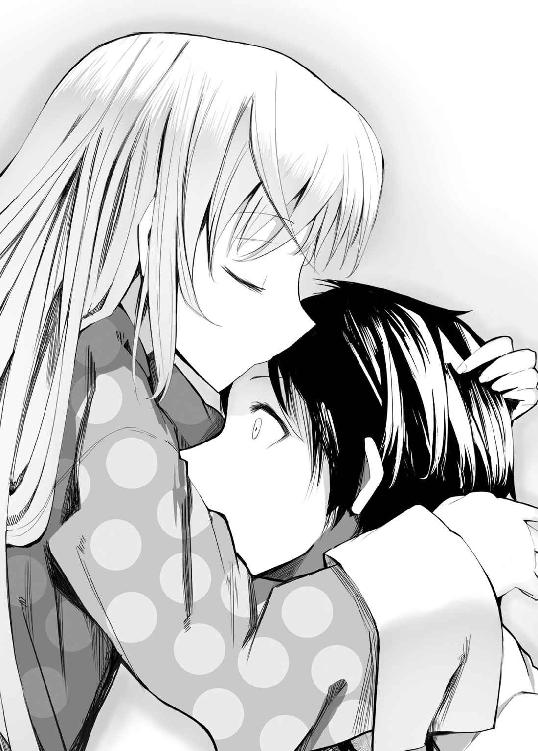

| ひきこもりの彼女は神なのです。 (ＨＪ文庫) | |
| すえばしけん | |
| (2011) | |


――弱い？ そうね、あなたから見たら、そうなのかもね。
――うん、私の意見は違う。私たちはね、ときどきとても強いんだ。この子もきっと、強く強く育ってくれる。
――んー、理解できないかあ。じゃ、賭けてみようか？ 私の勝ち、つまり私の言ったことが正しいとあなたが認めたら、そしてそのときこの子が助けを必要としていてあなたがその価値ありと判断したなら......力を貸してやってくれないかな？
――そ。まあ、約束というか、お願いだよ。友人としての、ね。
プロローグ ヒーロー見参
手すりを乗り越え内側に入り込む。
タバコをふかす男が一人、俺の姿を見て目を瞬かせた。
「あ？ 何だ、お前？ いったい、どうやって......？」
それは当然の疑問だっただろう。ここは廃マンション五階のベランダ、外から容易に侵入できる高さではない。親切な俺は正直に答えてやった。
「外壁を歩いて」
そして拳を軽く振るう。男はガラス窓を突き破り、室内へと吹っ飛んだ。
サッシごと窓を蹴り飛ばし室内に入る。その場にいた全員の視線が俺に集中した。
照明を持っている男が一人。ビデオカメラを構えている男が一人。そして、衣類を乱した三人の少女が、その倍以上の数の男に押さえつけられている。男どもはいずれもカラフルな髪の毛と派手な身なりで悪趣味な自己主張をしていた。
さて、腹が立つことを、『ムカつく』と表現する。日本語の乱れを象徴する若者言葉と思われがちだが、実は結構古い表現であるらしい。起源は江戸辺りにまで遡る、と授業で国語教師が言っていた。実際、強烈な怒りは吐き気すら伴うものだということを、このとき俺は実感していた。ああ、こりゃ確かに文字通り『ムカつく』だな。実に的確な表現。
「何？ このガキ。誰？」
カメラを構えた男が間の抜けた声で言った。次の瞬間、そいつは俺のパンチで宙に飛んでいた。
こいつらは全員俺より年上、おそらく高校生かそれ以上だろう。紛れ込んできた中学生に危機感など覚えたりはしない。
――だから、今から体に思い知らせてやるのだ。
俺は無造作に歩み寄り、照明男の手首を軽く握る。骨が砕けた。
「ぎ、あぁ――」
悲鳴を上げるより早く、片手で襟首をつかんで放り投げる。八〇キロはありそうな小太りの体が軽々と男たちの上を飛び越え、鈍い音を立てて向こう側の壁に激突した。
「な......て、てめぇ！」
少女に取り付いていた男の一人が、バットほどの長さの材木を拾って襲いかかってきた。
うなりを上げる凶器。俺の頭に直撃し、角材が折れ飛ぶ。皮膚が軽く裂けたのだろう。生暖かい血が一筋、額から流れ落ちる。
――それだけだった。
「危ないな。普通の奴なら死ぬよ、これ」
殴りかかってきた奴はもちろん、周囲の不良たちも揃ってぽかんと口を開けている。
「な、何なんだよ、お前、何者だよ......」
「何者とかさ、どうでもいいだろ、そんなこと」
俺は目の前のむさ苦しい集団を睥睨した。
「でもまあ、それだけじゃ愛想なさ過ぎだから、目的だけは教えてやろうかな。俺はな、お前ら全員を――」
笑みを浮かべる。相手にこれからの運命を教えるように。恐怖を深く刻み込むように。
「ぶっ殺しに来たんだよ」
＊ ＊ ＊
俺の半分は人間ではない。
常人より少しばかり強靱な肉体。
重力を無視して壁や天井を歩くことができるという、少しばかり不思議な力。
――それが俺の持って生まれたもの。
俺は弱きを助け悪をくじく正義の味方だった。
恥ずかしげもなく言ってしまえば――そう、絶対無敵のヒーローを自認していたのだ。
子どものころ、向かいの家の幼なじみをイジメっ子たちから助けたのが最初の記憶。
以降、揉め事を収めたり、喧嘩の助太刀をしたり、不良グループを壊滅させたり――とにかくいろんなことに首を突っ込んだ。
友人や知り合いや、そのまた友人や知り合いたちに力を貸した。そして感謝され、賞賛された。俺はそのことを誇らしく思っていた。
他人とは少し違っていても俺は人間として生きてきたし、これからもそうできるものだと根拠なく信じていた。無邪気なことだ。
――これはそんな俺が挫折した後の話。
俺がヒーローを辞めたところから始まる物語だ。
一章 ニュートラルハウスの住人たち
「は？ 来れないって何だよ？ ......いや、そりゃしょうがないけど、でも、俺だけじゃ場所わかんないって......おい、親父――！」
俺の言葉を無視して電話は切れた。舌打ちして携帯をしまう。相変わらずあの男は人の話を聞かない。
初めて訪れる街。知り合いは一人も居ない。先方の住所も連絡先も知らない。
つまり、この条件下で目的地までたどり着かなければならなくなったということだ。
「......交番でも探すか」
俺はバッグを担ぎ直して駅前を歩き出した。
四月頭の黄昏時にしては暖かい。汗ばむほどだった。さほど大きな駅ではないが、今は時間が時間なので勤め帰りのサラリーマンたちでごった返している。
交番はすぐに見つかった。が、人の気配はなかった。近寄って中をのぞき込む。やはり無人。カウンターに『ただいまパトロール中です』の札が載っているだけだった。
ついてないときはこんなもんだ。俺はため息をつく。
ま、すぐに戻ってくるだろう。目に付いたコンビニでおにぎりとジュースを買い、駅前広場のベンチで食べながらお巡りさんを待つことにした。
小さなロータリーの向こうにはコンビニの他にも床屋、本屋、喫茶店など様々な店が建ち並んでいた。繁華街というよりは下町の商店街といった方が近いだろう。それなりに活気づいているようだ。適度な喧噪が心地よかった。
実尋市。内陸部の山間にある地方都市。
そして新しい俺の街。新しい俺の生活の場。うん、第一印象は悪くないな。
――視界の端に〝それ〟が映ったのは、そんなことを考えたときだった。
最初は正体不明の灰色の毛皮に見えた。ちょうどコートの袖口や襟元に付いているファーが、何かの拍子に外れて落ちたような感じだ。
だが部分的に色彩がピンク色だったり赤っぽかったりする。俺はすぐにそれが無惨な野良猫の死体であることに気づいた。車にでも撥ねられたのだろう。通行人たちが眉をひそめながら横目で通り過ぎて行く。
可哀想だなと思った。少し考えて、どこかに埋めるか、せめて人目に付かない場所に移動させてやることにする。近付き、手を伸ばした。
その瞬間――突然、猫がかっと目を開いた。
思わず俺は、は？と間抜けな声を上げていた。
どこからどう見たって生きていられるような傷じゃない。しかし、それにもかかわらず猫はゆっくりと起き上がり、俺に向かって明確な敵意を込めて唸りながら、牙を剥き出しにした。
何これ。何が起こってるんだ、おい？
通行人たちも異状に気付いたようで、足を止める。すぐに俺と猫を遠巻きにざわめく人垣ができあがった。
「いや......別に、苛めたりする気はないんだけど」
とりあえず両手を挙げて害意のないことをアピールしてみた。残念ながら効果は薄かったようだ。猫はシャアッ！と一声鳴くとこちらに飛びかかってきた。俺はどう対応するのか決めきれないまま、反射的に身構える。野次馬たちの中から小さく悲鳴。
――と、横から伸びてきたごつい手が、空中で猫をつかみ取った。
「あー、こういう悪さするのがたまに出るんだよねえ。こらこら、おとなしくしなさい」
大柄な若い警察官だった。愛嬌のある笑顔を浮かべている。
首根っこを捉えられた猫は暴れた。はみ出た腸がぶらぶら揺れる。普通に死んでるなら同情もできるが、襲いかかられた立場としてはひたすらグロいというしかない。
しばらくの間抵抗していたものの、やがて死体猫は力尽きたかのようにぐったりとなった。と、同時に、だらしなく開いた口元から、何か煙のような物が出てくる。
何だ？と思った次の瞬間、俺は驚きに目を見張った。
警官の口が耳まで避け巨大化すると、煙モドキをばくんと一呑みにしたのである。
喉を鳴らしてその何かを嚥下すると、警官は野次馬たちににこりと笑った。
「はいはい、この子は本官が埋葬しておきますので、安心してお帰り下さい」
人垣はあっという間に解散し、何事もなかったかのように日常の風景が戻ってきた。
車に轢かれたのかしらね、可哀想よねえ、なんておばさんたちの会話が聞こえてくる。
俺は茫然としていた。何だ、今のは。猫もそうだけど、この警官もおかしくなかったか？ なんで周りの奴らは何事もなかったかのように普通に談笑してるんだ？
「ちょ、ちょっと」
「うん？ どうかした？」
死骸を片づけようとしていた警官がこちらに視線を向ける。
「今の、いったい......」
「あ、君は覚えてるんだ」
覚えてる？
「いやあ、ときどき下級の霊が死体に取り憑いて悪さするんだよ。基本的にこういうのは人間の記憶からは削除されるようになってるから、ほっといても騒ぎにはならないと思うんだけど......まあ、気分の良いものじゃないし、怪我人が出たりしたら困るしさ」
状況をまったく飲み込めない俺の顔を見て、警官は首を傾げた。
「ん？ 記憶が残ってるってことは、君も人間じゃないんだろ？ あ、ひょっとして旅行者かな？」
「い、いや、高校に入ることになって、今日から引っ越して来たんだけど......」
「ああ、曙光山学園？ 何にしても実尋市は初めてなんだね。そっかそっか」
警官は人の好さそうな笑みを浮かべ、得心がいったというように肯いた。
「まあ、一言で言えば、ここは色々と特殊なんだ、学校に行ったら多分、先輩たちに色々教えてもらえると思うよ」
「特殊......」
その言葉は俺を多少落ち着かせる効果があった。そう、人間として生きてはきたけど、俺自身だって結構非常識な存在なのだ。広い世の中、〝特殊〟が他に存在していてもおかしくはない。つまり――ここはそういう街だと考えてもいいのだろう。
まあ、その辺の事情については、あとで親父か寮の人にでも訊いてみるとしよう。
冷静さを取り戻すと当座の問題が思い出された。
「あ、道を尋ねたかったんだけど......曙光山学園の寮ってどこかわかります？」
「市内に幾つかあるよ。何寮？」
「えーと、確か、紅南寮、だったかな」
紅南？と繰り返した警官の顔からすっと笑みが消え、代わりに怯えが宿った。
「あの......もしかして、紅南町のニュートラルハウス？ あの『天秤の会』の？」
曙光山学園は、この地域で一番の規模を誇っている小中高大一貫の私立学校である。
俺はこの春からここの高等部に通うことになった。
色々あって地元から離れたくなっていたところ、親父から曙光山を勧められ、受験。で、見事合格したというわけだ。
通学にあたって実家を離れて寮住まいをすることになり、今日はこれからその新しい住み処に向かうところ。ちなみに紅南寮というのは普通じゃ入れない特別な寮らしいのだが、何でも寮長さんが親父の知人らしく、特別に許可が下りたのだそうだ。
その親父、本来なら今日は俺と一緒に寮長さんに挨拶することになっていた。が、急遽来られなくなったと連絡があった。これが先ほどの電話である。
『やー急に仕事が入ってなあ、悪い悪い。お前から先方にお詫びしといて』だそうだ。
親父の仕事はカメラマンだ。専門は人物――特に女性。グラビアの水着や、ときにはヌードを撮ったりもする。トークでモデルさんたちをリラックスさせたり、自然なポーズや魅力的な表情を引き出すのも仕事のうちらしい。そのせいか、息子の俺から見ても陽気で大らかな、悪く言えば軽くていい加減な性格をしている。確かにイレギュラーな仕事が入ることも珍しくないのだが、それならそれでもう少し悪びれてほしいものだ。
お巡りさんに教えられた道順通りに一〇分ほど歩く。目的地に着いた。
着いた、のだが――
「......何だこれ」
目の前には大きな洋館が建っていた。
洋館とは言っても豪華や瀟洒というイメージの対極、ぼろぼろでツタの絡んだお化け屋敷っぽい佇まいのものだ。そのくせ住宅地の一区画をまるまる占領しながら鎮座しており、異様な存在感がある。
場所は合っている――はずだ。
背の高い鉄柵沿いに進んで入口を探す。ほんとに人住んでんのか、ここ。
と、そのとき、俺は思わず、お、と声を漏らした。
一階の窓、厚いカーテンの隙間から人の顔がちらっと覗いたのだ。見えたのは一瞬だったが、多分、女性、それも俺よりやや下かなという年頃の少女。
まさか幽霊でもないだろう。寮なのだからむしろ人が居て当たり前だ。けど......そうすると男女混合寮ってことなのか。
そのまま歩いていると、ほどなくやけに威圧的な門の前に出た。
脇にはヘタクソな――というか、妙に味がある気もするのでヘタウマな、と表現するべきだろうか――毛筆で『にゅーとらるはうす』と書かれた木の看板が下がっている。洋館の雰囲気にミスマッチだ。
インターホンは一応設置されていた。薄汚れており、機能しているのかどうか疑わしいと思ったが、押してみるとやや調子外れの電子音が流れた。
「はぁーい」
ほどなく扉が開き、小柄な影がぱたぱたと走ってくる。
「お客さまなのですかー？ なにかご用なのでしょうかー？」
一〇歳になるかならないかという年齢の、外国人の女の子だった。ふわふわの金髪に薄いブルーの眼、濃紺の西洋女中服――平たく言えばメイド服を着ている。それも安いコスプレ衣装的なテカテカペラペラしたものではなく、古い外国映画に出てくるような、作りのしっかりした本物だ。
「............」
「あのー......？」
沈黙する俺に、小さなメイドさんは首を傾げた。
「あ、えっと......ここ、曙光山学園紅南寮で間違ってないよな？」
「はいですー。ウルリカたちは『ニュートラルハウス』って呼んでるのですよー」
「ウルリカ？」
「はい、ウルリカ」
メイドさんは微笑んで自分の顔を指した。名前ということらしい。
若干文法的には怪しい気もするけど、とりあえず日本語は通じるようだ。
「あ、俺、名塚天人。今日からここに入ることになってるんだけど」
ウルリカはぽんと手を叩いた。
「はいはい、聞いてるのです。今ちょうど、てとらさま――えっと寮長は用事で手が放せないので、少し中で待っててほしいとのこと。どうぞ、お入り下さいなのですー」
俺はウルリカの後に続いて雑草の伸びた庭を横切り、洋館――寮の中に入った。
「えっと、ウルリカも曙光山の生徒さんなの？」
「いえ、ウルリカは亜夜花さま付きのメイドなのです」
亜夜花さまというのはこの寮の住人なのだろう。
しかし、メイドねえ......。その存在はもちろん知っていたが、コスプレでも店員でもない本職をこの目で見る日が来るとは思わなかった。何か異世界にでも来た気分だ。
案内された洋館の中はある意味外以上に荒れていた。
外観は本当に人が住んでいるのか疑わしいものだったが、中を見れば確かに生活の痕跡があるのがわかる。問題は生活臭豊かすぎて乱雑というか、混沌の域にまで達していることだ。古本やゴミ、大小様々のガラクタが廊下にまで散乱。人が住んでいないなら、ここまで散らかることはないだろう。
「これとか、まだ使えそうだよなあ......」
埃の積もった棚を見て呟く。古いが、がっしりとした作りでモノはいい。もったいない。
「ここ、片付けとか掃除の当番とか決まってないの？」
「はい、特にないですー。お掃除はときどき時間を作ってウルリカがやるのですよー。でも広いお家ですし、高いところとかはどうしても手が届かなくて......」
少し気まずそうにえへへと笑う。
よく見ると、窓も下半分は磨いた跡がある。ウルリカの身長では踏み台を使ってもこれが限界なのだろう。というか、こんな子どもに掃除を任せっぱなしとは......どんな寮だよ。
「えーとですね、ほとんどのみなさんのお部屋は二階ですー。亜夜花さまとリョウタさまだけが一階ですね。一階にはあと食堂や台所や大きなお風呂なんかがあるのですよ。お風呂やシャワーはお部屋にもあるのであんまり使われませんけどね。――では、こちらでしばらくお待ち下さいなのですー」
俺を応接間らしき広い部屋に案内すると、ぱたぱたと早足でウルリカは出て行った。
大きいけど古いソファーとテーブル。調度品はそれだけだ。一応、片付けられているといえなくもない。
ややあって、お盆にティーカップを載せてウルリカが戻ってきた。足取りがちょっと危なっかしい。見た感じ、食器は清潔に保たれているようだ。紅茶自体はティーバッグだったが、礼を言ってありがたくいただくことにした。
お茶を置いてもウルリカは下がらず、何か言いたそうな表情で俺に視線を向けていた。
「......どうかした？」
「あのー......天人さまは、どういった〝存在〟なのです？」
無邪気な好奇心に目をキラキラさせている。
「......どんな、存在？」
「だって、この寮に来るってことは、天人さまも人間ではないのですよね？」
「............」
俺の胸中に、ああやっぱり、という思いが湧き上がる。
実尋市に着いた途端に遭遇した出来事。警官の態度。そしてウルリカの言葉。
この街ではそれが普通。そういうところなのだ。
ウルリカは少し顔を近づけてふんふんと鼻を鳴らした。
「んー、なんか、てとらさまと似た匂いがするのですよ。同族？」
「......って言われても、俺、そのてとらって人と会ったこと無いしな。俺的には人間として生きてきたつもりだけど」
「確かに人間の匂いもするですよー。そっか、ハーフなのですね」
うんうんと肯くと、ウルリカは少しはにかむような様子で続けた。
「......あの、天人さま、一つお願いがあるのですけど......待ってる間、ちょっとだけ遊びのお相手、してくれないですか？」
「ん？ いいけど、遊ぶって何をして？」
「何でもいいのです。プロレスでもお相撲でもキックボクシングごっこでも」
トランプとかなぞなぞあたりの可愛らしいものを想像していた俺はやや面食らった。肉体派な子だな。いや、活発なのは悪いことじゃないけどさ。
「ほんのちょっと構ってくれるだけでもいいのです。ね、遊んでくださいようー」
ウルリカはボール投げをせがむ犬のような顔で俺を見上げ、俺の手を取った。
瞬間――俺は言葉を失った。
幼い少女のものでは――いや、人間のものでは決してあり得ない力強さで腕を引かれたのだ。反射的に力を込めて抵抗する。それをどう解釈したのか、ウルリカはにっと笑った。
「引っ張りっこなのですね。負けないのですよー。――そーれぇっ！」
「な――」
多少細っこいが、俺は決して小柄な方じゃない。その俺の体が、床とほとんど平行に文字通り宙を飛んだ。高速で後ろに流れて行く景色の中、どうにか体勢を立て直し、壁に着地する。足裏がしびれた。頑丈な壁で幸いだ。安普請な造りだったなら、突き破って隣の部屋までぶっ飛ばされてたかもしれない。
ウルリカが壁に立つ俺を見て目を丸くし、そして嬉しそうに笑う。
「わ......すごいすごい！ そんなこともできるのですね。じゃあ次はちょっと本気で行くのですよー」
「い、いや、ちょっと待って――」
俺は慌てて言って、壁の天井側へ移動した。
信じがたいが、本人は悪気無くじゃれついただけのつもりらしい。だが、控え目に言ってもヒグマを余裕でねじ伏せられる程度のパワーはあるだろう。常軌を逸している。
とにかく、止めなければならない。ここなら背の低いウルリカはどうやっても届かないだろうから、まず落ち着かせて話を――
などと考えたのが間違いだった。
力が強いということは、つまり筋力が強いということだ。当然それはダッシュやジャンプにも反映される。
「えーーーーーーーーーーーーーーーーーーーーーーーーーーーーーーい！！！！！」
気付いたときには、靴底が視界いっぱいに迫っていた。
＊ ＊ ＊
「天人くんには、人間として生きていって欲しいな」
それが亡くなった母さんの口癖だった。
俺の親父は人外の存在である。
といっても見た目は普通の人間と変わらない。違うのはその能力だった。人間より遙かに強靱な体と、そして魔法のように不思議な力を持っていた。家族以外の前では決して見せなかったが、手を触れずにテレビのリモコンを手元に引き寄せたり、割ったコップをまるで何事もなかったかのように元に戻したりしたのを何度も目にしたことがある。
物心付いたときからそういう存在として傍にいたから、俺は特に疑問を感じたりはしなかったし、やたら社交スキルの高い親父もうまく人間にとけ込んで暮らしていた。
普通の人間である母親との間に生まれた俺と八つ下の妹にも、ある程度その力は受け継がれている。俺の場合、筋力や治癒力が常人より高い、重力を無視して壁や天井を自由に歩くことができる、というのがそれだ。
自分が普通の人間とは少しばかり違っていることは、幼い頃から理解していた。両親はその力を不用意に発揮することを厳しく禁じ、人間として生きていくことを俺に教えた。
さて、俺が小学校を卒業しようかというときに、母さんが死んだ。
もともと体が弱かったのだが、妹を産んだ頃から頻繁に体調を崩すようになっていたのだ。覚悟を決める時間は十分にあったとはいえ、いざそうなってみるとやはり応えた。
俺たちの前では明るく振舞ってはいたものの、親父は仕事に時間を割きがちになり、家に帰ってくることが少なくなった。文句を言うつもりはない。母さんの治療費を捻出しなければならなかったため名塚家は経済的に裕福とは言えなかったし、俺たちの養育費もかさむし、親父自身も心の痛みを何とかして紛らわす必要があったのだろう。
ただ寂しさは如何ともしがたく、俺は友人たちの間に居場所を強く求めるようになった。
つまり――自分の普通ではない力をこれまでよりさらに積極的に行使することによって、子どもたちのコミュニティの中で揺るぎない立場を得ようとしたのだ。
中学に上がると、友人知人のトラブルに積極的介入をするようになった。群を抜いた強さが知れると、助っ人として喧嘩に駆り出されることも多くなった。
暴力や争い事が好きなわけではない。不必要に力を誇示することは決してしない。しかし、必要があれば相手を叩きのめすことを躊躇しなかった。常人離れした力がばれない程度なら問題ないと思っていたのだ。
そして俺はヒーローになった。そんな自分に疑問を覚えることもなかった。
――とある事件で、後悔を心に深く刻みつける羽目になるまでは。
今の俺は、ヒーローではない、ただの人間。余計なことに首を突っ込まず、ゆるーく平和な生活を送ることに決めた、母さんの望み通りのごく平凡な人間だ。
＊ ＊ ＊
柔らかいベッドの上で目が覚めた。
周囲は薄暗い。何時くらいだ？ もう日が沈んでしまっただろうか。
ゆっくりと記憶が戻ってくる。どうやら蹴り飛ばされて気絶していたようだ。生まれてこの方、こんな経験をしたのは初めてだった。
そっと顔をなでてみる。さほど痛みはない。せいぜい薄い痣が残る程度だろう。
ふと見ると、ベッドにウルリカが顔を伏せて寝息をたてていた。傍に付いていようとしたものの、睡魔に負けてしまったらしい。
微笑ましい光景だなと口元を緩め――そして俺は目を二度三度と瞬かせた。
豊かな金髪。その中から、グレーの毛に覆われた一対の獣耳がぴょこんと生えている。そしてスカートのお尻の部分から、ふさふさとした尻尾が覗いていた。
「ん............」
俺が身じろぎする気配を察したのか、ウルリカは目を開けた。
「あ、天人さま......」
寝ぼけ眼をこすり、そしてこうなるに至った経緯を思い出したらしい。
「き、き、気が付いたのです？ 痛くないですか？」
「ああ、大丈夫」
「ご、ごめんなさい、でした。その――まさか、あんなに弱いと思わなくって......」
「弱い......」
弱い、か。確かにこの子にとってはそうなのだろう。
少し愉快で新鮮な気分だった。くくっと笑みが漏れた。
「あ、あの......？」
ウルリカが反応に困ったような顔をしている。
「あ、悪い。蹴りのことは気にすんな。逆にお礼を言いたいくらいだ。――なあ、その耳、尻尾は本物だよな？」
「ふえ？」
ウルリカはぺたぺたと自分の頭を触る。
「あ、出ちゃってる。......たまに油断するとこうなるのです。ウルリカ、本性が犬なものですから」
「犬？」
「はい。あ、ただの犬ではないのですよ、『最高の犬』なのですー」
えへん、と少し自慢げに胸を反らす。
「とはいえウルリカ、変化は苦手なのです。完璧に人間の姿を取るのは難しくって、気を抜くと正体が出ちゃうのですよ。亜夜花さまとかてとらさまとか他の方なら、こんなことはないのでしょうけど」
俺は体を起こした。
「なあ......それ、触ってもいいか？」
「え？ その、は、はい、優しく、なら」
俺はウルリカの頭の犬耳にそっと触れた。柔らかく、温かい。指で縁をなぞるように撫でると、ぴるぴると動く。次いで尻尾に手を伸ばす。
「あ、あの......？ そ、そこは......」
スカートの後ろのところに目立たないスリットがあり、そこから尻尾だけ外に出せるようになっているらしい。
「あ......」
指を這わせると、ウルリカがぴくりと体を強ばらせた。
尻尾の付け根から先までの感触を確かめる。
「ふあ......そ、れ、だめ......く、くすぐったいです......」
本物、だなあ、間違いなく。
指を往復させると、ふさふさした毛皮の下に確かな尾骨の感触がある。最初のうちは抵抗するようにふぁさふぁさ動いていたが、今は観念したようにされるがままになっていた。
「ん......」
ウルリカは何かに耐えるように小さく声を上げ、体をすり寄せてきた。
本当に人間じゃないんだ、と俺は思った。――そう、俺と同じく。
駅前で警官の変貌を目の当たりにしたときは驚いた。しかしもう動揺はない。代わりに安堵と理解と、自分でもよくわからない複雑な感情が胸中に渦巻いていた。
不思議な力は生まれたときから身近にあった。親父もその由来や自分の出自について語らなかったから、あまり深く考えたこともなかった。しかし、俺たちのような〝人にあらざるもの〟が他にいても、まったくおかしなことではないはずだ。
この場所において『名塚天人』は強くもなく珍しくもなく、取るに足らない一人の半人間でしかない。大勢の中に埋もれたまま、平穏に生きていくことができる。
だからこそ、親父は俺をここに送った。
だからこそ、俺はここに来なければならなかった。
「......そういうこと、なんだな」
尻尾を優しく撫でながら、俺は肩を震わせ声を殺して笑った。
と、そのとき、部屋の向こうから声が聞こえた。
「笑顔で女の子のお尻を撫で回すというのは、何か人間的には意味のある行為なのでしょうか？」
反対側の壁際、パソコンデスクの前に座った小柄な少女が俺を見ていた。人形のように綺麗な容貌をしているが、どこかぼんやりとした、不思議な雰囲気がある。歳は多分、ウルリカより幾つか上、俺より幾つか下というところ。
その顔が先刻窓から覗いていたものであることに俺は気が付いた。
「あ――」
俺は慌てて手を引いた。
ウルリカがふにゃぁと声を上げてベッドの上にぱたんと体を倒した。
「い、いや、別に、お尻を撫でてるつもりなんかなくて、俺は......」
「撫でていたように見えましたが」
少女は感情の読めない声で冷静に指摘した。
尻尾はお尻に含まれますか？ 含まれるような気もするなあ。客観的にイメージしてみる。薄暗い部屋で、笑みを浮かべながら、幼女のお尻を撫で回す男。うん、アウト。
「あの、その、ウルリカは気持ちよかったから大丈夫なのですよ？ 天人さま、とってもお上手なのです。こういうの、慣れてる感じで」
「......フォローは嬉しいんだけど、なんか自分が人間失格な気分になるんで、ちょっと黙ってて」
お目覚めをてとらさまにお知らせしてくるのですー、とウルリカが出ていったので、俺は少女と二人、部屋に取り残された。気まずい。
さて、どう対応したものかと思ったとき――俺は彼女の左右の瞳の色が違っていることに気が付いた。左が青色、右が赤色をしている。
「きれいだな、その目」
思わずそんな言葉が口を衝いて出た。
「......お世辞ですか？」
「いや正直な感想」
少女は観察するように俺をじっと見つめる。そして、居心地の悪さを感じ始めたころ、ゆっくりと口を開いた。
「私は氷室亜夜花。ウルリカの主です。ここは私とウルリカの部屋。あなたが今寝ているのが、ウルリカのベッド」
「あ、ああ、俺は――」
「あなたが新しく入寮した半人間であること、名前が名塚天人であることは知ってますので、自己紹介は不要です。......身内の非礼についてはお詫びします。あの子の罪は主人である私の罪。大変申し訳ありませんでした」
亜夜花は淡々と言って頭を下げた。
「あの子は人間の年齢に換算してもまだ幼いので、どうかご容赦下さいますよう。お尻を撫でたことと引き替えに、気持ちを収めていただければ幸いです」
「い、いや、俺そんなつもりは......」
「嫌？ 駄目ですか。ウルリカのでは不服ということですね。では、私のお尻でどうでしょう？ あの子よりはいささか発育していると思われますが」
いきなり何言い出すんだこの子。
「ってか、君、言うほどウルリカとは差が――じゃなくて。そもそも、俺にそんな趣味はない」
いやまあ、健全な男として興味がまったくないとは言わないが、どうせなら肉付きのいい方が好みである。
「そうですか。困りました。では赦していただくにはどうすればいいのでしょうか」
亜夜花は無表情のまま首を傾げた。
「どうすれば、って――」
俺は戸惑いながら、改めて彼女を観察する。
だらしなく着崩れたパジャマ姿。寝癖のついた髪。小さな体を薄いブランケット（可愛いキャラクターがプリントされている）にくるんで、大きな椅子の上に行儀悪く体育座り。顔立ちは気高い感じに整っているが、全体的に醸し出されただらしなさというか、残念感がそれを打ち消して余りある。
デスクの上に口の開いたポテトチップスの袋が無造作に置かれている。その横のモニターにはＣＧで描かれた中世風の街並みとローブをまとったキャラクターが映っていた。
「......それ、ネトゲ？」
「ええ。多分あと二時間ほどやればレベルが上がります」
彼女は厳かな声で答えた。
改めて周囲を見回す。十数畳はありそうな部屋。寮の個室にしてはかなり大きい。薄暗いのは、夜にもかかわらず光源がパソコンモニターしかないからだ。
廊下への出入り口の他にドアがあるところを見ると、どうやらバス、トイレ付きであるようだ。ちょっといいマンションやホテルの一室を連想させる造りである。
今俺が居るのと併せてベッドが二つ。窓には分厚いカーテン。四〇インチほどの液晶テレビとＤＶＤデッキ。テレビの前にはゲーム機が幾つか。その隣にソフトが無造作に山積み。床にはコミックやらＤＶＤのパッケージやらお菓子の空箱やらが散乱しており、地層を形成している。
――ネトゲ廃人。そんな言葉が脳裏に浮かんだ。
「あのさ、君......もしかして、ひきこもりってやつ？」
「いえ、外の世界へ出る労力を省き、生活を一室で完結させているだけです」
「......どこに違いがあるんだ、それ」
「目的意識と確固たる意志でしょうか」
つまり......容易には考えを曲げない固い覚悟で引きこもっているということだろうか。自慢にもならないような気がするが。亜夜花は相変わらず無表情で、本音とも冗談とも区別が付かない。
「それで、どうすれば赦していただけますか？」
「え？」
問い返して、先程から彼女が話題にしているウルリカのキックのことだと気付いた。
「......ああ、もういいよ。大した怪我もないし」
「対価なく赦す、と？ それでいいのですね。 ――では、この話はおしまいで」
言って亜夜花はドアの方を手で示した。
「......出てけってこと？」
「何か私の部屋に留まる理由がおありですか？ であれば、検討しますけど」
亜夜花は不思議そうに言った。特に気分を害しているわけでもなく、ただ単純に疑問に思っているようだった。何というか、つかみ所のない変わった子だ。
「いや別に。じゃあ失礼――」
そう言いかけたとき、突然部屋に電気が灯った。
「いえいえ、そう言わず、もう少しだけー」
右手からのんびりとした声。反射的にそちらを向くと、一人の女性が立っていた。
俺は目を瞬かせる。いつのまに入ってきた？ ドアを開閉する気配あったか、今？
年齢は二〇歳過ぎくらいだろうか。背はやや高め。細身だが決して貧相ではなく、均整のとれた体つきだ。えらい美人だが、目つきは柔らかい。理知的で落ち着いた大人の女性という雰囲気がある。彼女はほわんとした笑みをうかべた。
「天人君、はじめまして、こんばんはぁ。......あ、目が覚めたところだから、おはようの方がいいのかな？」
そう言って首を傾げる。
「どう思う？」
「......いや、どちらでも」
前言撤回。やっぱりちょっと変な人っぽい。
「あ、申し遅れました、私、ここの寮長の御子神てとら。よろしくー」
間延びした口調で言うと、彼女はふやぁと欠伸をした。
「ニュートラルハウスへようこそー。歓迎するよ」
「はあ......どうも、名塚天人です」
ということは、この人が親父の知人か。
「あ、ちなみに表の看板は見てくれたかなあ？ 私が書いたんだ」
俺は門のところにあった木の表札を思い出した。個性的な筆致で『にゅうとらるはうす』と書かれていたあれだ。
「ひらがなって曲線的で可愛いよねえ。なんかふにふにくねくねした毛虫みたい」
てとらさんはうふふふと笑った。さらに前言撤回。間違いなく相当に変な人だ。
「ここ、私の部屋ですが。てとらさん」
部屋の主が口を挟んだ。
「知ってるー。でも入室許可くれなさそうだったし、だから、勝手に入っちゃおうかなーって。大丈夫、用が済んだら出て行くから。――いやあ、びっくりしたんだよ。お昼寝から起きて下におりたら君が伸びてるし、ウルリカちゃんがオロオロしてるし」
「昼寝......」
用事で手が離せないとか聞いた気がするんですが。
てとらさんはふと思い出したように左右を見回した。
「あ、そういえば、お父さんは？ 今日、一緒に来ると聞いてたんだけど......」
「親父は急な仕事が入って来られなくなりました。申し訳ない、だそうです」
「あら、そうなんだ。せっかく久しぶりに会えるかと思ったのになあ。――そうだ。今、お父さんに連絡取れる？」
「出るかどうかはわかりませんけど、携帯で――と、バッグに入れっぱなしか」
「どうぞ」
いつのまにかてとらさんの手に俺のバッグがあった。先程まで手ぶらだった気がするのだが――いや、きっとそういうものなのだろう。あまり深く考えないことにする。
『よお、どうだ、無事に挨拶は済んだか？』
携帯を取り出して掛けると、すぐに陽気な声が聞こえてきた。
「ああ、今寮から。あ、ちょっと御子神さんが話したいって言ってるから代わるよ」
『え、御子神――？ って、おい、ま、待てっ！』
妙に慌てた声を出す親父を怪訝に思いながら、俺はてとらさんに携帯を渡した。
「どうも、ご無沙汰ですー。元気だった？ ......ところで、今日はどうしたの？ 保護者として当然あなたも来るものだと――ふうん、そう。いえいえ、嘘とは言わないですよ」
笑い声混じりの和やかな会話が交わされている。が、何となくあの不遜で奔放な親父が気圧されているようであるのは、気のせいだろうか。
亜夜花はというと、てとらさんも俺も居ないものとみなすことに決めたらしく、我関せずという態度でヘッドホンを着けゲームに掛かっていた。
「......ええ、責任持ってお預かりするよー、それはもう。でも、一度くらいは顔見せにいらっしゃいな。――そう、親としての義務だよ？ うん、覚えておきますねー」
さらに二言三言話し、てとらさんは俺に携帯を返した。
『......奴が居るなら先に言え。心の準備が要るだろうが』
恨めしげな声で親父が言った。
「知らないよ。ってか、親父と御子神さん、どういう知り合い？」
『どういう、って......あー、その、いうなれば家族とか、親子とか......』
「おい！ 俺に腹違いの姉さんが居たとかいうオチはないだろうな？」
『あ？ ああ、そうじゃない逆だ逆。どっちかというとあいつはお前のバアさ――』
突然ブツッという音と共に通話が切れた。
「このあたり、電波が不安定だから、ときどき通じなくなるんだよねえ」
てとらさんが穏やかな笑顔で言った。
「あの、御子神さんって、いったい......」
「て・と・ら」
「え？」
「てとらって呼んでね。ここで暮らす以上は家族も同然なんだから」
「てとら、さん」
彼女はおっとりと微笑んでいたが、それ以上先ほどの話題を蒸し返さない方が良い気がした。なんとなく。
「えっと、天人君は基本的に人間として育ってきたんだよねえ？ じゃあ、私たちの――〝人ならざるもの〟が現在置かれている状況については詳しく知らないかな？」
「そう......ですね」
「では、私がかいせつぅ......ほわぁ」
てとらさんは欠伸をした。
「解説をしますねー。まあ、面倒なので簡単に。――えーと、世の中には人の振りをして暮らしている人外の存在が、結構居るのね。例えばあなたのお父さんもその一人」
俺は肯いた。
「で、この実尋市はあ、えーと、人でないモノが人に融け込んで共存していけるかどうか、その可能性を探るための特別区域になってるの。テスト地域というかモデルケースというか、そんな感じ。だから、その種の存在が余所に比べて特に多いんだ」
「......そういえば、俺も見ました」
この街に着いたばかりのときにあった出来事を話す。突然動き出した猫の死体。そして、それから出てきた〝何か〟を一呑みにした警察官。
「ああ、駅前交番の彼ねー。駒井さんっていうんだけど、あの人は――いや、人じゃないんだけど、まあいいか――えっと、本性が魔除けの神獣なのよ」
うーん、とてとらさんは少し考えて、続けた。
「そうだねえ、神社の入り口なんかによく置いてある石像を思い浮かべてもらえばいいか。ああいうのが彼の正体。人間界では獅子とか狛犬とか呼ばれてるのかな。もともと悪いものを追い払うのがお仕事だから、警察はぴったりなのかもね」
なるほど、と思う。そういえば悪霊を食う一瞬、顔がそんな感じに変化していた。
「一般の人の記憶に残らないのは、結界のおかげだね。常識からして考えられないような、あるいは私たちにとって都合の悪いような出来事を人間が目撃した場合、その記憶を自動的に書き換えちゃう力がこの実尋市全体に働いてるの。んー、街全体が認識修正フィールドに包まれてるって言えば分かりやすいかな。――ここまで、いい？ 大丈夫？」
「だいたい理解できました」
「うん、お利口」
てとらさんは笑う。小さい子を褒めるような口調だったが、不思議と悪い気はしない。
「で、ここは一見ただの学生寮だけど、実はそういう存在を取りまとめて人間社会とのバランスを保つという役目を担っているんだよ。そのメンバーが通称『天秤の会』。だから、えっと、今、ここには天人君を除いて七人が生活してるんだけど、そのほとんどが――」
「〝人ならざるもの〟なわけですか。妖怪、怪物、幻獣と言われる類の」
そうだね、と一度肯き、そしててとらさんはちょっと首を傾げた。
「あー、ただ、その答えだと正確だとは言えないかなあ。私たちが相手にするのは確かにそういう存在なんだけど、同格だと対応し切れない場合が出てくるでしょ？ あ、〝人ならざるもの〟が悪いことを考えて暴れたりするケースのことね。それを確実に阻止できるだけの力がないとまずいわけ」
ふあぁ、と、そこでてとらさんはまた欠伸をする。
「ちなみにウルリカちゃんは亜夜花ちゃんが連れてきたお世話係だから、正式メンバーじゃない。つまり、えっと、あの子ともう一人を除いたここの住人はもっと高位の存在であるってこと」
「つまり......ウルリカより、もっと強い？」
「まあ、そう解釈してもらってもいいかなあ」
あれ以上に？とぶっ飛ばされた時のことを思い出しながら、俺は内心で呟く。ここではどんなことでも起こりうるのだとわかってきてはいたが、それでも簡単に信じられるような話ではなかった。
「簡単に言うとね」
てとらさんは眠そうな目をさらに細めて笑った。
「このニュートラルハウスの住人のほとんどは、人間たちが〝神〟と呼ぶレベルの存在なのですー」
＊ ＊ ＊
翌朝、俺は通勤ラッシュが終わったころ駅前に出、ハンバーガー屋で少し遅めの朝食を済ませた。その後細々した日用品を買い込みつつ、商店街を見て回る。今後利用しそうな店の位置をチェックしながらふらふらしていたら、いつのまにか昼になっていた。
昨日と同じ駅前のベンチに腰を下ろし、休憩。行き交う人々を眺めながら、俺は昨夜てとらさんが話してくれたことを思い出していた。
――この街の特殊な事情。
ここ百年の間に、人間の数は爆発的に増えた。科学は長足の進歩を遂げ、人類はどんどんその勢力圏を拡大していった。
しかし、そのことは同時に人ならざるものたちの居場所が失われたことも意味していた。
これはとりわけ強い力を持つものたち――神と称される存在にとっても深刻な問題だった。人間の発展は今やあらゆる脅威や障害の駆逐を可能としており、神に頼るものは少なくなった。もはや信仰の対象ではなく、記憶にとどめられることすらほとんどなくなった神々は、急速にその力を減じていった。このままでは存在を保つことすら危ういという状況になったのだ。
やがて彼らは『あらゆる人外の存在は、人間との共生を目指すべき時期にきたのではないか』という結論に達した。これまでにも人間社会にとけ込んで生活するものは居たが、数から言えば例外的な存在だった。それを組織的に推し進めようというのである。
数十年前、世界大戦後の混乱に乗じて計画は動きだした。その際にモデルケースとして選ばれたのがこの街だ。
実尋市――人口約三〇万ほどの地方都市。
三方を山に、一方を川に囲まれた地形で霊気の流れが良く、昔から霊や人外の存在などが集まりやすい場所だったという。とくに力ある神魔にとっては世界有数の好環境であり、弱体化の進行をかなり抑えることができるのだそうだ。
現在は人口の一パーセント程度が人ならざるものたちであり、人間たちと共存している。
俺が通うことになっている曙光山学園だが、これも計画の一環として神々たちの手によって創設されたものだ。学校というのは、人間にとってそうであるように、人ではないものにとっても社会の在り方を学び協調性を身につける訓練施設として有効に機能する。
特に人間との共存経験がない人外たちには就学義務が課せられており、人の社会で生きることを望むものはまず学校で人間との付き合い方を覚えることになる。生徒数におけるその割合は、およそ五パーセント弱。
もちろん学校の教師として活動していたり、あるいは昨日の警官のように治安を維持する役割のものもいる。こういうのはある程度の力を持ち、そして人間の中で十分に経験を積んだいわばベテランの仕事なのだそうだ。
そしてニュートラルハウスの面々――名のある神である彼ら『天秤の会』は、圧倒的な力を背景にその頂点に君臨している。人外たちの便宜を図り秩序を守る、つまり政府と軍隊を併せたような存在であるようだ。警官がその名前を口にしたとき、畏怖の表情を見せた理由が理解できた。
彼らはほぼ全員が人間として曙光山学園に籍を置いている。この社会への入り口はプロジェクトにおいて重要な位置を占めているため、特に目を光らせておく必要があるのだ。
なお、会は表向き『生徒間の互助組織』として知られている。小中高大関係なく生徒たちの相談に乗り、アドバイスや援助をするのだそうだ。生徒間に情報網を張り巡らせることで共存に関して起こる問題やトラブルを把握しておく狙いもあるらしい。『よかったら天人君も手伝ってくれないかな？』とてとらさんに誘われたのだが――
「......普通に人間として生活してくつもりだったからなあ」
俺は呟く。母さんの遺言だし、余計なことに首を突っ込まないと心に誓っていたし、そもそも自分にできることがあるとも思われなかったので断ってしまった。それ以上しつこく言われなかったので、問題もないのだろう。
しかし、のほほんとしたてとらさんや、あのひきこもり娘がそんなとんでもない存在だとは、どうしても信じ難いものがある。いや別にその力を疑ってるわけじゃないけど......人と同じく神も見かけによらないということなのかな。
「――っと、時間か」
時計を見、立ち上がる。午後に私物が実家から届くはずなので、そのころには寮に戻っていなければならない。
実は、荷物整理の前に片づけなければならない大きな問題が一つあるのだが......まあ、それは帰ってから考えるとしよう。
そろそろ住人たちも活動を始めているだろう。昨日挨拶しそびれた神様たちにも顔合わせを済ませておきたい。俺は亜夜花と違ってコミュニケーション重視派なのである。全部で七人ということだったから、てとらさん、亜夜花、ウルリカ以外にあと四人居るはずだ。
寮に帰ると玄関前でウルリカが掃き掃除をしていた。
「よ、ごくろーさん」
「あ、おかえりなさいーなのです」
手を止めて笑顔で出迎え。いい子だな。
「土産にプリン買ってきた。冷蔵庫に入れとくから食べてもいいぞ」
「わあ......」
ぱっと顔が輝き、同時にぴょこんと尻尾が生えた。ばっさばっさと左右に揺れる。
「嬉しいですー！ ありがとうなのです！」
「あ、一応全員の分買ってきたからお知らせついでに挨拶しときたいんだけど、みんな部屋とかに居るのかな」
「えーと......千那さまと万那さまは中かな。リョウタさまはまだ帰ってきてなくて、コウタさまは多分――あ、居たのです」
広い庭の片隅に花壇がある。その前にしゃがみ込んでいる小さな人影があった。
俺は近寄って声を掛ける。
「花、育ててんの？」
「薬草類を栽培してるだけ。使うから。......ボクに何か用？ 新入りさん」
こちらへ視線を向けると、ゆっくり立ち上がる。見た感じウルリカより少しだけ年上、一一、二歳だろうか。良くいえば大人びた、悪くいえば生意気で可愛げのない印象だ。
「あ、いや、挨拶しとこうと思って。俺、名塚天人、よろしくな」
「和泉コウタ。よろしく」
短く言って、もう用は済んだというように花壇に向き直る。
「プリン買ってきたんだ。冷蔵庫に入れておくから、適当に食ってよ」
「どうも。――ああ、念のため言っとくけど、ボクの菜園にはさわらないでね。デリケートなものも多いから」
それだけ言うとコウタは土いじりを再開した。
別に悪意は感じないけど、ずいぶんとドライな奴だな。
「すまないねー、こいつ、不愛想で」
背後からの声に振り向くと、長身の男が門の方から歩いてくるのが見えた。
「......また朝帰りかよ」
コウタがちらりと視線をむけて渋い顔になった。
「女の子がなかなか帰してくれなくてね。あと、時間的にはもう昼だよ、コウタ。日本語は正確に。――はじめまして。名塚くんだっけ？ 僕は和泉リョウタ」
「よろしくお願いします。和泉ってことは――」
「ああ、こいつの兄貴やってます」
「一応ね」
おもしろくもなさそうな声でコウタはそう付け加えた。
リョウタさんは二〇歳くらい。眉目秀麗で背が高く、手足が長い。外見的には文句の付けようのないほど整っているし、愛想の良い笑顔を浮かべているが、どことなく退廃的な雰囲気がある。そう、ホストでもやっていそうな。
「ここは女性が多いからね。数少ない男同士、仲良くしようよ」
リョウタさんはそう言って笑った。
基本的に個室は二階にあるが、夜中にふらふら出入りすることの多いリョウタさんは一階玄関近くの、ひきこもりの亜夜花は一階奥の部屋を使用しているそうだ。
寮の中に入り、少し考えてから俺は亜夜花の部屋に足を向けた。面倒な問題は先にケリをつけておくことにしよう。
軽くノックする。返事はない。ノブをひねっても動かない。カギがかかっている。
「おい、居るんだろ？」
強めにもう一度叩くとようやく応答があった。
「留守です」
「......居るじゃないかよ」
「部屋の主が自ら留守と言ってるんです。間違い有りません。お引き取りください」
「いや、話し合いくらいさせてよ。俺が困るんだよ！」
ドアの向こうは無反応。完全無欠の沈黙。
仕方ない。俺はため息をつき、一時撤退することにした。
話は昨夜、亜夜花の部屋の中にさかのぼる。
一通り実尋市について解説し終えたてとらさんは、呑気な口調でこんなことを言った。
「ところでね――実は天人君の部屋がないんだよねえ」
「............は？」
俺は思わず聞き返していた。
「空き部屋、なくもないんだけど......」
何でも二階の女子部屋が連なる付近なのだという。近くにシャワー室や洗濯機があり、さすがに男を住まわせるわけにはいかないのだそうだ。
「だから亜夜花ちゃんとウルリカちゃんにそちらに移ってもらって、ここを天人君の部屋にしようと思ってたんだよ。でも、亜夜花ちゃんに断られちゃって。天人君の入寮が決まってからずっと説得してるんだけどねー」
「......俺、どこで寝たらいいんですか？」
「とりあえず、今日はそこでウルリカちゃんと寝たらどうかなあ？」
「反対」
亜夜花がヘッドホンをはずし、振り向いて言った。聞いていたようだ。
「ここは私たちの部屋ですから。他人、それも半人間を受け入れる理由がありません」
「いや、だったら、さっさと部屋引っ越してくれてりゃよかったんじゃん。なんでここにこだわるんだ」
「この部屋には、私が積み重ねてきた大切なものが存在しているからです」
亜夜花は静かに言い、一瞬俺は言葉に詰まる。それだけこの場所を大事に思っているということなのだろうか。
確かに、俺は彼女にとって迷惑な乱入者かもしれない。自分の世界に土足で踏み込まれ、汚されるような印象を抱いたとしても不思議ではない。俺としてもそんなことを望んでるわけじゃないし――
「具体的には買い込んだマンガやゲームやＤＶＤが」
「そっちかよ！ 確かに物理的に積み重なってるけど！ なんか美しくも儚い涙を誘う思い出でもあるのかと思ってちょっとしんみりしちゃったじゃないかよ！」
「感動系のアニメや泣きゲーもありますけど」
「いや、聞いてないから」
俺は大きく息をついて心を落ち着かせた。
「で、何でそれが部屋を移らない理由になるんだ」
「動かすのが面倒だからです」
亜夜花はまるで『太陽は東から昇ります』とでも言うような調子で、そうのたまった。
俺が沈黙したのは、相手の言い分に正しさを認めたからではもちろんない。何だこのダメ人間――じゃなくてダメ神は。
「私が動くことはありえない以上、あなたが諦めるしかない。それが論理的帰結です」
おわかりですね？というように首を傾げる。
「いや、待て、ちょっと待て。君には君の事情があるのは理解した」
理解することと納得することが別であるのは、この際置いておく。
「でも、俺には俺の事情がある。俺だってちゃんとベッドで休みたいんだよ。部屋がないんじゃわざわざ寮に入った意味がない」
「そんなにウルリカと同衾したいのですか？」
「んなことは言ってないっ！」
思わず大声を上げた。
――いや、相手のペースに乗せられかけている。落ち着け、俺。大きく深呼吸だ。
「問題は俺の寝る場所がないってことだ。誰と寝るかは重要じゃない」
「あ、じゃあ、私の部屋で一緒に寝ようか？」
横からてとらさんが危機感のない口調で発言し、俺はゲホゲホとむせた。
「あらあら、大丈夫？」
「だ、大丈夫......いえ、それは遠慮します」
「えー？ 今、誰と寝るかは重要じゃないって言ったのにぃ......」
俺の理性が危険で危ないです。いや別に不埒なことをもくろんだり、大人なイベントを期待しているわけではないけど、ろくに眠れなくなるのはどう考えても明らかだ。
そのとき、亜夜花が唐突に口を開いた。
「――対価はありますか？」
「え？」
「私の部屋に寝所を確保したいなら、あなたは対価を払わなければなりません。何か提供できるものはありますか？」
どういう意味だろう。相変わらず無表情なので、真意は読めない。まさか――金寄越せってことか？ 俺が答えられずにいると、亜夜花は言った。
「ありませんか？ であれば、あなたの希望をかなえる理由は、私にはないようです」
結果として昨夜、俺は毛布を借りて応接間のソファで眠ることになった。椅子としてはそこそこ上物なのだろうが、さすがに人が寝るようには作られておらず、起きたときは体の節々が痛んだ。
こんな生活を何日も続けたくはない。早々に自分の部屋を確保しなければ。しかし、話し合いにすら応じない相手に何ができるだろう。
攻略法をあれこれ考えながら台所へ入ると、やかんが火にかけられていた。傍らにティーポットが置かれている。誰かがお茶でも飲むのだろう。
プリンを冷蔵庫にしまっていると、背後から声が聞こえた。
「あら、新しく入った人ですか？」
女性が一人立っていた。黒髪お下げの清楚な美人だ。電話でもしていたのか人形のストラップが付いた携帯を片手に持っている。
「はじめまして、柚原千那と申します」
「あ、どうも、名塚天人です」
歳は俺より少し上くらいだろうか。何というか――今度こそまともそうな人だ。
「みんなへの土産にプリン買ってきたんですけど、良かったら食べて下さい。冷蔵庫に入れとくんで」
「あら嬉しい。しかもこの箱、桜寿屋さんのですか。――ちょうどこれから、食堂でお茶を飲もうと思ってたんです。よかったらおつきあい下さいませんか？」
千那さんは穏やかに笑って言った。もちろん俺は喜んでお誘いに応じることにした。
ティーセットを載せたお盆を持って隣の食堂兼談話室に行くと、少女が古いブラウン管のテレビを見ながら、クッキーをひょいひょいと口の中に放り込んでいた。
こちらの歳は俺と変わらないくらい。顔立ちはどことなく千那さんに似ており整っているが、やや子どもっぽくて可愛らしい感じ。茶髪で華やかな印象がある。
「もう、万那ちゃんたら。お茶淹れるまで待っててくれてもいいのに......」
「待ってたらおなか減ってきちゃって。――って、誰？ あんた」
俺に視線を留めて訝しげに目を細める。千那さんはため息をついた。
「この間、てとらさんが言ってたでしょ、新しい人が入るって。――失礼な子でごめんなさい。妹の万那です」
「あー、そういやそんなこと聞いたかな、えーと......」
「名塚天人です」
「おっけ、覚えた覚えた。よろしく、名塚」
万那さんはおざなりにひらひらと手を振った。
聞けば千那さんが曙光山学園高等部の新三年生、万那さんが新二年生だという。二人とも俺の先輩になるわけだ。
ちなみにてとらさんとリョウタさんは大学、亜夜花は中等部、コウタは初等部に籍を置いているらしい。もっとも後者二人はほとんど学校に行ってないということだったが。
「......ふーん」
万那さんは値踏みするように俺の顔をじろじろ見た。
「悪くはないけど、今一つあか抜けないなあ。ちょっとがっかり」
「......すみませんね」
「万那ちゃん。天人君は桜寿屋のプリン買ってきてくれたんだよ。そういうことばっかり言ってるともらえないよ？」
「桜寿屋の？」
がたっと椅子を鳴らして万那さんは立ち上がった。目がきらきらと輝いている。
「あそこの、美味しいんだよねー。でも、引っ越してきたばかりでよく知ってたね」
「たまたま前を通りかかっただけですよ」
まあ、客の集まり方、店構えや店員の応対を見れば、どの程度真剣に商売に取り組んでいるかはわかるものだ。買い物術に関しては、経験に裏打ちされた自信がある。その俺が、少なくとも外れではないだろうと思って買った品だった。
「うん、よくやった。呼び名を『名塚』から『天人』に格上げしてあげよう」
「格上げなんですか？ それは」
「当然。苗字より名前の方が親しげでしょ？ このあたしに名前で呼んでもらえることを光栄に思いなさい。あたしのファンが泣いてうらやましがるわよ」
胸をそらす万那さんに、はあ、と返す。確かに綺麗だが自信家でもあるようだ。
千那さんはと見ると、諦めたような顔でお茶の支度をしていた。
「じゃあ、さっそくいただいちゃおうかな。......っとカロリーオーバーか？ これ以上食べると」
万那さんはむむ、と眉をひそめた。さっきまでクッキーをぱくぱく食べていたことを思い出したらしい。
「万那さんも神様なんですよね？」
そだよ、と万那さんは軽い調子で答えた。
「一応、神話では姉妹そろって戦神ってことになってるかな。ほかにも色んな属性があるけどね」
「まあ、外国のマイナーな神話なので、日本での知名度はさほどでもないと思います」
千那さんが付け加えた。
「で、えっと......神様も太るわけですか？」
俺が尋ねると万那さんは一瞬不機嫌そうな顔で固まり、そして大げさにため息をついた。
「そこから理解してないの？ これだから人間界育ちの半端者は......いい？ 説明してあげるから感謝と敬意を表しつつよく聞きなさいよ。――そもそもあたしたちがなんで人間社会に居るか知ってる？」
「はあ、大体のところは。昨日てとらさんに聞きました」
「よし。じゃあ、根本的な原因として、あたしたちの力が弱まってるってことがあるのは理解してるね？ 神としてこれまでのように好き勝手やってると、存在することすら危なくなってるのよ、現在は。で、力の消費を抑えるため、あたしたちは高次存在としての体――人間の目には見えない、いわば霊体ね――を止めて、人間の姿になることにした。自分の本質に最も近く、かつ最も自然な形を選択して」
「自然な形、というと？」
「人間と同じくこの世界の物理法則の影響を受けるってこと。だから耐性の強弱はあるにしても、神も病気になるし、強い衝撃を受ければ怪我もするし――」
「食べ過ぎると太る、と」
「不本意ながらね」
万那さんは渋い顔で肯いた。
「ほんと理不尽で面倒な話だけど、これが一番力を長持ちさせ、存在を維持するのに有効な方法なんだから仕方ない。まあ、『天秤の会』の一柱として、人間界で下級の存在を監督するのに便利だって理由もあるんだけど」
「でも、人間と同じってことは、運動したり節制したりすればちゃんと痩せるってことでもあるんじゃ？」
俺の質問は聞こえなかったことにされた。千那さんが小さくため息をついたところをみると、どうやら的を射ていたようだ。
万那さんはさりげなく話題を変えた。
「ところであんた、てとらと同族なんだって聞いたけど、そうなの？」
「ああ......何かしらの縁があるみたいですね。詳しくは知らないですけど」
「無関心なんだ」
「ん、俺は基本的に人間として生きて行きたいので、その辺は気にしないことにしてるというか」
「『天秤の会』の活動はどうすんの？ 一応この寮、本部みたいなもんなんだけど」
「そっちも遠慮させてもらえないかな、と思ってます」
何か言われるかなとも思ったが、千那さんも万那さんもふーんと軽く流しただけだった。
「まあ、それはそれでいいんじゃないでしょうか」
「人手が足りてないわけでもないし、協定があるからそうそう大事件も起こらないしね」
「協定？」
「あたしたちクラスが暴れると周囲に与える被害が洒落にならないから、神様同士は喧嘩しないことになってんの。あと極力超常的な力は行使しないとか、人間には干渉しないとか、そういう約束ごと。実尋市が滅茶苦茶になったらみんなが困るからね。こんなコンディションのいい土地は滅多にないし」
そういうものか、と思いつつ、一つ疑問が浮かぶ。
「協定が必要だってことは、逆に言えば、協定がなければ衝突が起こりかねない状況だってことですか？」
「そりゃまあ、みんなが仲良しこよしってわけじゃないからね」
万那さんは小さく肩をすくめた。千那さんが俺の前にお茶を置いて続ける。
「私たち神族はこの街の最高位の存在ですし、数も多くないんですが、それでも一つにまとまってるわけではないんですよ。『天秤の会』に不同意というか、敵対する勢力もなくはないですし」
「ま、会と関わらないなら天人が気にする必要はないよ。何か起こったとしても、どうせあんたじゃ猫の手よりも役に立たないだろうし」
万那ちゃん、と、千那さんは妹の歯に衣着せぬ発言をたしなめたが、俺はそれが事実であることを実感していた。性格の奇矯さはさておき、おそらくこの寮の面々は俺など及びもつかない力を持っている。
脆弱な取るに足らない一存在。それが今の、ヒーローではない俺。いいことじゃないか。
「一応、肩書き付けとくだけでバイト代入るから、その点はお得なんだけどね。あたしにとってはありがたい話」
いきなり話が生臭くなった。
「バイト代って......『天秤の会』ってバイトなんですか？ ――ってか、お金必要なんですか？ 神様なのに？」
「当たり前でしょ。服にコスメにアクセにお菓子代、お金は幾らあっても足りないって」
「不思議な力で黄金や宝石をぱっと出したりとか......」
「力の消費を抑えなきゃダメだって言ったでしょーが。物質の創成とか変換とか、どれだけ力使うと思ってんの。命削る羽目になるから、あんまりそういう無茶はできないの」
意外に不便だな、神様。
「それに、そういうのは社会経済に影響を与えますからね。人間だって勝手にお金を作ったら罰せられるでしょう？ 溶け込むのが目的だから、ちゃんと経済と流通の仕組みを尊重して生活しないと意味ないんですよ」
「だからバイト。あたしなんかお金足りなくなったらコンビニやファミレスで働いたりするんだからね」
なぜか自慢げに万那さんは言った。
いやまあ、それ自体はそれなりに立派なことだと思う。が、神様のダイエットに神様のバイト......神という語に対するイメージが変わりそうだった。
と、そのときウルリカが食堂に姿を見せた。
「あ、居た居た。天人さま、お荷物が届いたのですよー」
「ああ、ありがと。今行く」
そうそう、私物が届くはずだったのだ。立ち上がりかけた俺を、万那さんが呼び止めた。
「そういや天人、あんた部屋どうすんの？ 亜夜花が移動拒否してるみたいだけど」
「さあ......どうしましょうかね」
俺は力なく答えた。
「以前に私も説得しようとしたんですが、亜夜花ちゃん話聞いてくれなくて」
千那さんが申し訳なさそうに言った。
「あの子人間嫌いだから、半人間なあんたにも辛く当たるのかもねー」
「そうなんですか？」
表情に乏しいので感情はわからなかったが、俺も嫌われてたのだろうか。だとしたらずいぶん理不尽な話だと思う。
「共有スペースで寝起きされると何かと不便だから、さっさと決着つけてねー。あ、天人が女部屋の一角に越してくるってのはもちろんナシで」
「努力はしますけどね......」
俺は曖昧に苦笑しながらそう答えた。もちろん勝算はない。
荷物の中身は春夏ものの衣類と勉強道具、日用雑貨少々。
ひとまず廊下の片隅にダンボールを積み上げ、俺は亜夜花への対策を考えることにした。
当座の目的は、何とかして話合うことだ。しかし、閉じこもられると正直お手上げである。相手にコミュニケーションの意思を持ってもらわないことにはどうしようもない。
ぼんやりと廊下の大きな窓から庭を眺める。春の陽光の下、新緑が茂っていた。まあ、手入れされていないからほとんどが雑草なのだろうが、それでも生命の躍動が感じられる爽やかな光景だ。こんないいお天気の日に引きこもる奴の気が知れない。
と、俺は顔をしかめた。
窓の上部、天井と壁の間に古い蜘蛛の巣を見付けたのだ。ウルリカが高いところはどうしても届かないと言っていたから、掃除がされていないのだろう。そもそもこの屋敷は全体的に造りが大きいので、普通の日本家屋より遥かに天井が上にある。
特に潔癖性というわけではないつもりだが、実家で家事全般を統括していた立場上、こういうのを目にするとどうしても気になってしまう。で、俺は気分転換に掃除をすることにした。作業自体は苦にならないし、考えをまとめるのにもちょうどいい。
ダンボールの中からハンディクリーナー――充電式の小型掃除機である――を取りだし、壁に足の裏をつける。視界が九〇度回転し、壁が床面に、天井と床が垂直方向に来た。
もちろんこれは俺から見た光景だ。他人からは何の支えもなく壁面に立っているように見えているはずである。物理的にあり得ない状況が出現することになるので人前ではやらないが、ここの住人になら目撃されても問題ないだろう。
そのまま天井まで歩き、しゃがんで蜘蛛の巣を吸い込む。
こっちにもあるな......あ、向こうにも。
いつの間にか熱中していた。蜘蛛の巣の他にも染みついた汚れや埃が目立つ。一度本格的に掃除した方が良いかもしれない。
「何してるのー？」
と、そのとき、頭上から――つまり廊下から眠そうなてとらさんの声が聞こえた。
「掃除っす。......そういえばここ、ほんとに掃除当番とかないんですか？ ウルリカがやってるって聞きましたけど」
俺は尋ねつつ廊下に降りた。とりあえず玄関から見える範囲の蜘蛛の巣は駆除した。うん、今日のところはこんなもんだろう。
「そうだね、特に決まってないよ」
「ウルリカ一人にやらせるのって、問題ありません？」
「別にやらなくていいよっていつも言うんだけどねえ、あの子、働き者だから」
ふああ、と欠伸。
「掃除って、時間が経つとまた汚れてきちゃうんだよね。なら、結局しても無駄なんじゃないかと私なんかは思うんだよ。どうかなあ？」
「どうもこうも......」
こういう人はどうやって納得させればいいのだろうか。
「いくらこまめに掃除してきれいに保ったとしても、一〇〇〇年もすれば、ほぼ確実にこの家も朽ちて無くなっちゃってるわけだよねえ？ だとすると、わずかの間きれいにするという行為にはどれほど意味があるのか、とか考えたりも――」
「判断のスパンが長すぎです」
「あるがまま、っていうのも素敵だと思うよ？」
「俺が嫌なんですよ！ あーもう、俺もときどき勝手に掃除するけど構いませんよね？」
「やりたいなら別に止めないけど......んー、ちょっと変わった子だねー、天人君は」
小首を傾げたてとらさんに変人認定された。何か釈然としないものを感じる。
と、そこでふと気付いた。
「掃除当番はともかく、食事当番は決まってるんですか？ 通いの調理師さんとかが居る感じでもないですし」
昨夜は色々ばたばたしたせいで食べずに寝てしまったが、どういうシステムになっているのだろう。
「基本的には、食べたい人が自力で何とかする決まりー」
「............」
放任というか、もはや放置主義である。
「――とはいえ、一応ここは学生寮。ちゃんと支援はあるんだよ。実は台所にインスタントラーメンと、あとカレーやご飯等のレトルト食品が常備されており、何と、寮生は無料でいただくことができますー」
「自慢げに言われても困ります......」
グルメを気取るつもりはないし、インスタントの類も嫌いではないが、これは何らかの対策を講じなければならないだろう。
「そういえばあの亜夜花って子、食事は？ 外にでて来ないんでしょう？」
「ウルリカちゃんが運んでるねー。カレーとか、部屋で食べてるよ」
「ああ......」
まあ、それ以外にないだろう。つくづくダメな――
ん？ とそこで俺は思い至った。
当然の話だが、ウルリカは割と頻繁かつ自由にあの部屋に出入りしているわけだ。直接訪ねたところで門前、というかドア前払いだろうが、ウルリカを経由してコンタクトを取っていけば......もしかしたら話合いの余地が作れるかもしれない。突破口になるかどうか、考えてみる価値がありそうだった。
西の空が色づき始めるころ、俺は台所に向かった。
まずは備品のチェック。調理用具は一通り揃っているようだ。頻繁にというわけではなさそうだが、一応使われた形跡もある。
包丁の研ぎ具合などを確認していると、ウルリカがやってきた。
「あ、天人さま、プリンありがとーなのでしたー」
「食べたのか。美味かったか？」
「はい、さっきいただきました！ それはもう、とおおおおおってもおいしくて、ウルリカは大変に幸せなのでした！」
味を思い出しているのか、とろけるような笑顔で言った。そこまで喜んでもらえると買ってきた甲斐があるというものだ。
ウルリカは鍋を出し、水を入れてコンロに掛けた。身長的に届かないので、踏み台使用である。
「何か手伝おうか？」
「あ、どうもありがとなのです。でも大丈夫。あとはカレー温めて、チンしたご飯に掛けるだけですからー」
「それ、夕飯？」
「はいなのです。亜夜花さまと一緒に食べるのですよー」
二袋のレトルトカレーをお湯に投入。そしてパックのご飯を小さなレンジに入れる。嘆かわしい食生活だなあ。
「他の人はご飯、どうしてるのかな？」
「んー、みなさんもカレーとかラーメンとか、じゃなければ、外で食べることが多いと思うのですけど......」
「僕はときどき作るよ」
振り返るとリョウタさんが台所に入ってくるところだった。
「料理のできる男は点数高いからね。まあ、簡単なもの限定だけど、女の子に作ってあげるのに不自由しない程度の腕ではあると自負してる。朝とか、先に起きて一手間掛けた朝食を作ってあげると受けがいいんだ」
朝食ですか。そして、『先に起きる』ってことはそれまで一緒に寝てたってことですか。
まあ、弄ばれて悔い無しと思える女性も多いのだろうなあ――というのはもてない男の僻みだろうか。
「作ってあげる相手は女の子限定なんですね」
「んー......男の子もアリかな」
少し考えてからリョウタさんは言った。
「うん、場合によってはアリだ。性別は関係ない。......そういえば、天人君もよく見ると可愛い顔立ちをしてるね」
俺は思わず一歩さがった。冗談だよとリョウタさんは笑う。この人もどこまで本気なのかよくわからない。妙な方に話が進みそうだったので話題を戻すことにした。
「他の寮生はどこで食べてるんです？」
「コウタは外のハンバーガーやラーメンで済ますことが多いね。柚原姉妹はたまに料理してるなあ。ちなみに妹の万那ちゃんの方が上手。千那ちゃんは控え目に言っても壊滅的。意外でしょ？」
確かに。千那さんの方が家庭的で、万那さんは包丁握ったことすらなさそうなイメージだった。本人に言うと怒られそうだけど。
「みんなばらばらってことなんですね。揃って食堂で食べることはない？」
「ないねえ。まあ、気楽でいいんじゃないの？」
チンとレンジが鳴った。ウルリカがお皿にご飯を盛りつけカレーを掛け、そして冷蔵庫を開けて中を探っている。
「あ、言うまでもないけど冷蔵庫は共有なんで、食べられたくないものには名前でも書いておいてね」
「わかりました。――でも、そういやここ、何というか、家電が一通り揃ってるんですね。神様的な力で食べ物を温めたり、腐るのを阻止したりはできないんですか？」
「できるけど、レンジや冷蔵庫使えば誰でもできることに労力を割く必要がないでしょ。疲れるだけ損だし」
リョウタさんはあっさりと言った。
「そういうもんですか」
「そういうもんだよ」
神様パワー、俺の中でどんどん地位が下落している。
「しかし人間の発展ってすごいね。昔はちょっとした奇蹟の一つも起こせば簡単に驚かせることができたもんだけど、今はそうもいかないだろうなあ。大抵のことは科学で再現できちゃうしね。――あ、そういや僕もプリンもらったよ。ごちそうさま」
取り出したプリンをトレイに載せていたウルリカを見、リョウタさんはそう言った。
「ウルリカ、それ亜夜花ちゃんの分？」
「はいです。天人さまがおみやげに桜寿屋さんのプリンを買ってきたというと、夕食のとき必ず持ってくるようにって」
まあ、ちゃんとあのひきこもりの分も買ってきてはいるからいいんだが――
と、そのときある考えが浮かんだ。
「なあウルリカ、もう一つプリン食べたくないか？」
「え？ た、食べたいです！」
ウルリカはコクコクと何度も肯いた。
「よしよし、じゃあ俺の分をやるから食べていいよ。その代わり――」
「......どうしてあなたがいるのでしょうか」
ウルリカの後ろからカップラーメンを持って現われた俺に、亜夜花は無表情のまま目を瞬かせた。
「一人で食べるのが寂しかったから。一緒に食べようと思って。なー」
「ねー」
「なぜ、私があなたと食べなければいけないのですか？」
「俺が夕食に誘ったのはウルリカだよ。君のお世話しなきゃいけないというから、場所がここになっただけで」
「ですです」
折りたたみ式のテーブルを広げ、ニコニコしながらプリンを手元に置くウルリカ。
「なるほど、買収ですか。幼い子を物で釣って意のままにしたわけですね」
亜夜花は肯いた。......地味に傷つくんですけど、その表現。
まあ、買収と言うのかどうかはともかく、ウルリカに協力を頼んだのは事実だ。一度亜夜花と会食の場を設けたいので手を貸してくれ、と。
「それでウルリカ、あなたは一人でプリンを二つも手に入れたわけですね？」
う、とウルリカは気まずそうな顔になった。
「だ、だって......これ、おいしいんですよう」
「労力を提供し対価を得るのは当然のことです。責めるつもりはありません。もちろん、まったくうらやましくなんかありません」
「君は好きじゃないの？ プリン」
俺が手を伸ばしかけると、亜夜花はさっとプリンを胸に抱え隙のない動きで身を引いた。
「触らないで下さい。それ以上近寄ったら大声上げます」
「誤解を招く言い方、やめてくれるかな......。オーケー、悪かった。取ったりしないから落ち着け、亜夜花ちゃん」
「ちゃん付け、キモイです」
「き、キモイ......」
俺はダメージを受けた。何とか立て直し、少し考えてから口を開く。
「え、えっと、そのプリンは対価だよ。俺がこの部屋に入って飯を食うことへの。だから権利は君のもの。何があっても俺は取らない。――どうかな？」
「............」
しばらく沈黙したのち、亜夜花はいいでしょう、と言ってかくんと肯いた。
なるほどね。何となくこのひきこもり神の流儀が分かってきた気がする。
「ささ、亜夜花さまー、早く食べましょう。カレーが冷めるのですよ」
夕食はそれなりに和やかな雰囲気で進行した。
カレーを食べ終えた二人はデザートのプリンに移行。ウルリカは満面の笑みで幸せいっぱいのオーラを発散している。亜夜花は無表情だが、手を止めないところを見るとまあ嫌いなわけでもないんだろうな。
「桜寿屋とかいうところのらしいな。俺は知らなかったけど、この街では有名なの？」
「元は小さな和菓子屋さんですが、二年ほど前、欧州帰りの三代目が店を継いでから洋菓子も作るようになりました。この街だけではなく、知る人ぞ知る名店としてネットでも人気があります」
「桜寿屋さんはプリンだけではなく、シュークリームも美味しいのですよー」
ウルリカの言葉に、亜夜花は肯く。
「プリンが美味しいことからも分かると思いますが、ここはカスタード作りの技術が素晴らしいのです。特にシュークリームのなかの、舌に絡みつつ拡がる甘味、そして滑らかにとろけるような繊細な感触は、何度食べても全身に震えが走ります。あれを一五〇円で出せるというのは、まさに革命的」
「じゃ、今度の土産はシュークリームにしようか？ 買ってきてやるよ」
俺の言葉に亜夜花の表情が微かに動いた。多分、驚きと喜び、そして不審と警戒。当たり前だけど、感情がないわけじゃないんだな。
「対価は？」
「部屋をよこせ、と言いたいところだけど、シュークリーム程度でそこまでは要求しない。――ちょっと荷物を置かせて欲しいんだ」
「荷物」
「引っ越しの。今日届いたんだけど置き場所がなくてさ。廊下をずっと占拠するわけにいかないし、困ってたんだ。この部屋ならダンボールの二つ三つ増えても構わないだろ？」
「............」
亜夜花は俺の頼みを吟味するように黙り込む。何か裏がないかと疑っているのかもしれない。ややあって、小さく肯いた。
「わかりました。そのくらいなら」
「感謝。じゃ、さっさと済ませよう。ウルリカ、手貸して」
「はーい、お手伝いするのですー」
ダンボールを運び入れると、俺は亜夜花の部屋から退去した。
「ほんとは亜夜花さまもプリン大好物なのですよー」
トレイを持って隣を歩きながらウルリカが言う。
「少し前にお取りよせにはまってですねー、ときどき高級プリンを買ってらしたのです。よく半分わけてもらってたので、ウルリカもプリン大好きになりましたー」
「甘いもの好きはいいけど、虫歯には気を付けろよ」
「大丈夫なのですよ。二人一緒に一日三回、歯磨きしてるです。ほらほらー」
ウルリカはいーっと口を広げる。尖った歯列がきらっと光った。
さっさと引き上げてきたのは、目的を達成したからである。今のところは亜夜花との接点が一つできればそれでいい。私物を取りに行くというのは出入りする口実になるし、自身で荷物を置く許可を出した以上、そうそう拒否もできないだろう。
収穫はもう一つ。亜夜花自身についてもある程度理解できたこと。怠け者で食い意地が張っているのは間違いなさそうだが、意外に律儀な性格でもあるようだ。〝対価〟という言葉をよく使うが、それは『貰ったらその分何かで返す。与えたらその分何かを受け取る』という、いわば他人との関わりを等価交換で捉えるような価値観の表れなのだろう。であれば交渉の余地は十分にある。焦らず勝負すれば勝機は見えてくるはず。
そう、俺は必ずソファーで寝起きする生活から脱出し、ベッドを手に入れるのだ。
台所へ行き改めて冷蔵庫の中を確認。調味料類が少々、あと、コンビニのロールケーキ。『まな☆』とマジックで書いてあるから万那さんのおやつなのだろう。
わかってはいたけど、まともに料理ができるレベルじゃないな、これ。
「なあ、亜夜花って何か嫌いなものある？」
俺は背後のシンクで食器を洗っているウルリカに尋ねた。
「んーと、お魚が苦手ですねー。骨取るのがやだって。お寿司やお刺身は平気みたいなのですけど。あと、ゆで卵もダメですー。殻をむいてあげないと食べて下さいませんねー」
「......それは、単に面倒くさいだけなんじゃないか？」
まあいい。さほど好き嫌いはないという前提で進めるか。明日も買い物に出るとしよう。
ちなみに冷蔵庫に入れておいたプリンは既に全部なくなっていた。食い意地が張っているのは神様共通の特徴であるのかもしれない。神話でも大抵貢ぎ物とか要求してるしな。
そんなわけで翌日、俺はエコバッグを提げて、商店街を目指していた。
目的は食料品である。出掛けに顔を合わせた千那さんに聞いたら、徒歩で行ける範囲にスーパーマーケットが三軒、加えて個人経営の商店がいくつかあるということだった。
スーパーには系列によって得手不得手がある。同じ商品で値段が違ったり、同じ値段なのに品質に差が出たり。つまり店によってお買い得商品が違うのだ。
とりあえず各スーパーの売り場やセール掲示などを確認。店ごとの傾向を簡単にチェックする。買うのは最後でいい。まず三店を全部回り、ついでに個人商店にも立ち寄って、どこで何を購入すれば一番お得かを見極める。
視察は順調に進んでいた。しかし、二軒目から三軒目のスーパーに移動する途中――アクシデントが起きた。
そのとき俺は軽く道に迷ってた。土地勘がないとこういうとき苦労する。現在位置もわからないし誰か捕まえて場所を尋ねようかと考え始めたころ、路地の奥が視界に入った。
思わず足を止めたのは、そこに不穏な空気を感じ取ったからだ。
数人の人影。正確に言うと、四人の男に二人の女の子。どう見ても友好的な雰囲気ではない。強引なナンパ、あるいは恐喝とか、そんな印象を受けた。
一人の少女が気弱そうなもう一人を庇うように前に立って、男たちと対峙している。険しい顔で何か言い争ってるが、声までは聞き取れない。
失敗した、と思った。まずいものを目にしてしまった。
いや――見なかったことにすればいい。このまま立ち去ってしまえばそれで済む話だ。だって、俺には関係ないだろう？ 仲裁に入ったところで何の得もないだろう？ 引っ越しと進学を機に二度とこういうことには関わらないと、厄介ごとには絶対に顔を突っ込まないと、固く心に誓ったんだろう？ 母さんの望んでいたように、人間として平穏に生きていくんじゃなかったのか？
と、男の一人が何か怒鳴りながら勇敢な方の少女の肩を掴んだ。彼女の顔が苦痛に歪む。
「........................仕方ない、な」
これが最後。本当に最後の最後。平凡な人間としてゆるくぬるく生きていく俺の、ラストお節介。そう自分に言い聞かせながら、足を進めた。
「あの、さあ、嫌がってるみたいだし、やめてあげたらどうかな？」
声を掛けると男たちがこちらを向いた。
髪を染め派手な服を着ているが、俺と同年代――つまり高校生くらいのようだ。
「何だ？ てめえ」
横幅のある男に胸ぐらを掴まれた。柔道か相撲あたりの経験者だろうか。俺の倍ほどの太さがありそうなごつい腕だった。
服が伸びてしまうのは困る。軽く手首を取って、できるだけ優しく引き剥がす。
「......お？ こ、この」
男は力を込めて対抗しようとしたが、もちろん勝負になどならない。
「誰だよぉ、お前」
後ろに控えていた男が剣呑な目付きをして言った。彫りの深い顔立ちで、脱色した髪やピアスが妙に似合っている。こいつがボスかな。
俺も背は低くないが、この男は更に高い。しかも引き締まっていて敏捷そうだ。喧嘩にも相当自信があるのだろう。
「ただの通りすがり」
「正義の味方気取りかぁ？ お前には関係ねえだろうが、あぁ？」
「まあ、そうなんだけどさ。――あ、悪い、忘れてた」
俺が解放すると、太った男は蒼白な顔で手首を押さえうめき声を上げた。さほど力は入れていない。痣は残るかもしれないが、骨は無事なはずだ。
「無関係っちゃ無関係なんだけど――今、お巡りさんがこっちの方に来るの見かけたんだ。だから、そのあたりにしといた方が、お互いにとっていいんじゃないかなあと」
「............」
長身の男は唇を歪めてしばらく無言だったが、やがて地面に唾を吐き、いくぞぉ、と言った。俺に険悪な視線を投げて不良たちも続く。
活発そうなショートヘアの少女はふうと息をついて微笑んだ。
「どうもありがと。困ってたんだ。助かった。――ほら、珠ちゃんも」
背後に隠れるようにしていた気弱そうなセミロングさんが、ぺこりと頭を下げた。
「で、お巡りさんは？」
ショートさんが辺りを見回す。
「あれは嘘――ってか、はったりだよ」
「おお、すごい機転と度胸だ。お兄さん、かっこいい」
「......いや、そこまで言われるほどのことじゃないけど。まあ、おおごとにならなくて何より」
彼女たちにとっても、不良たちにとっても――そして俺にとっても。
と、そこで俺は自分の置かれた状況を思い出した。
「そうだ、ちょっと道を訊きたいんだけど......」
スーパーへの道順を尋ねる。あ、知ってる、と二人から答えが返ってきた。
「わたし、親に頼まれて、たまにお使いに行きます」
「あそこなら近いから案内するよー」
「ありがとう、助かる」
「いえいえ、ささやかな恩返しですよ。――お兄さんも曙光山の生徒？」
「今月からな。高等部の入試に受かったから。君らも？」
「私たちは中等部の新三年生。そっか、いっこ年上さんなんだね。外部組かあ。入学おめでと――」
ショートさんはそこで不意に言葉を切った。そして、じろじろと俺の顔を見つめる。
「えっと......何？」
「............」
丹念に、丁寧に観察する。怖いくらいに真剣な表情で。
りっちゃん？とセミロングさんにつつかれて、ショートさんはようやく我に返った。
「ああ、ごめん、うん、何でもないの。――スーパーだったね。もうすぐそこだから」
そう言って少女はあははと笑った。
寮の食卓には六人が揃っていた。
眠そうなてとらさん、穏やかな表情の千那さん、興味深そうな万那さん、済ましたリョウタさん、どこか不機嫌そうなコウタ、そしてウルリカ。
「......亜夜花は？」
「あとで部屋に持ってきて、だそうですー」
まあ仕方ない。予想はしていた。俺はみんなに向き直る。
「えーと、集まっていただいてありがとうございます。今日の夕飯は俺が作ったんで、よかったら食べてって下さい」
「へー、天人料理出来たんだ。期待していいの？ 妙なもん食べさせられたりしないといいんだけどねー」
万那さんがからかうように言い、ちょっと万那ちゃん、と千那さんにたしなめられる。
「まあ、普通に食えるレベルではあると思いますよ」
メニューはカレー。この寮の面々は普段レトルトカレーが多そうなので、手作りカレーで味の違いをアピールしつつ、腕前を証明する狙いだ。
使用するのは市販のルー。にんにくや生姜は香りの良いおろしたてが使えるし、味の調整も自由である。具を多め、かつ奮発して高い肉を使ってみた。一からスパイスを調合してもいいのだが、この人数に食べさせるだけの量はさすがに作ったことがない。リスクがあるし、時間もかかるだろう。なので今回は安全策だ。
副菜としてサラダも用意。レタスとトマトメインのシンプルなものだが、少し良いオリーブオイルを使ったオリジナルドレッシングを用意した。野菜の質が少し心配だったが、三店のスーパーで厳選した結果、水準以上のものが手に入った。シャキシャキのレタスや、甘味を含んで口中に拡がる汁気たっぷりのトマトは、カレーに慣れた舌には良いアクセントになるだろう。
いただきまーすとややおざなりに唱和して、それぞれカレースプーンを手に取る。
最初に反応したのはコウタだった。
「............」
一口カレーを食べた瞬間に動きを止めて、無言のまま目を見張る。
「へえ......これはすごいな」
続いてリョウタさん。
「......おいしい。何というか、すごく濃厚ですね。味が濃いというんじゃなくて、ぎゅっと風味が凝縮されている感じ」
「お姉は理屈っぽいね。美味い！の一言でいいじゃん。ってか、感動モノだわ、これ。見直したよ！」
「どうも」
「んー......カレー神として認定しようか？」
「いえ、それは遠慮します」
俺は丁重にてとらさんの申し出を辞退した。普通なら冗談として笑って済ませるところだが、本物の神様からのお墨付きには変な重みがある。
ウルリカは一言も発さずがつがつと食べていた。耳と尻尾がぴるぴると揺れている。
カレーはやや濃厚に作り、サラダとドレッシングの爽やかな酸味でそのしつこさだけを打ち消す。狙いとしては基本だが、加減にはそれなりの技術がいる。
しかしまあ、自分で作っといて何だけど、神様であってもカレーで幸せになれたりするんだな。ここの面々が特別に庶民的なだけかもしれないが。
食卓が落ち着いたころ、俺は本題を切り出した。
「えっと、てとらさん」
「......ふぁ？」
不明瞭な返事は寝ていたせいではなく、レタスを頬張っていたためである。
俺は彼女が飲み込むのを待って続けた。
「ここのレトルトカレーとかラーメンは、寮の予算から出てるんですよね？」
「そうだよー」
「だったらその範囲内で済ませますから、俺に食事当番やらせて貰えません？」
「ん、承認」
てとらさんは即座に肯いた。
「うわ、決断早」
と万那さん。
「美味しいものが食べられるのは歓迎ですけど......天人君は大丈夫なんですか？ 今は春休みだけど、もうすぐ学校始まるでしょう？」
「大丈夫ですよ。家でもずっとやってましたから」
俺は千那さんにそう答えた。
引っ越してきてまだ数日だが、ここの空気についてはある程度わかってきたと思う。
まず、全員がかなり徹底した個人主義であるということ。千那さんと万那さんが普通に姉妹として仲良くしている程度。つまり、一つの組織を形成している割に一体感というものがない。仲が悪いというわけではないが、お互い居ても居なくてもどうでもいいと考えているような、そんな印象だ。
そして周辺環境に無関心であること。規律というものがなく、それぞれ自由気ままに生活している。好きなときに起きて、好きなときに飯を食い、好きなときに眠る。
つまり――あの偏屈な亜夜花が許容されているのは、この寮のだらしない雰囲気に因るところが大きいと俺は判断した。
ではどうする？ 答えは簡単、ここに巣食う怠惰と適当さを一掃するのだ。
そうなれば俺は俺の立場を固められるし、発言力も増して部屋割りについて主張できるようになるだろう。亜夜花も堂々と引きこもってはいられないはずだ。
そもそも俺にとって、この種のいい加減さは実に居心地が悪く感じられる。主夫気質とでもいうのか、きっちり食事を摂り、規則正しく寝起きし、身の回りを清潔に保つ――そういう環境を作らないと、どうにも落ち着かないのだ。せめて夕食くらいは時間を決めて全員で食べられるようにしたいものである。
夕食会は好評のうちに終了した。皿を片づけていると、ウルリカが亜夜花のところに持っていった食器を下げてきた。
「どうだった？ うまいとかまずいとか言ってたか？」
「えっと、特に何も」
む、好みに合わなかったのだろうか。
「それで、あの――おかわりはないのか、とのことなのですけど」
「――もちろんある。好きなだけ食えばいいよ」
よし。俺は拳を握りしめた。
まずは一本取った。必ずこの寮を生まれ変わらせ、亜夜花から譲歩を引き出してやる。
◆ ◆ ◆
世界には二種類の人間が存在している。
〝持つもの〟と〝持たざるもの〟。
――そして私は後者だった。
幸運や不運、あるいは幸せや不幸せにも、様々な定義があり受け止め方があるのだろう。
でも、私は自分が間違いなく不幸せだと思っていたし、世の中は不公平だと感じていた。
だからもっとも身近に居る〝持つもの〟――彼女を妬んだ。
心の底から、強く、強く、妬んだのだ。
二章 ひきこもりとの付き合い方
夕食会から数日。俺の『ニュートラルハウス改造計画』は順調に進んでいた。
ウルリカに手伝ってもらいながら寮の備品をチェックし、炊事や掃除に必要なものをリストアップ。てとらさんの許可を取り――とはいえ、この人は大抵ろくに確認もせずＯＫを出すのだが――寮費で購入。その後、幾日かかけて廊下や玄関など共有スペースの片づけ。
散らかっている場所はさらに散らかりやすくなる。すでにこれだけ乱れているのだから、自分一人が気を付けても意味ないじゃないか、という意識が働くからだ。だからまず目に見えるところを綺麗にし、ゴミ捨て場は一か所に決めることを住人たちに通達した。今のところこれはそれなりに遵守されているようだ。
俺の寝床はいまだに応接室のソファである。体は慣れてきたし客が来ることもないので急いで移る必要はないが、やはり気分的には早く自分の部屋を確保したいところだ。
「――譲る気はありませんから」
ゲームのコントローラーを手放さないまま、亜夜花が言った。
テレビ画面はややマイナー系のＲＰＧ。中ボスが一方的にボコられている。こいつは装備やレベル上げを徹底した後、戦闘に臨むタイプのプレイヤーのようだ。慎重なのか、それとも単に虐殺が好きなのか。
「いやいや、荷物整理して部屋を出てけって意味じゃない。それを抜きにしても、ちょっと何とかした方がいいんじゃないかと思ったからさ、この惨状を」
亜夜花に、自室の片付けを提案したのである。俺も掃除手伝うから、と。
共有スペースの掃除は一通り終わった。となると、次に気になるのは散らかり放題になったこの部屋だ。
こまめに食べ物を貢いでポイントを稼いだ甲斐あって、このところは中に入れてもらえるようになっている。が、さすがにこの要求はハードルが高かったらしい。亜夜花は露骨に渋った。
「今日じゃなくてもいいでしょう」
「今日しかないんだよ。俺、明日から学校始まるから」
「いいじゃないですかー、亜夜花さま。たまにはお掃除も楽しいかも、なのですよー」
ウルリカが口添えする。
「......彼に何かもらいましたか？」
「桜寿屋さんの大福なのですー」
「買収」
亜夜花は無表情ながらどこか非難がましい目で俺を見た。
「それは違う。主人思いなウルリカは、君を更正させるのに協力してくれてるだけだ。これは君のためなんだよ」
「そうです。コーセーなのです。亜夜花さまのためなのですよー」
「黙りなさい裏切り者。――私は現状に満足しています。変化は好みません」
「そろそろおやつが食いたくならない？ 大福、まだあるよ」
「........................」
亜夜花は沈黙した。
「ついでにシュークリームも買ってある。手伝わないまでもこの部屋の掃除を黙認してくれるなら、食事担当者の権限で夕食後のデザートに提供することを検討してもいい」
「......対価として妥当だと言えなくもないでしょう」
意地と食欲がせめぎ合い、食欲が勝利を収めたらしい。
「一応確認ですが、掃除に対してあなたから何らかの対価が要求されることは？」
「ない。てか、何かくれるならもらうけど」
「......私自身とか？」
「なんでだよ」
ウルリカのお尻を触ったこと、まだ引っぱるのか？
「てか、俺、基本的に二次元の人には全然心惹かれないから――」
――っと、口が滑った。ちなみにこの場合の二次元とはアニメやゲームのキャラという意味ではない。
亜夜花は何のことだろうというように首を傾げたが、すぐに眉をひそめて、自分の平面世界的な胸にぺたぺたと手を当てた。うん、正解。余計なところで勘が鋭いな、この子。
「まあ、とにかく交渉成立だな。さて、掃除掃除っと」
俺は早口で言って作業に取りかかった。床のゴミ分別はウルリカに任せ、天井と壁の状態を確認。風通しの悪いこの部屋は、埃と蜘蛛の巣で廊下以上に大変なことになっていた。
「んー......下手に払い落すと収拾がつかなくなるな、これ」
結局、壁を歩いて、廊下と同じくハンディクリーナーで吸い込んでいくことにする。
「しっかし、天井高いなあ。二階建てといっても、そこらの家よりはずっとでかいんだよな。上の階は眺め良さそうだ。......な、亜夜花、そういう部屋で暮らしたら気持ちいいと思わないか？ 引っ越しは手伝うから――」
「私、超高所恐怖症。高いところ超苦手なので」
「あ、そう......」
とりつくしまもなかった。
天井と壁を二面ほど綺麗にしたところで小休止。壁面に立ったままペットボトルのお茶を飲んで一息つく。――と、手伝いもせずゲームを続けていた亜夜花が口を開いた。
「それ、お茶、こぼれないのですか？」
「触れてる限り、俺の思った方向に重力が働くみたい。原理は詳しく知らないけど」
だからお茶も問題なく飲めるというわけだ。もっとも手を放したとたん、本来の〝下〟である床に向かって落下することになるのだが。
「面白い力です」
「掃除くらいにしか役に立たないけどな」
「物理法則を任意に書き換えられるというのは、あなたが思っているより大変なことです。――てとらさんの眷属だとかいう話を聞きましたけど、そうなのですか？」
「さあ？ 親父は世話になったみたいだけど、俺はずっと人間やってきたし、これからもそのつもりだからあんまりそういうの考えたことないな」
万那さんにも言ったことだが、これは俺の偽らざる心情だ。母さんの願い通り人間として生きていくなら、自分の正体など不要な情報だと思っている。
「......しかし、そんなこと訊いてくるなんて珍しいな。俺に興味出てきたの？」
「自惚れ屋さんなのですね」
軽口に対し、淡々と事実を指摘する口調で亜夜花は言った。
「半天使」
「え？」
「てとらさんの関わる神話には、有名な有翼の存在がいるのを思い出したからです。おそらくあなたはその血を引いているのでしょう。翼は重力の影響から解き放たれていることの象徴というところでしょうか」
「そういやさ、君にもそういう神話や伝承があるの？ 何の神様なんだ？」
「私に興味出てきたのですか？ 二次元なのに？」
根に持ってたのか。
「二次元なのは否定しないけど、興味はあるし色々知りたいと思うな」
世話を焼くのは結構楽しかったりするのだ。手のかかる懐かないペット的な意味で。
「......ストレートな人」
亜夜花は毒気を抜かれたように、息を吐いた。
「そして物好きですね。すでに力の大半を失っていますし、肉体的には人間とほとんど変わりません。私のことなどどうでも――」
「亜夜花さまはししゃのかみさまなのですよー」
主人の意思を無視して、ウルリカが言った。ししゃ？ 使者......じゃないよな。
亜夜花は小さく肩をすくめた。
「私の瞳、左右で色が違いますよね。右の赤は生を、左の青は死を意味しています。この二面を内包するのが私の本質。――つまり、生死を司る、冥界神です」
「冥界......」
もちろん、大抵の神話には死後の世界が登場することくらいは知っている。冥界の神というと、どの話でもかなり強力な存在として描かれているはずだ。
しかしというべきか、だからこそというべきか――目の前の少女と印象が一致しない。
「えっと、つまり、死人を生き返らせたりできるのか？」
「みだりに理を乱すべきではありません。過去に私はそういう依頼をされたことがありますが......対価として、世界中のあらゆる生き物の涙と悲嘆を要求しました。――いずれにしても、今は力を失っているので死者を生者に戻すのは不可能です。逆ならともかく」
「逆って、生きてるやつを死なせるってこと？ それって当たり前のような......」
例えば、俺は常人より遙かに強靱な体を持っているが、不死身ではない。首を落したり、心臓を撃ち抜いたりされれば簡単に死ぬだろう。生者が死ぬというのは、まあ、歓迎できるものではないにしても、ごくありふれた現象だ。
「大怪我や病気の結果として死があるのは普通のこと。でも、私の権能は少し違います。外的な要因と生死の位相遷移、その因果を切り離すのです」
「......ごめん、言ってる意味がさっぱりわからない」
おバカさんですね、という目で亜夜花は俺を見た。
「簡単に言えば、原因や過程を無視して生死の移行に干渉できるということです」
全然簡単ではなかった。
「ウルリカ、わかる？」
「さっぱりわからないのです」
ウルリカは元気一杯の笑顔で答えた。
「でも、亜夜花さまがすごいということはわかるのです！」
「......信頼関係が確立されているのはいいことだね」
まあ、いいや。何か常軌を逸したことなんだろう、多分。
俺は一度床に降りてゴミを整理する。
「じゃ、これ出してきて」
ゴミ袋を渡すと、はいなのですーと元気よくウルリカは部屋を出ていった。
お菓子の袋だの通販のダンボールだのはあらかた片付いたが、依然ゲームや漫画やＤＶＤが散乱している。
「ちょっと分類して整理しようか」
「この状態が一番便利なのに」
「どこがだよ」
「全ての表紙が見えていて、観たいものがすぐ取れます。計算しつくされた配置」
「せめて本は本、ゲームはゲームで固めるとかしてくれよ。床見えるようにしないと、これ以上掃除できないだろ」
「できないなら、しなければ済む話かと」
「床の片付けが一区切り付いたら、大福でお茶にする」
「............やります」
亜夜花はコントローラーを手放すと、きびきびと形容するには程遠い動きながらも整理に取り掛かった。慣れてくると意外に扱いやすいんじゃないだろうか、こいつ。
にしても、すごい物量だ。俺は改めてこの魔窟を見渡した。
ゲームはほとんどがＲＰＧ。アクション、シューティングや格ゲーがないのは、反射神経に自信がないからだろうか。マンガは幅広くいろいろなジャンルがある。コミック雑誌も多い。主要な週刊誌月刊誌はほとんど網羅されている感じ。ＤＶＤはほぼアニメ。最近のものに交じって、古い作品のリマスター版なんかもある。
「あー、これ、懐かしいな」
俺は小山の中からＤＶＤボックスを抱え上げた。俺が幼いころ流行ってた変身魔法少女ものだ。毎週幼馴染みの家で一緒に見ていた記憶がある。当時人気だったのは主人公とその仲間たちだったが、俺は敵幹部のお姉さんがお気に入りだった。奔放で妙に色っぽかったのだ。あの高飛車な口調とナイスバディは今でもはっきりと思い出せる。
「......名作です」
いつの間にか背後に立っていた亜夜花がぼそりと言った。
「だよな。俺も小さいころよく見てた」
「子ども向けという枠をきっちり守りながらも、密度の高い人物描写、完成されたシナリオ。これのヒットを切っ掛けに魔法少女ブームが再燃し、以降――」
「あ、いや、ウンチクはいいや。片付けに集中してくれ」
そうですか、と幾分悲しそうに言い、亜夜花は作業に戻っていった。ただでさえゴールの見えない散らかり具合なのに、雑談に興じていては永遠に終わらない。
――ま、亜夜花のものは亜夜花に任せるとして、と。
俺は部屋を見回し、窓にかかった分厚いカーテンに目を留める。
これ、一度洗濯するか。取っ払って窓を開ければ、部屋の印象も変わるだろうしな。
「よっと」
壁を歩き、フックを外す。カーテンが床に落ち、暖かな陽光が差し込んでくる。
その瞬間――だった。
「――――――――っ！」
声にならない悲鳴。
亜夜花が蒼白な顔で固まっていた。視線が向いているのは、たった今俺がカーテンを外した窓の外。寮の庭と鉄柵、そしてありふれた住宅街の景色。
俺は一瞬戸惑って立ち尽くし――すぐに駆け寄ろうとする。
「ど、どうした？ 大丈夫――」
そこで思わず動きを止める。背筋に冷たいものが走った。
亜夜花のまとう空気が変わったのだ。
見開かれた双眸。赤と青のコントラストが、俺の意識の中に名状しがたい畏怖を呼び起こす。悟らされる。これは――ダメだ。俺ごときが、たかが半神に過ぎない卑小な俺ごときが、近寄っていい存在ではない。圧倒される。逃げ出したい。怖い怖い怖い怖い怖い怖い怖い怖い怖い怖い怖い怖い怖い怖い怖い怖い怖い怖い怖い怖い怖い怖い怖い怖い怖い怖い怖い怖い怖い怖い怖い怖い怖い怖い怖い怖い怖い怖い怖い怖い怖い怖い――――
と、そのとき、部屋の扉が開いた。
「どうかしたのです？」
ウルリカがきょとんとした顔で首を傾げていた。
「あ......」
俺はいくらか冷静さを取り戻す。
「いや、その、突然、こいつの様子が......」
ウルリカは部屋の中を一瞥し、ぽんと手を打った。
「ああ、窓ですね。亜夜花さま、人間界、苦手なのですー」
床のカーテンを拾い上げぴょんと飛び上がり、壁に取り付けられているカーテンレールに引っかける。不格好だが、一応窓は隠れた。
「はいはい、もう大丈夫なのですよー」
「............」
同時に、亜夜花はかくんと膝をついた。肩で息をしている。俯いた顔の表情は見えない。あの得体のしれない威圧感も、いつの間にか消え去っていた。
「な、なあ......」
亜夜花は俺に口をきく隙を与えなかった。
「出ていって」
目を合わせずに淡々と言葉を紡ぐ。
「出ていって下さい、今すぐ」
「......参った」
俺は大きく息をついて、亜夜花の部屋の前、廊下の壁にもたれた。そのままずるずる座り込んでしまいそうになる。
何がどうなったのか正確に理解しているわけではない。ただ、俺が致命的なことをやらかしてしまったのは間違いなかった。せっかく今まで苦労して距離を縮めてきたのに......。
――いや。苦労とか部屋の獲得がどうこうの話じゃない。俺は多分、亜夜花にショックを与えてしまったことに罪悪感を覚えているのだ。普段が無表情で無感動な印象だけに、あんな反応を示すことがあるとは思っていなかった。
「黄昏れてるねえ、少年。亜夜花ちゃんと何かあったのかい？」
顔を上げると、リョウタさんが立っていた。
「喧嘩でもした？ 相談に乗るよ。女の子関係のアドバイスなら、僕にお任せ」
「遠慮します」
リョウタさんの表情は一見気遣わしげでありながら、面白がっているような成分が微妙にブレンドされている。
「信用無いなあ。僕の趣味は人間観察なんだ。結構的確なこと言えると思うよ？」
「正確には俺もあの子も人間じゃないですけどね」
確かに、と苦笑するリョウタさん。
「ま、それはさておき、どうしたの？ 妙な気配の変化があったから見に来たんだけど」
「......カーテン外しました」
俺は一部始終を説明した。
「んー、なるほど。そりゃ、亜夜花ちゃん怒るだろうなあ」
「日光が苦手、とか、そういうことですか？」
「ああ、確かに太陽光を弱点とする種族は居るね。有名なところでは吸血鬼とか。でも彼女の場合はちょっと違う」
もの問いたげな俺の顔を見て、リョウタさんは続ける。
「亜夜花ちゃんは物理的に閉じこもっているだけじゃなく、神としての力を使って外と断絶してるんだ。小規模で簡易なものだけど、これでも彼女の部屋は一種の異界なんだよ。人間が嫌いで苦手な彼女は、そうやって人間界に接触しないようにしているわけだ」
「じゃあ、カーテンも......」
「そう、外界と部屋を隔てる障壁の一部。だから勝手にそれ剥ぎ取られたら、心の準備もしてないときに〝外〟――つまり、人間の気配、意思や思念、そういったものが中になだれ込んでくることになる。これは辛いと思うよ。そういうのに触れたくないから、外と中を切り離しているのに」
つまり不意に不快なものが一気に押し寄せてくる――例えば、いきなり冷水を浴びせられたり、大声で怒鳴りつけられたりするのをもっと強烈にしたような、そんな感覚なのだろうか。
何となく自分のやったこと、そして亜夜花の反応の意味がわかった気がする。おそらく、俺が調子に乗って身勝手に踏み込みすぎたのだ。
悪いことしたな、と、もう一度俺はため息をついた。
＊ ＊ ＊
高等部の入学式は滞りなく終了した。
まあ、眠気に耐えて校長や来賓や生徒代表の長い挨拶を聞くだけのイベントである。何か予想外のことが起こる余地はない。そして式後は教室でオリエンテーション。このあたりの進行は中学校や、あまり覚えていないが小学校と同じだ。
曙光山学園高等部は一学年八クラス。掲示で確認すると、俺は一年Ａ組だった。
例年、中等部からの内部進学組が八～九割を占めていると以前に学校案内のパンフレットで読んだ。この学年もだいたいそのくらいの割合であるようだ。つまり、外部組というだけで自動的に少数派かつ目立つ存在側に振り分けられるということである。
周囲に溶け込んで平凡な高校生活を送りたい俺にとって多少不利な条件ではあるが、悲観するほどのことでもない。どこかのグループに所属してしまえばすぐに馴染めるだろう。
担任はやる気のなさそうな三〇歳くらいの男だった。高校生活における注意や連絡事項が一通り済むと、自己紹介タイムになる。俺は不愛想にならない程度に短くすませた。無理に受けを狙って悪目立ちするのも、他人を寄せ付けない気むずかしい人間だと思われるのも困るのだ。まずまずうまくこなせたと思う。
全員の自己紹介が終わると、休憩になった。あとはクラス役員を決めれば今日は解散。
一つ息をついて廊下に視線を向ける。と、目つきの悪い太った男子生徒がこちらを見ていた。覚えがある。先日女の子たちに絡んでいた不良、あの背の高い男の取り巻きの一人だ。確か、最初に俺に掴みかかってきた奴。
マジかよ......と舌打ちしたくなる。あいつらも同じ学校か。俺の顔を忘れていることを期待したかったが、この睨まれっぷりでは望み薄だろう。
数秒視線を戦わせた後、唇を軽く歪めると相手は立ち去った。
「......なあ、お前、何かやらかしたの？」
隣の席の男子生徒が話しかけてきた。確か、細屋とか言ったか。自己紹介であまり似てないお笑い芸人のモノマネを披露し、失笑と苦笑の混じった喝采を浴びていた。陽気な雰囲気をまとっていて、シリアスな表情をしている今ですらどこかユーモラスな印象がある。
「今の廊下の奴、知ってる？」
俺は尋ね返した。
「名前は権堂。クラスは知らんけど同じ学年だ。内部組の、まあ、あんまり素行のよろしくないグループの一人。一つ上の成島って奴の手下つーか舎弟だな」
「成島って、やたら背が高くて、なんかちゃらちゃらした感じの？」
そうそう、と細屋は肯く。俺はリーダー格の男の姿を思い出した。あいつか。
「なかなか尻尾出さないから補導とかはされてないんだけど、結構えげつない真似してるって噂だ。目を付けられるとろくなことないから気を付けろよ」
「......もう遅い。こないだちょっと揉めた」
あちゃあ、と細屋は天を仰いだ。
「じゃあ、できるだけ関わらないようにするしかないな。お前、えっと名塚だっけ？ 家どの辺？」
「えっと......寮」
「どこの？」
「紅南」
そう答えると、細屋は絶句して俺の顔をまじまじと見つめた。
「......なんだ、お前、『天秤の会』か。心配して損した」
「『天秤の会』――を知ってるのか？」
「紅南寮ってニュートラルハウスだろ？ あそこの住人って『天秤の会』関係者だと思ったけど」
『天秤の会』。一般的には、機能しているのかどうかも不明な、曙光山学園生徒の互助組織。だが細屋は、本来の役割を知っているようだった。
「俺は直接関わってるわけじゃないよ。事情があって入寮してるだけ」
「そなの？ まあどっちにしても、コネがあるなら大丈夫だろ。あそこの人たち、とんでもないの揃いだから」
そこで細屋は声を落とした。
「あ、ちなみに俺は親人間派、水神の眷属ね。大した力はないけど」
「......そうなんだ」
人ではないものも人の姿を取って学校に通うと聞いてはいた。しかし、いざ目の前に現れると反応に困る。いやまあ、考えてみれば寮で毎日人外の存在と寝起きしているのだけど......どこか学校は〝日常〟なのだという思い込みがあったのかもしれない。
「そういうのって、だいたい何人くらい居るもんなんだ？」
「んー......一クラスにゼロから多くて三人程度かなあ。多分だけど」
「誰がそうなのか、細屋は知ってる？」
「いいや。何となく感じ取れたりすることはあるけど、まあ、気付いても口に出さないこと、詮索しないことがここでのマナーだから。同族にだって正体明かさないこともあるし、そもそも高位存在になるとそういう気配すら悟らせないし」
なるほど。
「ま、さっきの俺みたいに自分からばらす分には問題ないんだけど。あ、俺が言ったからって、別にお前が俺に正体言う義務もないぞ。そもそも『天秤の会』とのコネができればっていう打算混じりだったんだからな。――ってわけで今後ともよろしく」
細屋は悪びれず笑う。どことなく憎めない奴だと思った。
「『天秤の会』ってそんなに影響力あるのか？」
「うん、知名度は高いし、一目も二目も置かれてる。直接動くことは滅多にないけど、やると決めたら容赦ないしね。でも、俺が気になってるのは会そのものじゃなくて、二年の柚原万那さんだ」
「......万那さん？」
寮の住人、スタイルのいい今風の女の子の姿が浮かぶ。
「いいよな、あの美貌、ちょっときつめの表情、スレンダーで完璧なプロポーション。姉の千那さんも綺麗だけど、俺的にはちょっと派手目な方が好みなんだよね。ああ、一回踏まれてみたいなあ！ ピンヒールで！」
細屋の目が輝いていた。
「............」
万那さんはファンの多さを自慢してたが、こんなのに囲まれて嬉しいものなのだろうか。
「つーわけで、仲良くなれるようセッティングしてくれ。同じ寮なんだろ？」
「機会があればな」
俺は無難にそう答えておいた。
そのまま、何事もなく初日は終わった。
時刻はまだ昼前だ。俺は細屋たち男子数人とカラオケに行くことにした。円滑かつ無難な人間関係構築の第一歩である。
――それに、寮にはちょっと帰りづらい気分でもあったし。
「た、多少むさ苦しいけど、しかたないよな」
男ばかりの面々を見回し、細屋が強がるように言った。
こいつは女子にも声をかけて誘ったのだが、ことごとく断わられたのだった。悪い奴ではないけど、他人を引かせるほどの無意味なテンションの高さは何とかするべきだと思う。もう少し落ち着きがあれば違う結果になっていたかもしれないのに。
「あー、まあ、こっちの方が気楽でいいよ」
「だな！ 名塚はわかってる！ 俺たちは同志だ！ 人生に女など必要ない！」
強引に肩を組まれた。いつの間にか話が人生論に飛躍している。いや、俺は普通に彼女ほしいぞ。男同士で遊ぶのも嫌いじゃないけど。
「んじゃ、とりあえず駅前に出ますかあ！ 店は俺が安くていいのを知って――」
「名塚さん」
細屋の言葉を遮るように、俺の名前を呼ぶ声があった。
校門のすぐ脇に中等部の制服を着た二人の少女が立っていた。
見覚えがある。細屋たちの視線が集まる中、幾分の居心地悪さを感じながら、俺は口を開いた。
「えっと、確かこの間の――」
「うん、あのときはどうもありがとう！」
不良――成島や権堂たちに絡まれていた二人組だ。快活なショートさんがニコニコと笑い、セミロングさんはぺこりと頭を下げた。そこでふと首を傾げる。
「あれ、えっと......そういえば俺、名前教えてたっけ？」
ショートさんがいたずらっぽい表情で一歩前に出た。
「やっぱりそうだ。すごいぞ私の記憶力。――たか兄でしょ？」
たか兄？ 俺のことをそんな風に呼ぶ人間は――
「......まさか、梨玖？」
少女の顔がぱっとほころぶ。
「覚えててくれたんだ！ 久しぶりだね。もう六、七年になるかな」
幼い頃、向かいの家に住んでいた女の子。
人見知りで友だち作りが下手でいじめられっ子で、いつも俺の後について回っていた。父親の仕事の都合とかで小学校の二年か三年のころに引っ越して行ったが、それまではよく一緒に遊んだ記憶がある。引っ越した後は数度手紙や電話のやりとりがあったが、いつの間にか途絶えて、それきりになっていた。
「でかくなったなあ。全然わかんなかった」
俺の服の裾をつかんでいたころとは雰囲気もだいぶ変わっている。ただ、言われてみれば面影は確かに残っていた。梨玖はえへへと照れたように笑った。
「そりゃ、これだけ時間が経てばね。たか兄はなんでこっちに？」
「ん......まあ、心機一転というか、色々あって」
俺は言葉を濁した。
「あ、そうそう、この子は珠ちゃん。――ほら、あなたもお礼」
「え、えっと、国府田珠子といいます。改めて、この間はありがとうございました」
おとなしそうというか、どこかおどおどした雰囲気の少女が言った。
「どういたしまして。――で、二人とも今日は高等部に用？」
「たか兄に会いに来たに決まってるじゃない。改めてお礼言って、良かったら一緒に帰ろうかなと思ったんだけど......お邪魔だったかな？」
「邪魔ってわけじゃないけど、今日はこれからこいつらとカラオケに――」
クラスメートたちに視線を向けた瞬間、細屋が口を挟んだ。
「あのさ......中等部三年の羽村梨玖さんだよね？」
「はい、そうですけど」
「名塚と知り合いなの？」
「幼馴染みなんです。この間、偶然久しぶりに再会して」
にこにこと笑いながら梨玖は答える。
「幼馴染み......」
呟くと、細屋は俺の肩を抱いて脇へ連れて行った。
「羽村さんと幼馴染んでるとか、何恵まれた星のもとに生まれついてるんだよ、お前は。ギャルゲーのモテモテ主人公か？ ああ？」
「俺に文句言われても困る。ってか、あいつ有名なの？」
「去年俺たち男子の間で開催された『妹にしたい下級生コンテスト』で圧倒的多数票のナンバーワンを獲得した逸材だ。紹介しろよ」
「なんだ、そのコンテストは......。てか、紹介？」
「きっかけが欲しいんだよ。あの子たちとお知り合いになるための」
「んなの、あいつらの意思無視してできることじゃないだろ！」
「だったら聞くだけでも聞いてみてくれよ！」
「あの......」
不毛な言い争いをしていると、梨玖が声を掛けてきた。
「珠ちゃんと相談したんですけど、カラオケ、よかったら私たちもご一緒して――」
「もちろん！ 是非是非是非ご一緒にっ！」
細屋は光の速さで返答し、満面の笑みを浮かべた。
梨玖が歌い終わると大きな拍手が起きた。
のびやかな声と確かな音程は見事なものだったが、こいつが他人を惹きつけるのは歌唱技術よりもむしろその表情が実に楽しそうだからだろう。
梨玖はあっという間に上級生男子の中に溶け込んでみせた。単に可愛いからかしずかれ、ちやほやされているというのではない。ごく自然に場を盛り上げ、明るくすることができるのである。小さい頃はもっと引っ込み思案だった気がするが、まるで人が変わったようだ。こいつも成長したということだろうか。
「すごいな、あいつ」
呟くと、隣からそうですね、と返事があった。珠子ちゃんが両手でオレンジジュースのグラスを持ち、盛り上がる友人を眺めていた。
「......歌わないの？」
「苦手なんです、歌」
言ってから、少し慌てたように続けた。
「あ、こういう賑やかな雰囲気は好きですよ。別に退屈してるわけではないです」
そういう人間もいるだろう。ふと興味を覚えて尋ねてみる。
「梨玖とはいつからの知り合い？」
「二年ほど前です。わたし、中学から曙光山学園に入ったので、そのときに。喋るの苦手だし、知らない人ばっかりで緊張してたんですけど、ずいぶん優しくしてもらいました」
「俺は小さい頃しか知らないんだよな。もっとおとなしい奴だったってイメージがあるんだけど、そのときから今みたいに陽気だった？」
「ええ。わたしと出会った頃には。明るくて成績も良くて......ほんと、わたしにないものをいっぱい持ってて、羨ましくなるくらい。――あんなことがあった後だったのに」
最後の一言はほとんど呟くような声だったので、一瞬聞き間違いかと思った。
あんなこと？と問い返そうとしたとき、珠子ちゃんは腕時計に目を走らせ立ち上がった。
「あ、こんな時間――すみません、わたしはお先に」
「あれー、珠ちゃん、帰っちゃうの？ 歌っていけよー」
マイクを通して梨玖が声を上げる。
「ごめんね。わたしの家、お母さん厳しいから」
「だっけね。そっか、仕方ないかー」
気を付けてねー、とか、またなー、とか浮かれた野郎どもの声にちょっと気後れしたような微笑を浮かべて一礼し、珠子ちゃんは帰っていった。
「じゃあ、次はたか兄いってみよー」
俺は苦笑しながらマイクを受け取った。
◆ ◆ ◆
妬ましい。妬ましい。妬ましい。妬ましい。
そう私は思った。
彼女が妬ましく、羨ましい。
世の中において〝持つもの〟は彼女だけではない。
にもかかわらず抑えようのない嫉妬を覚えてしまうのは、彼女が自分の傍にいる存在だからだろうか。
人間関係を壊す勇気は持てない。だから内心はおくびにも出したりしない。
それでも妬ましくて仕方ない。
なぜ彼女はあんなにも恵まれているのだろう。
なぜ自分と彼女の境遇はこんなにも違うのだろう。
この心の空隙は、いったい、どうすれば埋めることができるのだろう。
その鍵は――彼、名塚天人だった
＊ ＊ ＊
カラオケ大会は盛況のうちに幕引きとなり、一同は夕方に解散した。
俺は今、梨玖と二人、駅前の停留所でバスを待っている。寮には徒歩でも帰れるが、梨玖を家まで送っていくことにしたのだ。
「あー、楽しかったー。カラオケなんて久しぶり」
やってきたバスに乗り込むと、梨玖は満足そうに息をついた。
「しっかし、お前、明るくなったよなあ。昔はもっと内気だったのに」
雰囲気の変化だけでも十分だったが、発揮していた見事としか言いようのない社交性にはさらに驚かされた。
「いじめられては、よくたか兄に助けられてたよね」
懐かしむように笑う。
「変わるもんだな。何かきっかけがあったのか？」
「うーん......やっぱ引っ越しかなあ。転校先が優しい子の多いクラスでうまく溶けこめたんだよ。コミュニケーションが苦にならなくなると、今度は色んな人と知り合うのが楽しくなってきてね。で、今に至る」
「それで珠子ちゃんが転校してきたときにも話しかけたのか」
「あ、珠ちゃんに聞いたの？ うん、あの子、自分から話しかけるタイミング計るの苦手そうだったし、それに私も転校経験あるから気持ちがわかるしね。――てか、珠ちゃんについていつのまにか詳しくなってるね、たか兄。そういえば、カラオケで話し込んでたけど......えっと、もしかして、ああいうおとなしいのがタイプなのかな？」
「タイプって、別に――」
「あ、ご、誤解しないでね」
梨玖はなぜか少し焦ったように言った。
「別にどうこう言うつもりはないの。口数少ないけどいい子だし、ただ、親友だから気になったっていうか......」
「お前の話聞いてただけだよ。引っ越してからどうしてたのかと思ってさ」
「私、の？」
梨玖は一瞬きょとんとし、そして、なぜか目を逸らした。
「私の......そっかそっか、私のことか」
少し口元を緩めている。変な奴だな。
「あの、さ――言っちゃうと、私が変わったのって、たか兄の影響が大きいんだよ」
「俺の影響？」
「ほら、私、小さいころ泣き虫で、よくからかわれてたじゃない。でも、たか兄、何度も何度も助けてくれたよね。だからさ、その......憧れだったんだ、ずっと。たか兄みたいになりたくて」
気恥ずかしさをごまかすように、梨玖はあははと笑った。
「引っ越してたか兄がいなくなって気がついたんだけど、誰かに守られるのを待ってたんじゃ、いつまでたってもたか兄にはなれないんだよね。だから、自分を変えなきゃいけないと思った。で、色々試行錯誤して、ときには失敗したりもして、それでやっと他の人とうまくつき合う方法がわかってきた感じ」
「へえ......がんばったんだな」
俺が言うと、梨玖は照れたように微笑した。子どもの頃のような、透明な、無邪気な表情だった。
そういう形で梨玖の中に俺がいたというのは......うん、嬉しい。
ただ、今の俺はもうヒーローじゃない。かつてのように誰かを助けたり護ったりすることを、やめてしまっている。そのことが少し申し訳なく思われた。
「......あ、そういえば、たか兄ってあのニュートラルハウスに住んでるんだよね」
バスに乗る前に、俺の現況について話をした。
一般生徒にもニュートラルハウスや『天秤の会』の名前は知られているが、彼らにとってはお化け屋敷っぽい変な寮、形骸化した互助会という以上の意味はない。
「氷室亜夜花さんって子がいないかな？ 同じクラスなんだけど」
「ああ、居るな」
あの無表情なひきこもり娘の顔が浮かぶ。幾許かの気まずい気分と共に。梨玖よりは亜夜花の方が幼く見えるが、あいつ、中学三年生という設定だったのか。
「不登校で姿を見たことないんだよね。機会があればお話してみたいんだけど......」
「やめとけ、あいつ超人付き合い悪いぞ。愛想ないし。まともな会話が成立するようになるまで、俺もむちゃくちゃ苦労したよ」
「......へえ、ということは、たか兄と氷室さん、結構仲が良いんだ。なんかこの間スーパーで色々買い物してたみたいだけど、もしかして、ご飯作ってあげたりとかしてる？」
「ん？ ああ、寮の食事当番引き受けてる関係上な。飯で釣ってようやく普通に喋れるようになってきたところだ」
ところだったんだけどなあ......。まあ、今は一時棚上げ。帰ってから考えよう。
「へえ、ふーん」
梨玖はなぜか微妙に面白くなさそうな顔になっていた。
「どうかしたか？」
「何でもない！ あ、私、次で降りるから。送ってくれてありがと。えっと......」
梨玖は珍しく口ごもるように言葉を濁し、そして、何かを決意したように顔を上げた。
「ね、また校門で待ってたりしても、迷惑じゃないかな？ ときどきは一緒に帰ってもらってもいい？」
「いいよ、今のところ別に部活に入る予定もないしな。お前携帯とか持ってないの？ アドレス交換しとこうか？」
「あ、うん、私は持ってないんだ。でもたか兄の番号教えてくれると嬉しいな」
俺はもらったばかりの生徒手帳を一枚破り、番号とメールアドレスを書いて梨玖に渡す。
「はい、これ。――ああ、おばさんたちにもよろしく」
梨玖の家には昔何度か遊びに行ったことがある。会社員の父親と専業主婦の母親、そして一つか二つ下の弟が居たはずだ。
梨玖は一瞬表情を消し、そして少し困ったように笑った。
俺は思わず眉を寄せた。その顔になぜか言葉にできないほど痛々しいものを感じたのだ。
「......たか兄とこは、ご家族、元気？」
「ん？ ああ、妹と親父はな。母親は何年か前に死んだけど」
「そう......私がお向かいに住んでたころから病気がちだったよね。それは大変だったね」
バスが停まる。梨玖はステップを降りていき、そして最後の一段で振り返った。
「今ね、私、小さいアパートで一人暮らししてるんだ。――じゃあ、またね、たか兄」
「一人で......？ あ、おい」
歩き去る背中に声をかけようとしたとき、それを遮るかのようにバスのドアが閉まった。
再び走り出したバスに揺られながら俺は考える。何があったのだろう。
少なくとも彼女の両親は、子どもを放り出すような人たちではなかったはずだ。一般的に言って、中学生の一人暮らしというのはあまり奨励されることではない。
一方で軽々しく立ち入るべきではないとも思う。そういうのはもう止めたのだ。俺にできることがあるとは限らないし、仮に何かしたところで状況が良くなる保証もない。
「......本人もいないのに、今ここであれこれ悩むこと自体が不毛か」
会う機会はいくらでもあるし、その気があるならいずれ話してくれるだろう。
「おかえりなさーい、なのです」
寮に戻るとウルリカに出迎えられた。ただいま、と返して玄関先のホワイトボードを確認。全員夕食は寮で食べるようだ。
これは俺の提案で設置されたもので、外出等により食事が必要ないときはここに伝言を残すことになっている。万那さんやリョウタさんがどうでもいい落書きを描いたりするので、ときどきカオスな状態になっていたりもするのだが。
今や俺の専用スペースと化している応接間に鞄を置き、台所へ向かう。
「おてつだい♪ おてーつだいー♪」
調子外れな歌を口ずさみながら、ウルリカが後をついてきた。
今日の夕食はスペアリブ――豚の骨付き肋肉――のグリルと野菜スープ。肉は昨夜のうちにタレに漬け込んで冷蔵庫に入れてある。あとは焼くだけなので、手間は掛からない。
「......なあ、亜夜花はどうしてる？」
野菜をザクザクと切り刻みながら、俺はウルリカに尋ねた。
「いつもと同じなのですよー。アニメみたりゲームしたり。んー、でも、ちょっと落ちつかない感じだったかなー？ えーと、ゲームのディスクをなぜかＤＶＤデッキに入れて必死に再生ボタンを押したりですねー、ネットゲーム、うっかりミスで六回連続死亡してパソコン蹴り倒してフリーズさせたりー」
ちょっとどころじゃなくおかしい気がするけど。
「あ、そういえば、天人さまのことを気にしておいででしたー。学校はいつごろ終わるのだろう、とか、帰ってこなければいいのに、とか」
「......気にするってか、明らかに疎まれてるよね、それ」
よほど俺に居てほしくないのだろう。嫌われ度がアップしている。ため息。
原因は間違いなく昨日のことだ。
何とかして仲直りできれば良いんだけど......すぐに謝りに行くべきか、それともしばらく冷却期間をおいた方がいいのか。
「――っと、あぶね」
危うく包丁で指を切りそうになった。集中集中。
収まりの悪いもやもやを胸に抱えたまま、俺はキャベツを大鍋に放り込む。
「お皿並べ終わったのです。他におてつだいはー？」
台所と食堂を往復していたウルリカが元気良く言った。
「サンキュ。今のところ特にないよ。もうすぐできるしな」
大型のオーブンレンジが唸り、炊飯器が蒸気を上げている。どちらもてとらさんに買ってもらったもの――正確にはお金をもらって俺が電気屋に走ったのだが――だ。今のところ大変役に立っている。この寮の食料事情は大幅に改善されたと言っていいだろう。
ウルリカはレンジをのぞき込み、涎をたらしそうな顔で、というか実際にたらしながら香ばしく焼ける肉を凝視していた。
「はい、ちょっとどいて......そろそろいいかな」
天板を取り出して、ジュージューと音を立てる肉の焼け具合を確認。そして、そのうちの一つをトングでつかんでウルリカの目の前に差し出した。
「ほれ、味見」
言葉が終わらないうちに肉が消えた。メイド幼女は尻尾をぶんぶんと振りながら口を動かしている。
「熱いから気をつけろよ。あと、骨の周りの肉が美味いから残さず......って早いな」
「ほってもほってもほひひーのへふー♪」
満面の笑顔。あっというまに肉も骨も一緒くたに噛み砕いて飲み込んでいた。この子にかかれば硬い骨もかっ○えびせんの如し。
「んじゃ、みんな呼んできてくれ」
はーいと元気良く出ていくウルリカと入れ違いに、リョウタさんがやってきた。
「やー、すっかり肉欲の虜だね、彼女」
「いかがわしい言い方はやめてください。いいタイミングですね。今できたところです」
「うん、いい匂いがしてたから、そろそろかと思って。味にも期待してるよ。――ところで天人君さ、亜夜花ちゃんと仲直りした？」
「......まだ、ですけど」
「早い方がいいよ。放置は現状維持じゃなく状況の悪化を意味するからね」
「う......」
それはわかっている、のだけど――
やがてウルリカに呼ばれた寮生たちが食堂に姿を見せ始めた。
こうして食事時にはみんなが集まるようになったのは、いい傾向だ。もっとも、一番生活習慣を改めるべき奴は相変わらず部屋にひきこもったままなのだが。
「わお、壮観」
皿に山盛りのスペアリブを見て、万那さんが声を上げた。
「この人数だとすごい量になるねえ。――そういえば天人君、あまった食材はどうしてるんですか？」
「次の日に回すか、学校が始まるんで弁当の材料にでもしようと思ってますけど」
俺は千那さんにそう言った。
「あ、じゃああたしのも作ってよ」
「万那ちゃん、またそんな図々しい......」
「お姉もたまにはお弁当作ってくれたらいいんだけどねー。あたしばっかじゃん」
「そ、それは......その、作ってもいいけど、私がやると、あの......」
「はいはい、言ってみただけ。無理なのは知ってるから。意地悪言ってごめんね」
「無理なんですか？」
「料理がことごとく生か黒焦げかの二択になるのよ。お姉の辞書には『加減』とか『適当』とかいう言葉はないんだから」
「あう......」
千那さんは小さくなっている。
まあ、人数が増えても手間はさほど変わらないから、やってもいいと言えばいいのだが。万那さんも朝台所使うなら、混み合うことになるし。
「一日交代でどうです？ 万那さん当番の時も夜の残り物使ってＯＫという条件で」
「乗った」
万那さんは肯いた。
相変わらず眠そうなてとらさんが欠伸をしながら席に着き、亜夜花以外の全員がそろう。
「飯も炊けたし、食い始めててください」
俺は少し間を置き、そして腹を決めると続けた。
「俺、ちょっと亜夜花に飯持って行ってきます」
「あ、ウルリカが......」
「いいよ、先に食ってろ」
文字通りお預けを食らった犬のように肉を見つめているのだ。このタイミングで雑用を頼むのは気の毒だろう。料理人としても熱いうちに存分に味わわせてやりたいし。
それにまあ、俺の方にも亜夜花に会っておきたい事情があるから、食事を届けるのはいい口実になる。
俺はトレイに料理を載せて亜夜花の部屋に向かった。扉の前で一呼吸。そしてノック。
「――飯持ってきた」
ためらうような間があったが、ややあって扉が開いた。
相変わらず表情に感情があまり現われない。しかし、今日の亜夜花は少しばかり不機嫌そうに感じられた。それとも俺の心がそう見せているだけなのだろうか。
ウルリカを交えて何度か昼飯を食べたことはあるが、一人で食事を運んで行くのは初めてだ。とっとと帰れとは言われなかったので、幾分気まずさを感じながらも部屋に入る。
一度トレイを置いて折りたたみテーブルを出しながら、どう話しかけたものか考えていると、向こうから口を利いてきた。
「......ずいぶん帰りが遅かったみたいですね」
「あ、ああ、ちょっとクラスの奴と遊んでたから」
そこで会話が途切れた。
食事の準備が整うと、亜夜花は箸を取った。が、すぐに手が止まる。スペアリブをどう食べたものか悩んでいる様子だった。
「気取らず手でもってかぶりつくのがコツ。あ、俺が居たら恥ずかしいか？」
「そんなことありません」
骨の部分を両手で持ちしばらく眺めた後、覚悟を決めたようにかぶりつく。
「美味い？」
「......不味くはないです」
「それはよかった。――口元、ソース跳ねてるな」
ティッシュをとって拭き取ってやる。亜夜花はされるがまま。いつも思うが、こいつは奉仕されるのが板に付いてるな。いや、単にずぼらで動かないだけかもしれないが。
「......昨日、勝手にカーテン剥ぎ取ったこと、悪かったな」
近距離で目が合う。一瞬、亜夜花の動きが止まった。
「事情は聞いた。考えなしに立ち入って、余計なことした。反省してる」
俺はこいつのことを単なる怠け者だと思い込んでいた。わがままで引きこもってるだけの、迷惑な神様だと信じていた。多分、それは少し違っていたのだろう。何も知らない俺が、独りよがりな考えでこいつの場所を荒らすべきではなかった。
沈黙し、やがて亜夜花は小さく呟いた。
「......それだけですか」
「え？」
問い返す俺を無視し、怒るでも責めるでもなく淡々とした調子で続ける。
「謝罪は受けましょう。――しかし、あなたはもう二度とこの部屋に来ないでください」
＊ ＊ ＊
「......何寝てんだ？」
昼休み、机にぐったりと突っ伏していると、細屋がそう話しかけてきた。
「寮での人間関係が上手く行かなくて落ち込んでる。女の子って、難しいな」
真剣に謝ったつもりだったし、それは亜夜花にも通じたと思う。だが、俺は自分でも気付かないどこかの部分で、あの子の期待を裏切ったらしい。それが何かわからない。
「大変そうだな。つか、俺に言わせりゃ女関係で悩めること自体が贅沢――あ、そういえば、梨玖ちゃんとはどうなった？ 昨日カラオケのあと、妙なことしてないだろうな？」
「何だよ、妙なことって......。普通に送っていっただけだ」
「それだけでも十分いい思いしてるじゃねえか」
くうっ！と歯噛みしながら細屋はだんだんと机を叩く。
「うるさいなあ」
「畜生、ちっくしょお、生まれながらの勝ち組にはどうやったって敵わないのか......！」
「落ち着け。俺と勝ち負けを競ってどうする」
「......それもそうか。あんないい子とお知り合いになれただけでも幸運なんだよな。たとえ予約済みであるにしても」
何だよ予約って。
「いやいや、妬み嫉みはひとまず置くとして、名塚よ」
ずい、と顔が寄せられる。
「あんな明るくて真っ直ぐで良い子はいまどき珍しい。大切にしないと罰が当たるぞ」
「別に粗末にしてるつもりはないよ。でもまあ、確かによくできた奴ではあると思うな」
「だろ？ 身の上だけ見たら、グレて道踏み外しててもおかしくないってのにな」
「身の上？」
俺はその言葉に引っ掛かるものを覚え、体を起こす。そう、昨日確か、珠子ちゃんも梨玖に関して気になることを言っていた。この数年の間に、何があいつに起こったのだろう。
細屋は意外そうに目を見張った。
「あれ？ 知らなかったのか？ 俺の口から言ってもいいもんかな、これ......」
「教えてくれ」
「んー、まあ、有名な話だしなあ。――あのな、あの子、家族全員亡くしてんだよ。確か、二年ちょっと前だったかな」
「亡くしたって......なんで？」
「俺もそんなに細かいとこまでは知らねえけど、車の事故か何かだったかなあ。全員即死で、梨玖ちゃんだけ奇跡的に助か――」
不意に細屋が言葉を切る。同時に教室の入口から、名塚、客だぞー、という声が聞こえた。視線を向けると見知った顔が手を振っていた。
「やほー、たか兄ー」
「......よお、どうした？」
わずかに、返事が遅れた。
「お昼ご飯のお誘い。一緒に食べない？」
梨玖はにこにこと笑ってそう言った。
中等部生の高等部立ち入りが禁止されているわけではない。が、やはり相当に目立つことは確かだし、クラスの男子にやっかみの視線を向けられて大変居心地の悪い思いも味わったので、弁当だけ持って梨玖と校舎から出ることにした。
「悪いな、連れ出して」
「いーよ、今日はあったかいから、外で食べるのもいいかなと思ってたし」
不案内なので、場所は任せることにする。梨玖は隣の中等部校舎との境で足を止めた。
「んーと、奥の方のベンチでいいかな？ あ、たか兄、何か買う？ お弁当だけで足りないなら高中共用の購買とか食堂もあるよ。混むからあんまりお勧めはしないけど」
「いや、いいよ。お前も弁当か？」
「うん。基本的に毎日ね」
小さな手提げを掲げてみせる。
「ちなみに自作だよ。ま、一人暮らしだから当たり前だけど」
屈託のない表情だった。俺は少し考え、そしてこのタイミングで切り出すことにした。
「――なあ、梨玖、おばさんたち......亡くなったのか？」
そうであるなら、昨日の梨玖の態度が腑に落ちる。一人暮らしをしていると言った帰り際の、あの寂しそうな笑顔。
「あー......うん、まあね」
梨玖は少し気まずそうに苦笑した。
「昨日ちゃんと言いそびれたね。気を遣わせても悪いから、話すのためらってたんだけど......一昨年の春先に、事故で」
休日に自家用車で市外の遊園地に出かけた帰り、対向してきたバイクと接触。コントロールを失った梨玖たちの車は、そのまま電柱にぶつかって大破したのだという。
「それは――その、大変だったな」
月並みな言葉しか出てこないのがもどかしかった。
「だいじょぶだいじょぶ、もうだいぶ立ち直ってるから。同情されても反応に困るし、普通にしていてくれるのが一番嬉しいかな。たか兄ならなんとなくわかってくれるでしょ、そういうの」
母親を亡くしているたか兄なら。俺は言外にその言葉を読み取った。まあ、確かに。
ただ、家族を亡くすという衝撃を実感として知っている分、色々考えてしまうのだ。まして梨玖は突然家族全員を失い一人ぼっちになったわけだし、俺とも事情が違う。
「......おや、珠ちゃんだ」
そのとき梨玖が声を上げた。向こうの方に珠子ちゃんの姿があった。ビニール袋を持って、てくてくと歩いている。話をどう続けるべきか迷っていた俺は、少しほっとした。
ほぼ同時に相手もこちらに気付いた。やってきて俺に一礼すると、梨玖に話しかける。
「梨っちゃん、高等部の方で食べるんじゃなかったの？」
「ん、やっぱいつものとこでと思って。珠ちゃんもこれから？ じゃ、一緒にどう？」
「え？ で、でも、お邪魔なんじゃ......」
俺と梨玖の間に視線を往復させる。
「俺たちに気を回さなくていいよ。賑やかな方が楽しいだろ？」
「そうそう、だからさ――」
そこで梨玖は、あ、と口に手を当てた。
「どうした？」
「飲み物買い忘れてた！ 自販機まで行ってくるね！ ああ珠ちゃん、たか兄を案内して先に席取っといてー」
そう言い残し、パタパタとあわただしく駆けていく――と思ったら、派手に転んだ。賑やかな奴だ。
「い、痛い......すりむいた......」
涙目で膝を押さえる。血が滲んでいた。あわてて珠子ちゃんが絆創膏を取りだし、手当てをする。
「ごめんね。では、改めて行ってきます！」
少し恥ずかしそうな顔でそう宣言すると、今度こそ梨玖は走り去った。
「......鈍くさいというか、よく転ぶ奴ではあったな、昔から」
「そういうところは変わってないんですね」
珠子ちゃんがくすくすと笑った。
「で、場所ってのは？」
「あ、こっち。日当たりのいいところにベンチがあるんです。少し校舎から離れているのであんまり人がこなくて、穴場なんですよ」
珠子ちゃんの持っている袋からは、菓子パンと牛乳が覗いている。
「購買派なんだ」
「ええ、うちは両親がお店やってて忙しいので」
そこで話が途切れた。おとなしくて口数も多くない。つくづく梨玖とは正反対のタイプだよなあ、と思う。だからこそ気が合うのかもしれないが。
何か話題はないかな、などと考えていると、今度は珠子ちゃんの方から口を開いた。
「あの、名塚さんって、梨っちゃんとつき合ってるんですか？」
「............え？」
思わず目を瞬かせる。俺の表情をどう解釈したのか、珠子ちゃんは少し焦ったように言葉を継いだ。
「へ、変なことを訊いてすみません。でも、答えられないってことはやっぱり......」
「いやいやいやいや」
俺は慌てて否定した。
「久しぶりに会った幼馴染み、それ以上でもそれ以下でもない。こないだ再会したとこだしさ。だいたい、あいつ、もてるみたいだし、俺と付き合う理由なんかないだろ？」
「そう、なんですか？ だって、梨っちゃんの方はどう見ても――」
と、そのとき、後ろから声が聞こえた。
「追いついたー。おまたせー。――はい、たか兄。おごりだよ」
振り返った俺に、梨玖はコーラを渡した。
「これって......」
「ん？ コーラ嫌いだった？」
「じゃなくてさ、ほら、お前一人暮らしなら色々と......」
「ああ、余計な気遣いは無用。生活に困ってるわけじゃないから。財産の管理は親戚任せだけど、お小遣い結構もらってるしね」
遺産や保険で、贅沢しなければ成人するまでは何とかなりそうなくらいの貯金はあるよ――そう梨玖は言った。
少し歩くと開けた場所に出た。確かに人がほとんどおらず穴場っぽい。俺たちは適当なベンチに並んで腰を下ろす。
「事故の後しばらくは親戚の家にご厄介になってたんだけどね、通学に不便だし、何かと窮屈だったから、このあたりに適当なアパート見つけて引っ越したんだ。最初は色々苦労したけど、もう慣れたよ。掃除洗濯料理も完璧」
弁当箱を開けながら、梨玖はあっけらかんと笑った。
弁当はバランスが良く適度に手間の省かれた見事なものだった。
おばさん――梨玖の母親は料理上手な人だった。幼い頃、家にお呼ばれしたときには、よくおいしいご飯を食べさせてもらったものである。しかし、おばさんから料理を習っていたのだとしても、別れが訪れたのは多分、その技を受け継ぐ前のことだっただろう。つまり今梨玖がうまく弁当を作れるのは、梨玖自身の努力の賜物なのだ。
「たか兄のも自分で作ったの？ 寮のご飯は担当してるとか言ってたけど」
「ああ。余りや残り物を利用してな」
今日は俺、万那さん、千那さんの三人分を用意した。学校のある日は毎日作る予定だが、万那さんと交代しながらだし、それほど負担にもならないだろう。ちなみに一人料理のできない千那さんは、こちらが照れるくらいの感謝の言葉と、そのうち何かごちそうしますという約束をくれた。これはこれで嬉しいものだ。
「人数多いと材料の使い方に融通が利きそうだよね。ちょっとうらやましいかな。一人だと、なかなか買い物が難しいんだよ。安いときに買い込むと使い切れないし、保存のやりかたも工夫しないと――」
と、梨玖は急に口をつぐんだ。林の奥から声が聞こえてきたのだ。それも怒声や悲鳴といった種類の、非平和的なのが。
視線を向けると、喧嘩が始まっていた。
いや、喧嘩と言うのはふさわしくないだろう。一〇人くらい対三、四人の集団戦。形勢はすぐに一方的になった。少数勢力が瞬く間に最後の一人になる。標的は金髪の坊主頭。多分、高等部の上級生。狩るのは――あの成島とかいう男とその手下たちだった。
七、八人ほどで囲んで袋叩き。金髪坊主は早々に戦意をなくし許しを請う悲鳴を上げたが、容赦なく攻撃は続けられた。これではリンチと変わりない。
（やりすぎだ――）
俺は腰を浮かせかける。が、そのとき暴行は、ようやく終わりを告げた。
金髪坊主が地面に額を突き、土下座するような姿勢のまま動かなくなる。成島は何か喚きながらさらに蹴りを数発入れ、そして気が済んだように笑い声を上げた。
「......あんまり、見ない方がいいよ」
梨玖が小さく囁く。
だが目を逸らす前に一団がこちらに近づいてきた。見つかっていたらしい。
「よお、梨玖ちゃん、久しぶりぃ」
タバコをくわえた成島は、馴れ馴れしく肩に手を置いた。梨玖は硬い表情でうつむく。
「たまにはこっちにも付き合ってくれよぉ。色々楽しいこと、教えてやるから、さ」
「おい！」
俺は思わず立ち上がっていた。
「あぁ？ んだコラ」
成島は唇を歪めた。
......やべ、厄介ごとに首を突っ込まないという決意が、今、完全に頭から飛んでた。
「や、その......今、食事中なんですよ、先輩。遠慮してもらえませんか？」
「ああ？」
成島は大声を出した。珠子ちゃんが怯えたように首をすくめる。
「いや、飯くらい静かに食わせて欲しいと......」
「ああッ？ 舐めてんのかぁ？ ああッ？」
不自然に首を突き出しながら裏返った声で威嚇してきた。日本語通じねえ。
喧嘩は避けたいけど、さて、どうすれば引いてくれるだろう。
「すみません、ほんと、勘弁して――つぅッ！」
下手に出てみると、思い切り足を踏まれた。痛い。
「......お前さぁ、一年の名塚っつうんだってぇ？」
足に体重を掛け顔を寄せると、成島は俺の弁当の中にタバコの灰を落とした。白飯の上にグレーのふりかけ。ボスの後ろで、あの権堂とかいうのがニヤニヤ笑っている。
「この前は世話になったなぁ。梨玖とずいぶん親しげじゃねえか。友だちかぁ？」
「......はあ、まあ」
「梨玖の友だちってことはぁ、オレの友だちも同然だよなぁ。これからゆっくりじっくり仲良くしてやるよぉ」
成島は喉に引っ掛かるような気持ち悪い笑い声を上げ、梨玖に視線を移す。
「返事、待ってるよ、梨玖ちゃん。こんな奴より退屈させねえからよぉ。――行くぞ」
手下たちを引き連れ、ようやく成島は立ち去った。
俺は息を吐く。喧嘩を回避できたのは良かったけど、確実に目をつけられたな。ある程度予想していた展開とはいえ、面倒なことになった。
「......ごめんね、たか兄」
奴らの姿が見えなくなると、梨玖はしょげた様子で言った。
「いや、俺はいいけどさ......返事って？」
「その、実はあの人、結構昔からの知り合いなんだ。で、前々から、交際を申し込まれてて」
俺は自分の表情が険悪になるのを自覚した。何というか、非常に面白くない話だ。
「交際って、付き合って下さいって？」
「うん。もちろん、ちゃんと断ったんだよ。でも、何度も何度も繰り返し、ね。この間、たか兄に助けてもらったときは、偶然街で会って強引にお茶に誘われてたんだ。珠ちゃんもいるから行かないって言ったら、あの、取り巻きの人たちが怒っちゃって。――あ、珠ちゃんのせいじゃないから。気にしないでね」
梨玖は少し慌てたように言い、また俺に視線を戻した。
「でもまあ、諦めてくれないだけで、今のところ暴力を振るわれたりとか、酷いことはされてないから大丈夫だよ」
本当だろうか。もしそうだとしても、成島が紳士的だという証明にはならないし、もちろん俺に対しては手心を加えたりしないだろう。
ただ――いずれにしても今さら手を引くという選択肢はない。
「何か困ったことになったら言えよ。俺が力になるから」
先日梨玖たちを助けるとき、これが最後だと自分に誓った。だが成島の迷惑行為はずっと継続中なわけだ。なら、全部まとめて『最後の一回』に含まれると言えるだろう。誓いを破ることにはならない。――まあ、自分でも言い訳っぽいと思わないでもないけど。
「......やっぱり変わってないなあ」
梨玖は小さく呟いた。
「ありがとう。でも、ほんとに平気だよ。私も成長したんだし自分で何とかできるって」
そして空気を切り替えるように明るい声を出す。
「さ、ご飯にしよ。ああ、たか兄、お弁当ダメになっちゃったんだね。私の半分あげようか？」
「いいのか？ いや、助かるけどさ」
「いいよ、庇ってもらったお礼。――そうだね、感謝してるなら、また今度、同じもので返してくれる？ たか兄の手作り弁当、私も食べてみたいしね」
梨玖は笑顔を浮かべた。
＊ ＊ ＊
「うーむ......」
俺は冷蔵庫の前で腕組みする。中に弁当のおかずの残りが入っていたのだ。ウルリカと亜夜花のために作って置いておいたものである。
「なあ、これ、昼に食べなかったのか？」
ちょうど姿を見せたウルリカに尋ねる。小さなメイドさんは気まずそうな顔になった。
「えーと、その、ウルリカはおいしくいただいたのですが、亜夜花さまがですね......」
「ああ、いいよ、わかった」
俺から何かを受け取るいわれはない。つまりはそういうことなのだろう。
俺の料理を食いたいと言ってくれる子が居る一方で、こうして拒絶の意志を突きつけられたりする。他人の心は操れない。寂しいが仕方ないことだ。俺は大きく息をつき、夕食の準備に取り掛かることにする。――と、袖をくいっと引かれた。
ウルリカが気遣わしげな表情で俺を見上げていた。
「どした？」
「あ、あの、天人さまは、亜夜花さまのこと、きらいになっちゃったです？」
「そんなことないよ」
向こうは嫌ってるかもしれないけどな。
「だったら、その、亜夜花さまとは、友だちでいてくれないですか？」
んー、と俺は頭を掻きつつ少し考え、口を開く。
「人と人との関係ってお互いが納得してないと成り立たないんだよ。簡単に言うと、俺が友だちだと思っていてもあいつがそう思ってなかったら〝俺たち〟は友だちになれない」
友だちに限らない。恋人や仲間、あらゆる関係がそうだろう。自分一人の思い込みだけでは決して〝仲間〟になれないことを、俺は知っている。思い知らされている。
だが、ウルリカはひどく悲しそうな、寂しそうな顔になった。
「あ、おい......」
俺の声を振り切るように、そのまま足早に台所を出て行ってしまう。
舌打ちした。自分の考えが間違ってるとは思わない。でも、馬鹿正直に口に出す必要はなかったかもしれない。多分、今の俺は他人との距離の測り方がわかっていない。
ため息が漏れた。上手く行かないな、色々と。
三章 彼女と彼女
梨玖は昔からどこか要領が悪いというか、トロいところのある子どもだった。
遊ぶために待ち合わせをしていると、大抵時間通りにやって来ない。で、俺がイライラし始めたころ半泣きで走ってきたりする。事情を聞いてみると、「おようふくがね、なかなかきれなくて......」とか「おくつがね、うまくはけなくて......」などと弁明。
鈍足がダッシュしたところで大した時間の短縮にはならないだろう。何もないところで転ぶ特技を持っているから、下手すると歩くより遅くなったりするし。もう一〇分ほど早く出ればいいだけなのになあ――などとよく思ったものだった。
「――だから先に梨玖が来ていると、そこはかとない違和感を覚える」
「失礼な」
梨玖は頬を膨らませた。
「私だって成長しますー」
「でも、今でもよく転ぶよな」
隣で珠子ちゃんが苦笑していた。
入学式からは二週間ほどが経過している。特に何事もなく日々は過ぎ、俺も新しい生活に馴染んできた。
梨玖とはここ――高等部中等部共用の校門前で待ち合わせて途中まで一緒に帰るのが習慣になっていた。とはいえ、特に浮いた雰囲気になるわけでもない。たいてい珠子ちゃんが一緒だし、時には細屋あたりが加わってみんなで一緒にお茶を飲みに行ったりする、そんな関係だ。
ちなみに今日は俺、梨玖、珠子ちゃんの三人で駅前へ買い物にでも、という話になっていたのだが――
「嫌な天気ですね。降らないといいけど」
珠子ちゃんが空を見上げて言った。重量感ある色彩の、厚い雲がかかっている。
「んー、買い物どうする？」
「あ、それなんだけど......」
梨玖が何か言おうとしたとき、俺の名前を呼ぶ声が聞こえた。
視線を向けると万那さんがぶんぶんと手を振っていた。
「あー、ナイス天人、いいところに居てくれた」
「何ですか？」
「悪いけど鞄持って帰ってくれない？ あたし今日はちょっと遊んでから帰るんだ。夕食も食べて帰るから不要。あ、お弁当箱も中に入ってるから、洗っといて。お願いねー」
万那さんは返事も聞かず俺に荷物を押しつけると、姦しい女子の集団とともに去っていった。嵐のような人だ。
ふと気づくと梨玖が複雑な顔をしていた。
「誰？ どういう知り合い？ きれいな人だけど......ああいう、その、ちょっと華やかな感じがタイプなのかな？ たか兄は」
「いや寮の人だよ。俺のタイプ関係ないから」
何か少し前にも似たような会話を交わした気がする。
「柚原万那さんですよね。柚原姉妹の妹さんの方、高等部二年の」
珠子ちゃんが言った。
「よく知ってるね」
「たまたまです。中等部でもあこがれてる子が多いですから、ときどき噂になりますし」
「あ、聞いたことある。美人姉妹って有名な。そっか、あの人がそうなんだ。ふーん」
そして梨玖はじとっとした目で俺を見た。
「しかし、たか兄の寮って女子率高くない？ 柚原姉妹に、氷室さんに」
「俺に言われても困る」
「男女混合にすることないと思うんだよね。こう、うっかり着替えを見てしまったりとかお風呂を覗いてしまったりとか、たか兄の身にラブコメ的なアクシデントが――ととっ」
梨玖は不意によろけて、校門の柱に手をついて体を支えた。
「どうした？ 大丈夫か？」
「ごめん、大丈夫。ちょっとめまいしただけ。――あ、さっき言おうとしたんだけど、実はちょっと今日は、その、体調が良くないんだ。行けそうなら一緒に買い物行くつもりだったけど、無理っぽいみたい」
「風邪か？」
「いや、貧血、というか、えっと、月に一度の――」
「あ、わかった。悪い」
「お、赤くなった。純真ですなあ。かわいい」
くすくす笑う梨玖だが、よく見ると確かに顔色があまり良くない。
「そんなわけで悪いけど、先にバスで帰らせてもらうよ。あ、送ってくれなくていいから。たか兄、今日荷物多いしねー」
「ほんとに大丈夫かよ」
「へーきへーき。すぐに、えっと多分、明日か明後日にはけろっと治ってるから」
「無理しないでね、梨っちゃん」
「ありがと親友。じゃ、またね」
そう言い残して梨玖はバス停の方に歩いていった。見送って俺と珠子ちゃんは歩き出す。
二人だけで居るとやはり会話は途切れがちになる。べつに居心地の悪さを感じるほどでもないけど、珠子ちゃんの方はどうだろう。まさか怖がられたりはしてないよな、などと心配になる。潤滑油としても梨玖の存在は大きいんだなあ。
そんなことを考えていると、珠子ちゃんがぽつりと言った。
「名塚さんは心配ですか？ 梨っちゃんのこと」
「ん、そりゃまあね。体調もだけど――成島の件とか。あれから何もない？」
「......ええ、わたしの知る限りでは」
そっか、と肯く。このまま何事もなく、奴が諦めてくれればいいのだが。
珠子ちゃんはそんな俺を観察するように見、少しためらいがちに口を開いた。
「あの、名塚さん......知ってますか？ 成島さんって、梨っちゃんの家族が亡くなった事故の当事者なんですよ」
え？と思わず俺は聞き返していた。初耳だ。何それ？
「以前に聞きました。成島さんは無免許でバイク走らせてて、それが梨っちゃんの乗っていた車と接触したそうです。成島さんはほとんど無傷ですんだそうですけど」
「それは――知らなかった。ならそれ以来ずっとつきまとわれているってことか？」
成島の態度を見る限り、贖罪や罪悪感といったまともな動機によるものではなさそうだ。胸が悪くなるような図々しさだな。
水臭いとは思うが、梨玖が俺に話さなかった理由は何となく理解できる。このことを知れば間違いなく俺は成島を敵と認識するからだ。巻き込みたくなかったのだろう。
しかしそうなると――と俺は考える。思っていたより問題は深刻だ。成島の行為は梨玖にとっては単に迷惑なだけでなく、心の傷を抉られるようなものではないのだろうか。
成島に力ずくで手を引かせるという選択肢も、考慮の必要があるかもしれない。必ずしも良い結果をもたらすわけではないというのは過去に学んだが、場合が場合だ。もちろん、もっと穏便な方法があればそれに越したことはないのだが。
「できるだけ早いうちに何とかしたいなあ、それは」
「名塚さんは――」
「ん？」
「名塚さんは、ほんとに梨っちゃん想いなんですね。羨ましいくらい。でも......」
珠子ちゃんは何か言いかけて口ごもった。
その顔に何気なく視線を向けた俺は、思わず眉をひそめた。一瞬だが、ひどく陰惨な、危ういものがそこに宿っているように感じられたのだ。おとなしげなこの子には似つかわしくない、黒くドロドロとした何かが。
――だが、思わず見直したときには、普段通りの気弱そうな珠子ちゃんがいるだけだった。気のせいだったのだろうか。
「......名塚さん？」
「あ、いや......」
何を言いかけてたのか聞き直すタイミングを逸してしまった。
「では、わたしはこっちですから」
ぺこりと一礼して珠子ちゃんは歩き去っていった。
一人になった直後、ぽつりと頬に水滴が当たった。
俺は足を急がせてニュートラルハウスに向かう。雨脚は少しずつ強まっていったが、運良く本降りになるまでに帰り着くことができた。
玄関に駆け込んで一息ついていると、いつものようにウルリカが出迎えに来た。
「おかえりなさい、なのですー」
「ああ、ただいま」
亜夜花とは相変わらず没交渉であり、俺の作った料理も拒否されている。しかしあの日以降ウルリカがその話題に触れることはなく、少なくとも表面的には明るさを取り戻しているように見えた。
「雨、だいじょぶでしたかー？ ぬれちゃったならタオルを持って......あれ？」
ウルリカは不意に言葉を中断すると、顔を寄せて俺の服の匂いを嗅いだ。
「どうかした？」
「天人さま、誰かと一緒に居ました？」
「誰かとって？ えっと、途中まで知り合いと一緒に帰ってきたけど......」
ウルリカは首を傾げた。
「気のせいかなあ。あのね......かすかに〝しびと〟のにおいがするのです」
◆ ◆ ◆
一人で家路をたどりながら、私は彼女との別れ際の一言を思い出していた。
親友。しんゆう。シンユウ。――なんとも滑稽な響きだ。
傍から見れば、私と彼女は親友に見えるのだろうか。
他人がどう思おうと、私たちがそういう関係であったことは一度もない。友だちですらない。私にとって彼女はただ、羨み、妬む対象でしかないのだ。
だが、それもあと少しのこと。もうすぐ私はこの劣等感から解放される。
＊ ＊ ＊
赤ワインの香りがいい感じに鼻腔をくすぐる。今日のメニューは煮込みハンバーグだ。挽き肉はいい。応用範囲が広いし、味が染みやすいし、何より安い。
「ただいま！ あー、もうっ！」
焼き色を付けたハンバーグをソースの中に投入したとき、万那さんが不機嫌そうな顔で台所に入ってきた。
「預かった鞄、食堂に置いてますよ。しかし、早かったですね」
「予定変更したから。悪いけど夕ご飯、あたしの分もお願いできるかな？」
「ちょっと余分に作ったからそれは大丈夫ですけど......何かあったんですか？」
「四対四で大学生とお茶飲んでたら、路地裏に連れ込まれていきなり迫られた」
憤懣やるかたない様子で万那さんは言った。
「はあ、それは......お気の毒さまです」
まあ多分、相手のほうがさらにお気の毒なことになってるんじゃないかと思うけど。
「おまけに雨降るし、傘は天人に預けた鞄の中だしっ！」
その辺は自分に責任があるのではないだろうか。
と、俺はふと思いついて尋ねてみることにした。
「その気もないのにしつこく迫られたときって、どう対処すりゃいいんでしょうね？」
「そりゃ、はっきりとお断りするしかないでしょ。――何？ 天人、迫られたの？」
ずい、と万那さんは身を乗り出してくる。
「いや、俺じゃなくて知り合いの話。断っても断っても迫ってくる場合は？」
「なーんだ。――ケースバイケースでしょ。要はもう望みがないんだってのを思い知らせること。伝わらないことを何度繰り返しても意味ないんだから、言葉が通じないなら多少過激な手段になるかもね」
情けは無用ということかな。やはり成島に対する実力行使も考えておこう。
「恋愛相談でも受けてんの？ あ、お水ちょうだい」
「そんなところです」
俺はコップに水を注いで手渡した。
「そういや......あの、俺、何か臭います？」
「ん？ 強いて言えばハンバーグっぽい感じだけど、どうかした？」
「さっきウルリカに『〝しびと〟のにおいがする』って言われたんですよ。〝しびと〟って何のことかわかりますか？」
「んー、文字通り死んだもの、死んでいながらなお活動しているもののことだけど」
万那さんは指で宙に〝死人〟と書いた。
「幽霊とかゾンビとか吸血鬼とか？」
「それは人間の分類だけど、まあそんな感じ。なんかそんなのと出くわしたの？」
「いえ......思い当たることがないんですけどね」
「なら、どっかですれ違ったとかかな？ ウルリカは敏感すぎるくらいに鼻が利くから、その臭いを拾っちゃったのかもね。まあ悪さするようならうちで何とかするよ」
「危険なんですか？」
「とは限らないけど、不死者系に性格捻くれてるのが多いのは事実かな。気になるなら亜夜花に話でも聞いてみたら？ あの子、力の強さは大したことないけど、この手のが専門の特殊タイプだし。喧嘩中でもアドバイスくらいはくれるでしょ」
そうだろうか。あまりあの子とは接触したくないんだけど。
「まあ人外な存在や人外な価値観が普通に幅を利かせてるのがこの街の特徴なんだから、何がうろついてても不思議じゃないんだけどね。天人はハーフな割にとても人間っぽいから、妙なのに絡まれないように注意しなよ」
「そうします。でもそれをいうなら、万那さんだって普通の女子高生っぽいですけどね」
他の寮生ももちろん人間と見分けがつかないのだが、万那さんはとりわけ言動がイマドキの女の子してるので、ときどき人間ではないということを完全に忘れそうになる。
「普通の、じゃなくトップレベルの、と言って欲しいね、どうせなら」
ふふんと万那さんは胸を張った。特別大きくは無いが、形がいい。もちろん、バストだけではなく全身のプロポーションも整っている。
「でも、そう見えるのは多分、あたしが人間好きの親人間派だからだよ。結構変わり者の部類じゃないかな？ ――亜夜花やウルリカもそうだね。あの子たちは昔から人に触れる機会が多かったから、振る舞いが人間っぽい」
「亜夜花は、ずいぶん人間が嫌いみたいですけどね」
「〝嫌い〟ってのは、つまり嫌いになる程度には関わりがあるってことだよ。理解しているからそういう思いが生まれるわけ」
まあ、人間はともかく人間文化には馴染んでいるようだったし、わからなくもない。
「でも、あたしたちみたいなのはあくまで例外。基本的に人ならざるものは、中身も人間じゃないと思っておいたほうがいいよ。『天秤の会』だってそう。その目的はこの町の秩序の維持であって、人間に手を貸したり保護したりすることじゃない」
「それは――別物なんですか？」
「重なる部分も多いけど、微妙に違うね。秩序を乱すものが居れば取り締まるけど、例えば『人間を害すること』が常に『秩序を乱すこと』に該当するとは限らないから」
ピンとこないが、そういうものなのだろうか。
「常に味方だと思ってると裏切られるかもね。あんたにはどう見えているか知らないけど、お姉や和泉リョウタなんかは、思考や価値観にかなり人間とかけ離れた部分があるよ」
「あの二人が？」
確かに完全に人間に染まってるって印象はないけれど......実感しにくい。
「......で、一番わからないのが御子神てとらなんだよなあ。あれは、あたしたちから見てもすごく遠い存在」
万那さんは半ば独り言のように呟いた。
夕食とその片付けを終えて、仮の自室である応接間に戻る。宿題や予習をする気にもなれず、俺はソファに寝転がった。
〝しびと〟か。気にはなるが、亜夜花に相談というのも気が引ける。万那さんの言葉を信じれば、別にまずいことになると決まったわけでもないようだし――と、そんなことを考えていると、部屋の扉がノックされた。
「失礼するのですー」
ウルリカが顔を出す。
「どうした、飯が足りなかったのか？ なんか作ってやろうか？」
「え、いいのですか！ それはうれし――ではなく」
こほん、と咳払い。
「えっと、夕方言ってた〝しびと〟の臭いなのですけど......亜夜花さまにご相談してみてはどうかとウルリカは思うのですー。そういうことにおくわしい方なので」
何かを期待するように返事を待つウルリカの顔を見、俺はふと思った。
――もしかして、この子の画策か？
仲直りさせるため機転を利かせて『〝しびと〟の臭い』という話を作り上げ、俺が亜夜花に自然な形で話を聞ける状況にした。ありそうだ。
健気だと思うし、腹を立てるようなことでもない。でも、二度と来るなとはっきり通告されている以上、俺は亜夜花に顔を合わせる気にはなれなかった。
「んー、特に何が起こってるわけでもないし、やめとくよ」
「で、でもでも――」
「遠慮しとく」
俺が繰り返すと、ウルリカはそうですか......としょげた顔でうつむき、肩を落して部屋を出て行った。何だか悪いことをした気分だった。
＊ ＊ ＊
それから数日は大きなトラブルもなく経過した。普通に学校と寮を往復する日々である。
一つ気になることがあるとすれば、梨玖だ。具合が悪いと帰った日以降、姿を見せない。
「なあ、お前ら、別れたのか？」
放課後、鞄に荷物を詰めていると、細屋がそう尋ねてきた。
「別れたも何も、そもそも付き合ってすらいないよ。こないだ体調悪いって言ってたからこっちに遊びに来る余裕無いんだろ」
とはいえ気にはなる。『すぐに治る』と言ってたけど......長引いているようなら、見舞いにでも行った方がいいのかもしれない。家の詳しい場所は知らないが、珠子ちゃんあたりに訊けばわかるだろうか。そんなことを思ったとき、廊下から声が聞こえた。
「たか兄ー、一緒に帰ろー」
久しぶりに顔を見せた幼馴染みが、微笑んでいた。
「お前、もう大丈夫なのか？」
『爆発しろー爆発しろー』という細屋の謎の呟きを背中に受けつつ廊下に出る。
「平気平気。えっと、ほらほら、きれいに治ってるでしょ？ この間すりむいた膝」
すらりとして綺麗な生脚を見せつけるように示す。細くて運動できそうな体型なのに、なぜか鈍臭いんだよな、こいつ。
「そうじゃなくて、体調。ごまかすなよ。全然平気に見えないんだけど」
顔色があまり良くないし、まだまだ快復しきっていないという印象だ。
「う......。正直に言えば、まだ少しだるい」
梨玖はいたずらを見つかった子どものような表情になった。
「実は風邪も併発しちゃって、ちょっと寝込んでた。でも新学期早々そんなに休めないから、何とか午後から出てきたんだ。ま、動けないほどじゃないよ」
「だったらわざわざ俺の教室まで歩いてこずに、校門で待ってりゃいいのに」
「あ、デリカシーのない発言」
「は？」
「人間が非効率的な行動を取るとき、大抵そこにはそうするだけの理由があるものなのです。つまり、たか兄はもう少し女心を理解すべき」
「......論理が飛躍してる気がするんだけど」
意味分からん。
二人で他愛もない話をしながら、校門を出る。数日続いた晴天とうってかわって、鈍色の雲が空を覆っていた。
「そういや、今日は珠子ちゃんは？」
「誘おうと思ったんだけど、なぜか教室に姿が見えなかったんだよね」
んー、と梨玖は首を傾げる。
「多分、用事かなんかで先に帰ったんじゃないかなあ。一言くらい声掛けてくれてもいいのに。――にしても、やな天気だね」
「朝より悪くなってるな。降らないと思ってたけど、ちょっとやばいかも」
「そうなの？ 私が登校して来たときは、もうこんなのだったけど」
「帰るまでは持ってほしいけど、どうだろ。梨玖、お前、傘持って――」
そこで俺は言葉を切った。
どうしたの？と言いかけて、梨玖も気付いた。前方に柄の悪そうなのが四人ほど立っている。視線から判断して明らかに標的は俺たちだ。
「......一度、引き返そう」
学校はすぐそこだ。俺一人ならどうにでもなるが、梨玖を危ない目に遭わせたくない。教師の目の届く範囲なら、まだ安全だろう。
「まあ、待てよぉ」
だが、そんな声が俺たちの足を止めた。退路を塞ぐように背の高い姿が立っていた。
「そう怯えんな。ちーっと話があるだけだって。つき合ってくれるよなぁ？」
粘着質な笑みを浮かべながら成島は言った。――逃げ場はなさそうだ。
学校近くに小さな雑木林がある。近くとはいっても周囲に人家はなく、生徒たちの通学路からは微妙に外れているので、人目には付かない。
俺と梨玖が連れ込まれたのは、そんな場所だった。いつのまにか包囲する人間が一〇人近くになっている。もちろん、全員が成島の取り巻きだ。
梨玖は成島に肩を抱かれ、一〇メートルほど向こうに連れて行かれた。
俺の前には手下が四人ほど。成島も含め、残りの奴らはへらへらと笑っていた。絶対的優位を確信し、これから始まる見世物を楽しみにしている――そんな顔だ。
「で、話ってのは？」
俺は成島を見据えながら言った。
「なーに、簡単なことさぁ。名塚、お前さあ、もう梨玖ちゃんに近づくな。触んな喋んな視界に入んな。これから一生ずっとだ」
「たか兄――」
何か言いかけた梨玖の首に、ぐいっと成島の腕が巻き付けられる。
「......せめて離してやって下さいよ。話し合いにならない」
「決めんのはお前じゃねえんだよ、ばぁーか」
知性とは無縁の返答に、俺は小さくため息をつく。別に会話が成立すると信じてたわけじゃなかったが、ここまでひどいとさすがに勘弁してくれと言いたくなる。
「で、俺が断ったらどうなりますか？」
「勝負だな」
勝負？ 俺は眉間にしわを寄せた。
「梨玖ちゃん賭けてさぁ、お互いの力を競うんだよぉ」
「決闘でもしますか？」
〝タイマン〟とかいうのだろうか。どの程度実際に使われてる用語なのか知らないが。
「アホかよ」
だが、成島はせせら笑った。
「オレの力はさぁ、このオレのチームだよ。なんで一対一でやらないといけねんだ」
ああ、納得。つまり手下たちも自分の力のうちだから全員を相手に勝負して袋叩きにされろ、と、こういうわけだ。梨玖の意思を無視した接し方といい、この卑怯というか小物丸出しのやり口といい、この男がどういう人間なのかよくわかった。
「おら、始めろや、お前らぁ」
そう言って成島は怯えた表情の梨玖を抱き寄せた。
「............」
大丈夫、頭は冷えている。自分が今やらなければならないことを確認。最優先、梨玖を助けること。次に、成島にきっぱりと梨玖を諦めさせること。
つまり標的にするのは、成島だけで十分。自身で言っていたように、取り巻きたちは奴の〝力〟、つまり主体性のない付属物に過ぎないからだ。
街に張られた認識修正の結界のことも頭の隅に置いておく。常識を越えた出来事は、一般人の記憶に残らない。今回は記憶に残して思い知ってもらわないとまずいから、あまり人間離れした力を発揮するわけにはいかないだろう。
冷静に。効果的に。そして可能な限りやりすぎないように。
「つーわけだよ、ちょっと遊ぼうぜ」
権堂がニヤニヤしながら俺の腹を蹴った。俺はわざと尻餅をつき、五百円玉くらいの石をそっと拾い上げる。
「おらっ！ 立て！」
別の一人に襟首を掴まれ引きずり起こされた。正面に立った権堂が拳を振り上げる。
俺は最小限の動きで、その肉厚の体の中心に軽く突きを入れた。びくんと震えて動きを止め、そしてゆっくりと崩れ落ちる権堂。予想外の光景だっただろう。全員の注意がそちらに向く。
――その瞬間、成島に向かい、ぎりぎり避けられる速度で石を投じた。
ひぃ、と声を上げ体勢を崩す。梨玖を捕らえていた腕がゆるむ。
俺は同時に地面を蹴り距離を詰めた。成島が慌ててナイフを抜く。だが遅い。その手首を掴みあげ、地面に組伏せる。
「て、てめ――あぎゃ！」
ガゴッという嫌な音とともに、成島の肩関節が外れた。
「動くな！」
俺は駆け寄ろうとした取り巻きたちを睨んで大声を上げた。こいつらが状況の変化に順応する前に場を制圧する。
「は、はなせ、てめ、殺すぞ――ぅぎっ！」
手首を握った手に軽く力を加えると、成島は黙った。
「今度は俺からのお願いです、成島先輩。――今後一切、梨玖に手を出すな」
返事はない。俺はさらに握る力を強めた。ぱき、と何かが砕けた感触。
「ぃひぃ......！」
成島の食いしばった歯の間から情けない声が漏れる。
「今後、一切、梨玖に、手を出すな」
蒼白になって痛みに震えている足元の男へ、一言一言言い聞かせるように語り掛ける。数秒で心が折れたようだった。鼻水と声にならない泣き声が溢れ出す。
「わ、わかった......」
小さな声で成島はそう口にした。
「わかった、諦める、手を出さないから、ゆ、ゆるして......」
俺はゆっくりと手を放し、成島から離れた。
――ふと眉をひそめる。動きかねている取り巻きたち、その背後の木々の隙間から、音も立てずに人影が駆け去ったのが見えたのだ。はっきりしないが、中等部の制服を着た少女だったような――。いや、考えるのは後だ。今はこの場を離れるのが先決。人数はこいつらの方が多い。負けるとは思わないが、また梨玖を人質にされたら面倒なことになる。
「梨玖、行こうか」
「う、うん......」
梨玖の手を引いて、俺はゆっくりとその場を後にした。
追ってくる気配はなかった。
「......ごめんね」
ぽつりと梨玖がそう言った。
「また巻き込んじゃった。私の問題なのにね」
梨玖のアパートの前である。一緒にバスに乗り、ここまで送ってきたのだ。途中、ほとんど口を利かなかったから、むしろ俺はほっとした。
「巻き込まれたのは俺の意志だから、気にすんな」
「気にするよう......。あ、怪我はなかったの？」
「平気だよ。――とりあえずしばらくは大丈夫だと思うけど、また何かしてきたら、余計な気を遣わず俺に報告すること。ちゃんと最後まで責任持つから。明日の昼休みと放課後は、念のため、俺の方から中等部に迎えにいく。とりあえず今日はゆっくり休め」
梨玖はしばらく沈黙した後、ぽつりと口を開いた。
「......一人で？」
「え？」
「ね、たか兄......私、一人っきりで朝まで過ごさないといけないのかな？」
梨玖はそっと俺の袖口を掴んだ。見上げる目が潤んでいる。
初めて見る表情だった。自分の頬が熱くなるのがわかった。心臓の鼓動が速くなる。言葉が出てこない。
そのまま、どのくらいの時間が経過しただろう。梨玖は不意に手を放し、にっと口元を吊り上げた。
「――なーんてね。どう？ ドキドキした？」
「......ドキドキというか、反応に困った」
「私の色気も捨てたもんじゃないよね。からかってごめんね。――大丈夫、私なら一人で寝られるから」
俺は大きく息をついた。
「何がしたいんだ、お前は......。俺は帰るぞ。戸締りしっかりしとけよ。じゃな」
「うん。おやすみ。――あの、たか兄！」
踵を返しかけた俺を、梨玖は呼び止めた。
「本当に、ありがとう。やっぱり、たか兄は......私のヒーローだよ」
そう言うと笑顔で手を振り、梨玖はアパートの中に入っていった。
俺はその背中を見送り、ゆっくりと帰り道を歩き出した。
「ヒーロー、なあ......」
複雑な気分だった。確かにかつては自分のことをそう思っていた。今は違う。失敗と挫折を経てそんな自負を放棄した、ただのなり損ないだ。
ほんの数ヶ月前の、苦い記憶がフラッシュバックする。
廃マンション。不良グループ。押さえ付けられてる女の子たち。怒り。強烈な怒り。破壊衝動。殴りつける感触。歯を叩き折る感触。骨を砕く感触。許しを請う顔面に蹴りを叩き込む感触。起き上がれる者がいなくなり、鳴き声と呻き声の交叉する室内。
そして見事悪者を叩き伏せ救いの手を差し伸べたはずのヒーロー、感謝と賞賛を期待していた名塚天人に向けられた――
嫌悪と恐怖の視線。
助けたはずの女の子たちによる、全身全霊での拒絶。
俺は頭を振って過去の映像を追い払った。もう終わったこと、変えようのないことだ。
今日、俺は梨玖を助けることができた。そして梨玖はありがとうと言ってくれた。
今回は、ちょっとは上手くやれたのかな――と、星一つ見えない空を仰いで考える。
やり方を間違えずに幼馴染みを救うことができたのだろうか。
だとしたら――嬉しいと思う。過去の失敗は消えないし、もう無邪気な人助けの快感に酔うことはできなくなってしまったけれど、それでも俺は嬉しかった。引退しようとしているヒーローもどきの最後の仕事としては、上出来だろう。このまま終われば、ようやく俺は自分に区切りをつけることができる。
ただ――気がかりが残っていないでもない。
成島たちは周到に待ち伏せしていた。欠席の続いていた梨玖が登校してきたこと、俺たちの帰るタイミングと帰るルート、そうしたものすべてを、まるであらかじめ正確に把握していたかのように。そして、俺たちの様子を窺い、決着が付くと逃げるように姿を消した、雑木林の人影。おそらく中等部の女子生徒。
以上の点から導かれる推論。
――取り越し苦労であってくれればいい。そう心から思った。
◆ ◆ ◆
成島さんたちは上手く叩きのめされてくれた。
今のところ、予定通りに進んでいる。
彼らには明日もう一働きしてもらおう、そう私は考えた。
こんなことをして許されるのだろうか、という思いもなくはない。
でも、私は知っている。
これが完遂されないかぎり、私の負の念は鎮まらず、心の欠落が埋まることもないということを。
後戻りはできないし、するつもりもなかった。
＊ ＊ ＊
「......天人さま、臭いがひどくなってるです」
寮に帰って顔を合わせるなり、ウルリカが渋い顔で言った。
「よくない感じがどんどん強まってるのです。早く亜夜花さまに相談することをおすすめするのですー」
「わかったわかった」
俺は適当にあしらいながら、応接室に入った。後を付いてきたウルリカが更に続ける。
「今日ははっきりわかるけど、これはぜったい悪いものなのですよー。嫌なことしてやろうって思ってる〝しびと〟です。間違いないのですー」
「うん、何か起こったら相談するよ。着替えるからちょっと出てってくれる？」
ウルリカの努力は買うが、今は梨玖の問題のことで頭がいっぱいなのだ。亜夜花との仲直りを考えている余裕はない。
うー、っとウルリカは唸った。小さな足を踏み鳴らして部屋を出――と思いきや、俺がベッドにしているロングソファの方に近付く。そして小さな拳を振り上げた。
「おい、何する――」
つもりだ、という前にガゴン！という轟音が響いた。ウルリカがソファを真っ二つに叩き折ったのだ。唖然とする俺に、小さなメイドは深々と頭を下げた。
「ごめんなさいなのです！ ウルリカ、うっかりベッドを壊してしまいました！」
「いや、うっかりって......」
「これではここで寝ることはできません。なので、お詫びとして、天人さまにはウルリカのベッドで寝てもらうのです！」
「......それで、彼が私の部屋にいる、と」
亜夜花は言った。相変わらず表情に乏しいが、何となく困っているような雰囲気がある。
「です。天人さまはウルリカと一緒にウルリカのベッドで寝るのです」
ウルリカは重々しく肯いた。
「これはウルリカが失敗しちゃったことへの対価なのです。亜夜花さまといえど、口出しできないのです！」
ちなみに彼女の右手は、寝間着代わりのジャージに身を包んだ俺の手首をがっちりと掴まえていた。単純な力だけなら、この子は俺を上回る。つまり逃げられない。
「同じお部屋で寝るんだから、お二人とも仲良くするですよ。ケンカはめーっなのです」
「ケンカも何も......」
単に亜夜花が俺に一切関わりたくないってだけだ。今も視線すら合わせようとしないし、口論にすら発展しようがない。幸いベッドはセミダブル以上の大きさがあり、俺とウルリカが大の字になっても十分余裕がある。さっさと寝てしまうとしよう。
と、そのときだった。
「ベッドを提供するのは勝手ですが、そんな死人の臭いをぷんぷんさせてる者を私の部屋に入れられるのは困ります」
「え......待てよ、死人の臭い？ って、それは、ウルリカの方便じゃなかったのか？」
俺と亜夜花を仲直りさせるための。ホーベン？とウルリカが目を瞬かせた。
少しためらうような間の後、亜夜花は俺の方を向いた。
「何をどう解釈したのか知りませんけど、気配があるのは確かです。あなたの近くに悪意を持った不死者がいます」
「危ない、のか？」
「悪意があなたに向いているのか、それとも他のどこかに向いているのかによります。不死者が生者に恨み妬みを持ったり、執着したりするケースが多いのは確かですが」
負の感情に凝り固まった不死者は生者に危害を加えようとしたり、あるいは肉体にこだわって生体死体を問わず取り憑こうとしたりする、と亜夜花は説明した。そういえば、ここに来た初日に猫の死骸に襲われたことがあった。あれがつまりそういう存在なのだろう。
「吸血鬼伝承を思い浮かべればわかりやすいでしょう。ほとんど人間や家畜が襲われる話ですから。――アルノルト・パウルという吸血鬼の話は知っていますか？」
俺が首を横に振ると、亜夜花は淡々とした調子で解説を始めた。
「医師による公式記録が残っている珍しいケースです」
一八世紀、セルビアの農村。アルノルト・パウルという傭兵により四人の村民が殺された。吸血鬼化の兆候が見られたため、村人はアルノルトと犠牲者四人の心臓に杭を打ち、焼いて灰にした後、河に流した。そして数年後、同じ村で不審な人死にが相次いだ。その数一七人。墓を調べたところ、複数の遺体から吸血鬼化の兆候が確認された。
「一七？ 誰がやったんだ。そのアルノルトってのは死んだんじゃないのか？」
「記録では、アルノルトが殺した家畜の肉を食べた事による感染ではないかと推測されています。ただ数年空いていますし、それでいて発症がほぼ同時だというのもおかしな話ですから、アルノルトが滅んでおらず村人に復讐したとする方が合理的かもしれません」
「え、だって、心臓に杭打って火葬にしたんだろ？」
「そうすれば滅びると誰が決めたのですか？」
俺は返答できなかった。
強力な存在になると、人間がどんな処置をしようとも時間を掛ければ復活するのだと亜夜花は言った。心臓に杭だの灰にするだのという実際には不確実な対処法が広く知られているのは、パニックの発生を抑止しようとした人間側の努力の結果でもあるのだろう。
「もっともアルノルト・パウルの事件は最悪に近いケースで、そうそう起こることではありませんが」
「君がそういうのの専門家だって万那さんに聞いたけど......」
「生死の理に干渉することができますから。言ったでしょう？ 私はそれを司る神だと。契約の管理も仕事のうちです」
「契約？」
「在り方の概念」
亜夜花は少し考えて、続ける。
「生物には、生と死という二つの状態があります。活動状態が生、活動停止状態が死。普通は『生きている間は活動し、死んだ後は活動しません』という契約書にサインした状態で存在しているわけです。ここまでいいですか？」
俺は肯いた。
「しかし、世の中には『死という相に遷移してからも活動します』という、例外的な契約を結んでいる存在がいます。これが不死者と呼ばれるものです。――実際の理はもっと複雑ですけど」
「えーと、つまり正確に言えば、『死なないもの』じゃなく、『死んでも動けるもの』が不死者だってことか」
「その理解でいいです。で、私たち冥府を司る神は、この生死の契約を承認したり取り消したり書き換えたりする権能を持っています。これにはもちろん不死者の契約も含まれますから、彼らを正常な状態、つまりただの死体に戻すことも可能なわけです」
「俺に気配が付いてたってことは......街に真っ昼間からそんな存在がうろついてたりするの？」
「街に出ない私に訊いてどうするんですか？」
――ごもっとも。
「まあ、ゼロではないのでしょう。特に実尋市はそういうところですから。基本的に彼らは陽光が苦手ですが、中には苦にしないのもいますし、知能が高ければ人のように振舞うことも可能です」
「人と見分けが付かないってことか......」
「一般的に高位のものほど隠れるのは上手ですから、痕跡を残している以上、下級の取るに足りない存在かなという推測はできますが――いずれにしても大したことはわかりません。標的はあなたなのか他の人間なのか、目的は何なのか」
「......生者に悪意を持つことが多いって言ったよな？ なら、心当たりがなくもない」
幼馴染みの顔が浮かんだ。そう、今、身近に一人、トラブルに巻き込まれてる奴が居る。あれが傍にいる何者かの悪意の結果なのだとしたら。
「何か今の段階でできることはある？」
「関わらないことですね。標的があなた自身ではないなら」
「......冷たいんだな」
素っ気ない返答に幾らかむっとする。確かに今、俺は梨玖の力になりたいと思っている。知らない仲じゃないし、あいつの不幸な境遇も聞いたからだ。
亜夜花の言葉にその意志まで否定されたような気がした。
「自己満足に意味などありません」
「人助けが無意味ってことか？」
声が尖ったが、亜夜花は表情を変えなかった。
「私は人間などに力を貸す意味も価値も見出すことはできませんから。アドバイスだけでも感謝していただきたいくらいです」
「......それはそれは、まことにありがとうございました」
今度ははっきりとした怒りを覚えた。『人間などに』ね。大した言い草だ。
にわかに険悪になり始めた俺たちをみて、ウルリカがオロオロしていた。
「あ、あの、天人さま、どうか、怒らないでくださいなのです。亜夜花さまは昔――」
「ウルリカ」
亜夜花が言った。ウルリカは沈黙する。
「......ウルリカのベッドはこっちだよな。先に寝かせてもらうよ」
この子の顔を立てて、今日だけはここで寝る。でも、俺は二度と亜夜花の力をあてにしたりはしない。そう思った。
＊ ＊ ＊
次の日、俺は午前の休み時間の間に暇を見つけて、成島や権堂の教室へ様子を見に行った。それぞれのクラスの人間に訊いてみたところ、まだ登校してきていないということだった。まあ普段から真面目に出てくるような生徒ではないのだろうが。
あれだけ力の差を見せつけられてなおやり返して来る奴は、経験上まずいない。備えを怠るつもりはなかったが、その点に関して俺はある程度楽観していた。
梨玖はどうしているだろう。学校に来ているだろうか。怖がってはいないだろうか。昼休みは、できるだけ早く顔を見せよう――そんなことを考える。
――しかし事件はその前に起こった。
四時限目の授業が終わり、昼休み開始を告げるチャイムが鳴った、その瞬間――突然廊下側の窓ガラスが派手な音を立てて割れた。
破れた窓の隙間から金属バットが覗く。悲鳴の上がる中、ガラスを一枚残らず破壊すると、その持ち主はゆっくりと教室に入ってきた。
権堂だった。
「......なんだ、ありゃ。ちょっとおかしくね？」
隣の細屋が呟いた。
素行の悪い生徒が暴れてガラスを割る――それだけならそこまで異常な出来事でもない。おかしいのは権堂の様子だった。目の焦点は合っていないし、震えて半開きになった唇からは涎が垂れている。
「ちょ、ちょっと、君――」
制止しようとした男性教師が、前蹴りの一発で教室の端までとばされた。
「じゃ、じゃま、すす、するな......」
ろれつが回っていない口調で権堂は言った。バットが振り上げられる。
とっさに俺は二人の間に割り込んだ。
制止は間に合わない。自分の体を盾にする。脇腹に直撃。
「――――っ！」
威力は予想を遥かに越えていた。ぐ、と肺から一気に空気が叩き出される。体の内側で嫌な音。一拍遅れて強烈な痛み。
眼球がぐりんと動き、俺の姿を捉えた。
「な、なな、なつ、か――こ、殺す、こ、ろろ――」
権堂はどこかぎこちない動きでこちらに歩み寄り、バットを振り上げる。隙をついて俺は相手の腹を蹴りつけた。軌道のずれた凶器が教卓を直撃、粉々にする。明らかに常識外れの力だった。普通の人間の筋力で可能なことではない。
教室は大パニックに陥った。
俺は体当たりして、大柄な体を廊下へと吹き飛ばした。中で暴れさせれば、間違いなく怪我人が出る。
「俺が相手する！ 細屋、念のため出入り口塞いでおいてくれ！」
「わ、わかった」
廊下の壁に激しく激突したもののまるで応えた様子はなく、権堂はあっさりと立ち上がっていた。一応喧嘩の経験はそれなりに積んでいるし、どの程度のダメージを与えれば動けなくなるかということはわかっているつもりだったが――こいつはその俺の理解を越えている。少なくとも昨日まではこんな怪物ではなかったはずだ。
「ああああああああああああああぁぁぁぁああああああぁぁぁぁぁぁぁぁぁァァっ!!」
獣じみた大声とともに振り下ろされるバットを、俺は手で掴みとった。
俺の体は普通の人間より遙かに強靱だ。仮に相手がプロレスラーだったとしても、押されることはないだろう。だがこのとき、俺と権堂の力は拮抗していた。
「――こんのぉっ！」
足を払って床に転がす。すぐに跳ね起きる巨体。次の一撃は何とか回避。豪快に空振った権堂の腕が、ゴギンという音とともにありえない方向に曲がった。負荷に骨が耐えられなくなったのだ。
「いいいいいいいいいいああああああああああああああぁぁぃぃぃッ！」
だが、それでも攻撃の勢いは衰えなかった。意味をなさないわめき声を上げながら、折れた腕でバットを振り回す。痛みも疲れも理性も計算も、こいつの中には存在していない。
大振りの一撃をすれすれでかわすと、俺は攻勢に転じた。
「寝てろっ！」
続けざまに権堂を殴り、動きが鈍ったところで背後から頸動脈を絞め上げる。それでようやく気絶させることに成功した。
最初にもらった一撃が効いている。ほとんど手加減をする余裕がなかった。
「くそ......何だよ、これ」
肩で息をしながら立ち上がる。
休んでいる余裕はない。いつの間にか廊下の向こうでも大混乱が起こっていた。成島の取り巻き、それも権堂と同じく様子のおかしいのが二人、鉄パイプを振り回して暴れている。生徒たちが逃げまどう中、取り押さえようとした勇気ある教師が殴り倒された。
俺は痛む体を引きずってそちらに向かった。常人がどうにかできる相手ではない。俺がなんとかしない限り、怪我人が増え続ける。
鉄パイプが振り上げられる。標的にされた女生徒がおびえた表情で硬直する。
辛うじて間に合った。俺は背後から鉄パイプを掴んで止め、男を引き倒す。
だが脇腹の痛みに動きが止まった瞬間、横からもう一人に人間離れした力でぶん殴られていた。
（あ、やば......）
鉄パイプでの強烈な一撃だ。かくんと視界が下がり、意識が遠のく。
最初の男もほぼノーダメージで立ち上がっていた。二本の凶器が同時に襲い来る。死ぬかも、と思った。いや、死んだことがないからどの程度のダメージでそうなるのかは知らないが、さすがにこれは無事では済まないだろう。
だが――覚悟していた衝撃はやってこなかった。
「はい、選手交代ね」
鉄パイプは眼前で停止していた。
何者かが俺の背後から腕を伸ばし、両手の指先だけで止めたのだ。
「天人、お疲れさま」
「......万那、さん？」
俺が呟いた瞬間、目の前の二人が綺麗に吹っ飛んだ。文字通りの鎧袖一触。あの異常な力を発揮していた不良たちが、まったく問題にならなかった。
「......すごいですね」
「一応、戦の神だから。この程度で驚くなんて、ずいぶんと過小評価してたんだね」
幾分心外そうに万那さんは言った。
「さて、怪我人は、と――大したことなさそうか。天人は大丈夫？」
「何とか」
痛みから判断して肋骨にひびくらいは入っているだろうが、これでも常人よりは回復力が高い。安静にしていれば病院へ行くまでもなく治るはずだ。
「何ですかね、こいつら。――何かが取り憑いたとか？」
「んー、違うんじゃないかなあ」
万那さんは倒れた男を引き起こし、脈を取ったり瞼をこじ開けてのぞき込んだりすると、再び俺に視線を向ける。
「こいつら自身は普通の人間だね。ただ、操られてリミッターぶっちぎっちゃった感じ」
「操られて？」
「魅了の術とか邪眼とか、他者の精神に干渉する能力があるのよ。んー、催眠術みたいなもんかな。もちろん普通の人間にはここまでの精神操作は無理だと思うけど。――にしても、ふざけたマネしてくれるなあ。学校で騒ぎを起こすなんて」
「あ......そういえば、こいつらの仲間がまだ残ってるかも」
成島のグループは全部で一〇人近く居たはずだ。そいつらが一斉に暴れ出したら大変なことになる。だが、万那さんは落ち着いていた。
「大丈夫。二年三年の教室あたりで大騒ぎしてたのなら、お姉が担当してるよ」
「千那さん？」
そのとき話題の主がのんびりとした足取りでやってきた。
「あ、こっちも終わってるね。天人君も協力してくれたんですか？」
俺は目を丸くした。千那さんが肩の上に小柄とはいえない男を五人、軽々とかついでいたからだ。いずれもぴくりとも動かない。ものすごくシュールな光景だった。
「黒幕居るっぽいよ、お姉。舐めたことしてくれるね、ほんと」
「あら、誰かのいたずら？ じゃあ、もう一働きの機会があるのかな？ まあ、まずはてとらさんと方針の相談だね。とりあえずこの人たちは連れていくよ」
千那さんは床に転がっていた三人の男を積み重ねて肩に載せ、計八人を担ぎつつ機嫌良さそうに鼻歌を歌いながら立ち去った。
「......お姉の担当してた五人、生死確認忘れてたけど大丈夫だったのかな。さすがに殺してはないよね」
万那さんが怖いことを呟いていた。
騒動が終わったことで、周囲もいつもの昼休みの姿を取り戻しつつあった。
「......そういや、思いっきり色々見られてた気がするけど、大丈夫なんですか」
結界の効果により記憶が修正されるのは知っているが、ここまで派手な事件、かつ割れたガラスのような痕跡が残っていてもうまく処理できるのだろうか。
「あー、大丈夫。一般人の認識はもうこの瞬間から改竄されてるよ。常識外の出来事を目撃したという記憶は、整合性の取れたものに補正される」
この場合、時代遅れの不良が暴れ回って警察に連行されたって感じになるかな、と万那さんは言った。もちろん、奴らや俺たちの怪力なんかは誰も覚えてないとのこと。便利なものである。
「あとの処理はてとらが指示出して適当にするでしょ。多分、職員会議にかけられて停学ってところじゃない？」
そのとき、俺はふと気付いた。
「そういや......とっ捕まった奴らの中に、成島、居ました？」
「成島？ あいつらの頭だっけ？ そういえば、居なかったような――あ、ちょっと！」
俺は人混みをかき分け駆けだしていた。小雨のぱらつくなか、痛みをがまんしつつそのまま中等部の校舎へ。嫌な予感がする。
こちらは普段通り、昼休みの喧噪に包まれていた。何か事件の起きたような様子はない。
「......羽村梨玖、居るか？」
梨玖のクラスに着くと、俺は入り口近くにいた男子生徒に声をかけた。突然血相を変えて駆け込んできた高等部生に驚きながらも、彼は教室内を見渡して答えた。
「えーと、居ないみたいっすね」
「いつからだ？」
「さ、さあ。四時間目は普通に居た気がしますけど......」
俺は教室の中をのぞき込む。確かに梨玖の姿はない。あともう一人――
「国府田珠子は？」
「国府田は......ああ、今日は休んでます」
「ありがとう」
梨玖とは入れ違いになった可能性がある。俺は不安を無理矢理抑えつけながら、高等部校舎に戻った。
「よ、名塚、さっきはごくろうさん」
教室で弁当をほおばっていた細屋は言った。こいつも人間ではないから、認識修正の効果は受けない。
「しっかし、万那さん、やっぱかっこいいよなあ。あのしなやかな肢体がまるで踊るように――」
俺は遮って問いかける。
「なあ、梨玖がこっちにこなかったか？」
「あ、梨玖ちゃん？ 来てないよ。何だ、怖い顔して？ 振られたのか？」
軽口に付き合う余裕はなかった。そのまま、廊下にとって返す。とはいえ当てはない。中等部には居ない。高等部でもない。では、どこに行った？
――いや、落ちつけ。慌てても状況は変わらない。
少し発想を変えてみよう。梨玖本人は見つからない。では、彼女の行方を知っていそうなのは誰だ？
俺は考える。一人、心当たり――否、疑惑を覚える人物の名前が脳裏に浮かんだ。
「どうぞ」
珠子ちゃんは俺の目の前に紅茶とマフィンを置いた。
「......手作り？」
「ええ」
お茶やお菓子作りの方面にはさほど深入りしていないが、香りや見た目である程度のレベルはわかる。どちらもまず見事といっていいものだった。
「こういうの、趣味だったの？」
「趣味、と言っていいのかな。父の仕事が製菓関係だったので物心ついたときには自然に覚えていました」
珠子ちゃんの表情は普段と変わりない。
そう、授業中の時間であるにもかかわらず、特別に親密とは言えない先輩が家に押し掛けてきたというのに――動じていない。まるでこの展開を予想していたかのように。
珠子ちゃんの家は学校で調べた。
権堂たちが暴れた件の後処理のためだろう、高等部、および隣接する中等部の全教員が会議に招集されたのである。その校内放送を聞いた俺は、こっそり人気のない中等部職員室に忍び込み、住所電話番号その他個人情報満載の生徒名簿を写メすることに成功したというわけだ。
珠子ちゃんの家は、ごくありふれたマンションだった。特に策もなく当たって砕けろなつもりでインターホンを押したのだが、応対に出た珠子ちゃんは、あっさりと俺を中に招き入れた。今日は両親とも仕事で不在、夜まで帰らないとのことである。
別に毒が入っているとか疑ったわけではないが、お茶にもお菓子にも手を付ける気にはなれなかった。珠子ちゃんがテーブルの向かいに腰を下ろすのを待って、口を開く。
「その様子を見ると、学校休んだのは別に体調不良だからってわけじゃないんだよな」
「行きたくない気分の時だってありますから。そういえば、名塚さんは、怪我とか、大丈夫なんですか？ 昨日、成島さんたちと喧嘩していたようですけど」
「......やっぱり、あれは君か」
昨日、雑木林で俺たちと成島たちの揉め事を見守っていた影。
信じたくはなかった。だが、梨玖が登校してきたことを知っていたもの、下校の時間や道を知っていたもの、そしてそれを成島に伝えることができたものは限られている。
「なんでそんな真似したんだ？ 俺、君は梨玖の友だちなんだと思ってた。仲良さそうに見えたし」
「友だち......友だちですか」
珠子ちゃんはおかしそうに笑う。
「わたしはあの子のことを友だちだと思ったことは一度もありませんよ。仲良く見えました？ そうでしょうね。そう振る舞っていたんですから。でも、知ってます？ 格差のある人間の間に友だち関係は成立しないんです」
「格差？」
「梨っちゃんはね、明るくて、お勉強もできて、優秀です。そんな人が、わたしみたいな目立たない人間を側に置いておく理由は何でしょう？」
珠子ちゃんが求めているのは、『友だちだから』などという解答ではないのだろう。
「それはね、『便利だから』なんです。利用価値があるんですよ。優越感を味わえる。対等な〝友だち〟と違って気を遣わなくていい。もちろん、わたしの方にもメリットがあります。休み時間を一人で寂しく過ごさなくてもいい。幾分惨めさから解放されます。もっとも哀れみや優越感を向けられるのは別の意味で惨めなんですけどね」
「そんな......悪意に取りすぎだろ。あいつはそんな奴じゃ――」
「そうですね」
同意の言葉ではなかった。あなたの答えなんかとっくに予想してましたよ、という『そうですね』だ。
「名塚さんはそう思うでしょう。理解してもらえるとは思いません。そもそも梨っちゃんの味方ですもんね」
珠子ちゃんはまた笑った。今度のはどこかなげやりで寂しい笑みだった。
「どうしてそこまで気にかけるんですか？ 幼なじみだからですか？ ほんと、無邪気なんですね。無条件に人を信じちゃう。あんな子、信じる価値ないのに」
「......だから襲わせたのか？」
俺は思わず声を荒らげた。
「梨玖のことが嫌いなのは勝手だ。でも、やっていいことと悪いことがあるだろ！」
珠子ちゃんは少し目を見張り、襲わせた、と呟くように繰り返した。
「今日、梨玖は学校から居なくなった。いったい、あいつをどこへやった？」
「どこへやった......とは、わたしが、ですか？」
珠子ちゃんの表情を見た瞬間、俺の中に違和感が生まれた。
この子は梨玖を羨み、妬み、そして成島に売った。昨日は情報を与えて襲われるよう仕向け、そしておそらくは今日も――そう思っていた。
もしかして、俺は何か重大な勘違いをしていないか？
「......ああ、そういうことですか」
混乱する俺をよそに、珠子ちゃんは納得したように肯いた。
「気付いたから、確かめるためにわたしのところに来たのかと思ったら、違ってたんですね。飲み込めました。梨玖ちゃん、今、行方不明なんですか？」
「あ、ああ」
「あのね、あの子の身に何か危険が起こることはないですよ」
「どうしてそう言い切れる？」
「だって――」
珠子ちゃんは少し意地の悪いような、同時に俺を哀れむような、そんな表情を浮かべた。
「だって、仕組んだの、全部あの子だもの」
その言葉を理解するのには、しばらくの時間が必要だった。
「......どういう、意味？」
「成島さんと梨っちゃん、とっても仲良しなんですよ。多分、始業式の少し後くらいからかな？ よく二人っきりで会ってました。気付かれてないと思ってたみたいですけど」
「............」
「確信したのは、昨日。あの子がお昼に登校してすぐに成島さんと密会してたのを、直接見ました。その後、久しぶりに名塚さんと帰るっていうから、気になって跡をつけたんです。そうしたらあの場面。可笑しいですよね。成島さんとは仲良く二人っきりで話す間柄なのに人質に取られたフリをしたり」
思考が追いつかない。どういうことだ？ 珠子ちゃんが作り話でこちらを動揺させて楽しんでいるのか？
「要するにね、成島さんにつきまとわれてたのは、全部お芝居だったんですよ。あの子は、あなたを利用し、助けてもらうお姫様役をやって楽しみたかっただけなんです」
つまり、俺が――梨玖に騙されていた？
「なら、今日の昼休みのも、君が糸を引いていたわけじゃない......？」
「昼休みに何があったか知りませんけど、わたしはずっと家に居ましたよ。さすがに今日梨っちゃんと会って普段と変わらない態度を取る自信はなかったですから」
珠子ちゃんの言うことが本当なら、一連の出来事の意味が裏返ってしまうことになる。
俺は何も言うことができなかった。いったい、どうなっている？ 何が本当で何が嘘だ？ 頭の中がグシャグシャだ。
と、そのとき――
「......ひどいよ」
静かな声がした。
同時に珠子ちゃんが息を呑んで立ち上がる。視線は俺の背後。
「ひどいよ、珠ちゃん。私のこと、そんな風に思ってたんだ」
梨玖が立っていた。
「お前......なんで、ここに？」
絶句する珠子ちゃんに代わって、俺は尋ねた。
「昼休み、たか兄が遅いから高等部に様子を見に行ったんだ。そうしたら、あの、成島さんの仲間の人たちが暴れてて――」
ちょうど万那さんが大立ち回りを演じていたところだった。梨玖の心に昨日の恐怖がよみがえった。梨玖はその場を走って離れ、校庭の隅の人気のないところで心を落ち着かせようとした。しばらくしてどうにか平常心を取り戻したが、そのとき俺が血相を変えて校門から出ていくのが見えた。気になって跡をつけると、珠子ちゃんの部屋に入っていった。そっとドアを開けてみたら話し声が聞こえてきて、悪いとは思いつつ立ち聞きをしていたら、自分の話題が出て――というのが梨玖の説明だった。
「ねえ、珠ちゃん。私が、たか兄を利用してるだなんて、どうしてそんなこというの？」
珠子ちゃんは怯えたように後ずさった。
「だ、だって、こっそり成島さんと会ってたじゃない。わたし、知ってるんだから！」
「知ってる？ あなたが私の何を知ってるっていう――」
「梨玖」
口論に発展しかけた二人の会話に、俺は割り込んだ。
「たか兄、信じて。私は、ほんとに――」
必死さを滲ませた顔で言いつのる梨玖を制し、ゆっくりと問い掛ける。
「一つだけ確かめておきたい。正直に答えてくれ。――お前、万那さんがあいつらを取り押さえてるところを、本当に見たのか？」
意外な質問だったのか、梨玖は一瞬きょとんと目を瞬かせた。
「う、うん、あの、この間校門で見た柚原先輩だよね？ すごいね、あの人――」
そこまで言って――不意に口をつぐむ。まるで何かに気付いてしまったかのように。
そう、実際に見たかどうかは問題ではない。覚えていたかどうか、だ。
こいつは覚えていた。万那さんが人間業ではない力を発揮して、不良たちを取り押さえたシーンを。人間にのみ機能する、認識修正の結界の影響下で。
凍り付くような沈黙が、場を支配する。
「......困ったなあ、あと少しだったのに」
ややあって、ぽつりと梨玖が呟いた。
「予定が変わっちゃったじゃない。ほんと、誤算だったよ。珠ちゃんに気付かれてたの」
「り、梨っちゃん？」
「......お前、梨玖、だよな？」
幼いころの――俺の後を必死に付いてきた、かわいい妹分だったころの梨玖は、確かに普通の人間だった。それは断言できる。
だが、今は？ 人間に作用する結界の効果を無視し、鳥肌の立つような気配を撒き散らしているこいつは？
「むかーしむかし」
俺にも珠子ちゃんにも答えず、梨玖は続けた。
「あるところで悲惨な交通事故が起きました。乗用車が原形を留めなくなるほどの、それはもうひどい事故でした。乗っていた一家はほとんど即死、しかし......ただ一人、娘だけは幸運にも無傷で生き残ったのです。――と、そんな奇跡がそうそう起きると思ってるの？ 本気で信じてるんだったら、かなりおめでたい頭してるよね、たか兄」
くくっと喉を鳴らすように笑う。そして次の瞬間、梨玖の纏う空気が豹変した。
「あっははははははははははははははははははははははははははははははははははははははははははははははははははははははははははははははははははははははははははあ！ 甘い甘い甘い！ どこまで脳ミソお花畑なのぉ？ あるわけないでしょ、そんなこと！」
俺も珠子ちゃんも、言葉を発することができなかった。そこに居たのは、梨玖の顔と梨玖の声をし、しかし梨玖のものではない表情と口調を持った何者かだった。
「で・は、正解発表ぉー！ 羽村梨玖はとっくに死んでまーす！ ここにあるのは抜け殻。まあ、言うなれば有効活用ってやつかな？」
抜け殻。有効活用。
先日亜夜花から聞いた話が脳裏に浮かんだ。肉体への妄執と、生者への妬みのみで構成された存在。死体に取り憑く不浄のモノ。そして、この街に越してきた初日を思い出す。憎悪を剥き出しにして襲いかかってきた、あの猫の死骸。
まさか――
「自己紹介させてもらうわねえ。アタシは死体の間借り人。もともとは、生者を妬みながらふわふわ漂うだけだった下級霊。けど、あるとき運良く出来立てほやほやの死体が目の前に転がってきた。アタシはすぐに飛びついた。おかげでこうして自我を形成することができたワケ。死んでくれた羽村梨玖に感謝しないとね」
「梨玖――じゃないのか？」
「体はそうよ。死体だけど。――そうね、リクだから『ソラ』とでも名乗っておこうかな。そう呼んでくれる？ たか兄」
俺は返答できない。何がどうなっているのだろう。
――いや、本当はもうわかっている。俺が受け入れたくないだけだ。
「梨玖の......記憶も受け継いだのか？」
「そ。体を手に入れるってことはあ、情報のいーっぱい詰まった脳も手に入れるってことだから。記憶はもちろん、性格や癖その他も全部アタシのもの」
つまりこいつは梨玖の知識を読み取り、この二年、それっぽく振る舞ってみせてたってわけだ。一番近しい家族は死んでいる。多少以前と違うところがあっても事故のショックだとしか思われないだろう。そして時間が経つうちに印象は上書きされ、違和感も消える。
「名塚天人、あなたとだって、数年ぶりだったでしょお？ 多少変わったと感じたことはあっても、中身が違うとは考えもしなかったんじゃないの？」
梨玖は――いや、梨玖の姿をしたソラは珠子ちゃんに視線を向ける。
「国府田珠子、あなたは便利だったわよ。クラスに馴染めない転校生。以前の羽村梨玖のことはよく知らない。隠れ蓑にうってつけ。一緒にいれば、それだけアタシが羽村梨玖の友人と過ごす時間が減るからね。怪しまれずに、適応するだけの時間が稼げる」
「梨っちゃん......」
「『友だちだと思ったことは一度もない』だっけ？ 言うわねえ。友だちだと思ってないのはこっちも同じ。あなたには、単に利用価値があっただけ。――ただねえ、アタシはあなたが許せなかった。なぜだかわかる？」
答えられない珠子ちゃんに、ソラはくすくすと笑う。
「あなた、どうして生きてるの？」
「え......？」
「あなたみたいな、何の取り柄も価値もない奴が、どうして命を持ってるの？ まったく、不公平だと思わない？ 〝持たざるもの〟としては嫉妬でぶっ殺したくなっても当然でしょ。ねえ？」
「な、何、それ！ 意味がわからないよ！」
珠子ちゃんはパニック寸前だった。無理もない。普通の人間がついてこられる話ではないだろう。
「梨っちゃんは梨っちゃんでしょ？ いったい、何を――」
声のトーンが上がりかけたところで、突然珠子ちゃんがくたりと床に崩れ落ちた。
梨玖の目が一瞬血の色に変わったような気がした。何だ、今のは？
「ぴーぴーうるさいからちょっと黙らせたわよ。しかし――ふうん、あなたの方は邪眼に耐性があるのね。やっぱり人間じゃないからかあ」
「......目的は、なんだ？」
「ん、いたずら心ってやつかな？ ここ――」
ソラはおどけた仕草で自分の頭を指した。
「つまり羽村梨玖の記憶の中にね、名塚天人に対する強い想いがあるの。良かったわね、あなた、好かれてたみたいよ。――で、アタシはそんな甘い甘いゲロが出るほど甘い思い出をぶち壊してやりたくなったわけ。だってさあ、誰かを想って笑ったり楽しそうにはしゃいだりって、そういうの、生きてた証じゃない。妬ましいでしょ。許せないでしょ。となれば叩いて壊して踏み潰してぐちゃぐちゃにするしかない。これ自然な感情」
生に対するねじくれた憎悪、嫉妬。なるほど、これがそうか。
ようやく――ようやく俺は目の前の出来事を受け入れた。
「気分悪いな」
態度も物言いも気に食わない。何より、こんなやつに梨玖が汚されるのが我慢できない。
「だったらどうするの？ た・か・兄」
挑発するソラ。俺は立ち上がって、その胸ぐらを掴んだ。
その瞬間、窓の割れる音がした。振り向くより早く、背中にものすごい衝撃。
「がっ......！」
ドアを突き破って隣の寝室らしき部屋にまで吹っ飛ばされる。
敵はゆっくり歩み寄り、猫を摘むように俺の襟首を持って引き起こした。意思の力の感じられない無表情な、見知った顔がそこにあった。
「......よお、成島先輩」
俺は強がりの笑みを浮かべつつ、その顎目がけて渾身の膝蹴りを見舞う。直撃。しかし、成島は微動だにしなかった。
――やばい。
権堂たちのときはまだ何とかなったが、こいつのパワーはさらにその遥か上を行く。
上に放り投げられる。回し蹴りが飛んでくる。避けることはかなわず腕で受けた。上腕と肋骨がまとめて折れる。そのまま食堂の、ソラの足下にまで転がった。
「かはっ......ぐ......あ......」
口から血がこぼれた。体が動かない。
「あらら、もう終わりなの？ 痛そうねぇ」
ソラは余裕たっぷりに憎たらしい笑みを浮かべている。うるせえ、と言ったつもりだったが、力のない空咳が漏れただけだった。
「んー、邪眼は効かなかったけど、血の契約は半天使にも有効なのかな？」
ソラが俺の上にしゃがみ込んで口を開く。尖った犬歯が覗いた。
「吸血鬼の能力は有名よね。噛めば対象を自分の仲間にすることができる。他の種族、例えばゾンビなんかでも、傷を負わされたものは同じくゾンビと化すのが定番。――つまりね、アタシたちは不浄の力を伝染させ、同類を作り出すことができるの。どう？ アタシの仲間になりたくなあい？」
「願い、下げだ。気色悪いもん、見せんな」
精一杯の虚勢だった。ソラにもそれがわかったのだろう、蔑むようにニヤリと笑い、そして、ふっと表情を切り替えた。
――俺のよく知っている、彼女のものに。
「たか兄、私とつながるの、嫌？」
「............」
「ずっと一緒に居てよ。たか兄は......私のヒーローなんだから」
そう言ったソラの顔は本当に梨玖そのもので――だから、俺は強烈な怒りを覚えた。
「黙れ、よ」
「え......？」
「黙れと言った。その顔で、その声で――そんな台詞を吐くな！」
残った力を振り絞ってソラを突き飛ばす。そのまま跳ね起き窓からベランダへ。
そして俺は手すりを乗り越え、宙に身を躍らせた。
四章 人として
俺にはかつて、仲間が居た。
切っ掛けは中一のときだ。同級生が地元の高校生不良グループと揉め、携帯電話を脅し取られるという事件が起きた。返してほしければ金持ってこいというお決まりの要求が突きつけられ、彼は困り果てた。そこで交渉役を買ってでたのが俺だ。年上の少年たちを叩きのめし、俺は見事彼の携帯を取り返した。
以降、俺とこの不良グループは、何度も小競り合いを繰り返すことになる。同じ中学の奴が恐喝の被害に遭えば駆り出され、喧嘩になりそうとなれば駆り出され――忙しい日々を送ることになった。もっとも母さんを亡くしてから日の浅かった俺は、仲間の守護者という立場に自分の居場所を定めていたから、そのことに不満を覚えたりはしなかったが。
喧嘩の方はもちろん連戦連勝で、俺はすぐに仲間たちの信頼と尊敬を手に入れた。いつまでもヒーローでいられると、愚かにも信じ込んでいた。
しかし、中三の冬。あの女の子たちの監禁事件を発端に、そんな状況は一変する。
得意満面で感謝や賞賛を期待していた俺は、助けたはずの被害者に拒絶されたことでひどく傷ついた。女の子の中には心に深刻なダメージを負い二度と学校に来られなくなった者も居たらしい。そのことを後で聞いてさらに落ち込んだ。
この不良グループの所業がひどかったのは明白だし、すべて自分が悪いんだと悔いてみせるほど偽善的でもない。ただ、俺がもう少し別のやり方を選んでいれば別の結末があったのかもしれず、その後悔は拭いがたい痛みとなって、俺の中に残ったのだ。
そして、その少し後のことだった。ある噂を――信じがたい、そして、信じたくないある噂を耳にしたのは。
それはこんな内容だった。
――『不良グループに手を貸し、女の子を売った奴が仲間内にいる』
俺は該当者とされた人間、中一のとき俺が不良たちから携帯電話を取り返してやった、クラスメイトにして友人だった奴を問いつめた。そいつは渋々ながら認めた。不良たちと連絡を取り合っていた。同じ学校に通う女の子たちの名簿を提供し、住所や行動パターンを知らせた――と。
そして同様の行為をしていたのはこいつだけではなかった。俺が仲間と信じていた奴らが、幾人も荷担していたのだ。仕方なかった、と彼らは弁解した。奴らが情報をあんなことに使うとは全然知らなかったのだから。
この事件に関して責任と後悔を強く感じていた俺は、激怒した。ふざけるな、犠牲になった子の気持ちがわかるのか、と一人の胸ぐらを掴みあげた。
そして気付いた。そいつの服の下、外からは目立たない部分に、火傷の痕があるのを。ちょうどタバコの火を押しつけたようなのが、何か所も何か所も何か所も何か所も。
何があったのか、俺は理解した。彼らは陰で一人ずつ標的にされていたのだ。苛烈な暴行やときには拷問まがいの行為にさらされ、自宅の場所や携帯番号を押さえられ、名塚天人には知らせるなと脅されていた。そして要求された。これこれこういう情報を持ってこい。そうしたらこんなことは止めて〝仲良く〟してやってもいい――
言葉を失った俺に、まるで敵を見るような視線が幾つも向けられた。
お前はいいよ。強いから。あいつらをぶん殴る力があるから。でも俺らは弱いんだよ。怖いんだよ。お前のいないところを襲われたら何もできないんだよ。どうすりゃよかったんだよ。なあ教えてくれよ名塚。答えを言ってくれよ――
どうすりゃよかった？ それは俺の方が聞きたい。
俺は確かに強いさ。だからこそ、お前らを護ろうとしていた。お前らのために必死に戦ってきた。仲間を助けるヒーローをやってきたんだ。
俺は――何だったんだ？
ヒーローじゃなかった、いや、もしかして、仲間ですらなかったのか？
何を間違えた？ 何が足りなかった？
なあ、誰か答えてくれよ――
＊ ＊ ＊
目が覚めたのは柔らかいマットの上だった。
「あ、気がついたです。大丈夫ですかー？」
ウルリカの声が聞こえた。視線を動かすと、数人が俺の顔をのぞき込んでいた。
ここは――寮。亜夜花の部屋、ウルリカのベッドか。
「......俺、何でここに寝てるんだ？」
「庭に倒れているのをコウタさまが見つけて、ウルリカが運んだのですよー」
「ボクの畑の上に倒れ込んでた。何本か薬草が駄目になったよ」
コウタがむすっとした顔で言った。
何とか寮まで帰り着いたことはかすかに覚えている。門まで回る余裕がなく柵を乗り越えたところで記憶が途切れていた。内側に落ちて、畑の世話をしに来たコウタに発見されたというところだろう。
「それは悪かったな」
「何があったか知らないけど、ほんと、迷惑な話。――でも、ま、死なれてたら文句を言うこともできなかったけどね。治癒促進の術をかけた。しばらく安静に」
「そっか、ありがとな」
「......別に礼を言われるほどのことじゃない」
コウタは照れたようにぷいと顔を背け、部屋を出ていった。愛想はないが根は意外にいい奴なのかもしれない。
視線を戻すと、部屋にいた最後の一人と目が合った。
「......よ。無様だろ。笑ってもいいぞ」
唇が歪むのを自覚する。亜夜花は顔色一つ変えなかった。深入りしないよう忠告した彼女には、あるいはこの結末が見えていたのかもしれない。
「笑えよ。ざまあみろとか思ってるんだろ？ 認めるよ。俺が間違ってて、君が正しかったんだよ。自己満足でヒーロー面しても、何も得るものなんかなかったよ！」
こんな態度を取る必要はないとわかっているのに、言葉が止まらなかった。力の足りない自分、心の弱い自分、そしてみっともなく八つ当たりしている自分が情けなかった。
梨玖を護りたかった。力になりたかった。心からそう思っていた。でも俺はただの道化だった。昔も今も、結局、誰かを護れたことなど、一度もないのだ。
――悔しかった。悔しくて悔しくて、大声で泣き喚きたかった。
亜夜花は無言だった。
そのときポケットの中で携帯電話が鳴った。あれだけひどい目にあったのに壊れなかったらしい。持ち主と違って運の良い奴だ。
表示は公衆電話。俺はのろのろと通話ボタンを押した。
『――あ、通じた。たか兄、さっきは痛くしてごめんねー』
電話機の向こうから明るい声がする。梨玖の声、しかし梨玖ではない声。
「その口調、止めろよ。何の用だ？」
ソラはくっくっと喉を鳴らし、言った。
『遊び足りなくて。もう少し楽しみましょうよ。――国府田珠子は預かってるわ。深夜二時、高等部校舎のあなたの教室へいらっしゃいな』
耳障りな笑い声を残して電話は切れる。
俺は体を起こした。腕と胸がずきんと痛んで、思わず顔をしかめる。とはいえ我慢できないほどではない。もう骨がくっつきかけているようだった。俺の体がすごいのか、コウタの術がすごいのか。
「あ、あの、天人さま、どこへ......？」
「ちょっとてとらさんに相談。どこにいるかわかる？」
「は、はい。多分食堂なのです。今、みんなで会議中」
ウルリカに礼を言って、俺は食堂に向かった。
てとらさんの他に千那さん、万那さん、リョウタさんの年長組がそろっていた。
「あ、天人君、大丈夫ですか？」
千那さんが尋ねた。
「大したことないです。それより――」
「わかってる。今話し合ってたとこ」
万那さんが言った。
「捕まえた不良の記憶探って、だいたいのところは把握した。操ってたのは中等部の羽村梨玖だね」
「じゃあ......」
しかし、手を貸してもらえるのかという俺の期待は打ち砕かれた。
「今回は手出しをせずに傍観すると決定したよ」
「......なんでですか？」
理解できなかった。『天秤の会』はこういうときのために存在してるんじゃないのか？
説明してくれたのは、リョウタさんだった。
「君は人間暮らしが長いから人間に肩入れしたくなるんだろうけど、本来僕たちの目的は秩序維持なんだよね。人間の保護じゃなくて。今回は新米の不死者が少しはしゃいだだけって判断。取り締まって制裁を加えるほどの事例じゃない」
「でも、だって、学校で騒ぎ起こして、今だって一人さらわれて......」
「僕らは権力も能力も大きすぎるから、極力介入を控えるのが前提なの。で、それを判断するポイントが規模と公然性。確かにおおっぴらに騒ぎを起こされるのはまずいんだ。認識修正の結界があるといっても、過信はできないからね。だから学校では千那ちゃん万那ちゃんが止めに入ったでしょ？ ただ、目立たない事件は、ある程度許容しないといけないんだよね」
「人に危害を加えてても？」
「うん。だって人間を捕食しなきゃ生きていけない種だってあるから」
当たり前のように言うリョウタさん。俺は言葉を失う。
「ま、数は多くないし、どうしてもという場合は犯罪者、特に死刑囚をそれに充てたりしてるんだけど。いずれにしても、何かの弾みで一人二人程度の犠牲が出るのは珍しいことじゃない。存在していくために必要な行為なら、厳しく規制するわけにもいかない。――そうだな、カマキリに食われるチョウを思い浮かべてみようか。チョウは確かに気の毒だけど、だからカマキリは絶滅させるべきだと思うかい？」
「それは――でも、それじゃ、人間が一方的に食われるだけじゃないですか」
「そうでもない。公平なんだよ」
てとらさんが眠そうな声で言った。
「人間もお祓いとかしたりするでしょ？ 除霊された霊は消えてしまうことが多いわけだけど......だから、そういうことしたお坊さんや祈祷師さんたちも死ぬべきだって理屈になるかなあ？」
「............」
「生きてる以上――というとちょっと違うか、えっと、存在している以上、他者を犠牲にするのは当たり前。ある程度までは寛容に、ってのが基本方針なんだよ。だから私たちは『天秤の会』で、ここの名前は『ニュートラルハウス』。つまりバランサーと中立地帯」
「で、でも、羽村梨玖は、俺の――」
「あんたの幼馴染みなんだよね。ときどき一緒にいるのを見かけた。――だから何？」
万那さんの口調はあまりにも素っ気なく、突き放すようだった。だから――それが意識して敢えてそうしたものだと気付くことができた。
俺は少しだけ救われた気分になる。
そうだよな、万那さんは以前に教えてくれていたはずだ。神と人の価値観は違う、と。
そして俺は人であることを選んだのだ。
「――わかりました。邪魔してすいません」
俺は踵を返した。
部屋に戻ると、亜夜花が一人、所在なさげな様子で座っていた。
「ウルリカは？」
「ご飯取りに。夕食を食べ損ねていたので」
俺に付いていてくれたせいだろうか。
「またレトルトカレー？」
「今日は中華丼にしなさいと命じました」
そういやあったな、レトルトの八宝菜。カレー、ラーメン尽くしよりはまだ栄養バランスが取れているだろうか。肉はあまり入っていないだろうから、タンパク源として豆腐あたりを副菜にすれば――
そこまで考えて、少しおかしくなる。そんな場合ではないはずなのに、ずいぶん余裕じゃないか、俺。
「――前に言ってたよね。死体に取り憑く存在の話。少し詳しく教えてくれないかな？」
俺が言うと、無表情のまま少し首を傾げ、亜夜花は解説を始めた。
「動く死体ということなら、人間に一番有名なのはゾンビでしょう。元々は西アフリカの民間信仰における人外の存在を指す言葉だったのですが、そういうイメージが定着したのは、映画やゲームなどの影響でしょうか。あとヒンズー教にヴェータラというのがあります。死体に取り憑く、あるいは死体を操り人間を襲うというものです。毘陀羅として仏教にも登場し、動く死体、あるいは死体を使役する餓鬼とも言われています。いずれも人間による脚色が含まれていますが、大まかなイメージとしては間違っていません。つまり、そういうものと考えてもらえれば」
「そういうのって、生前の記憶を残してたりするのか？」
「生前の体の影響を受けることはありえます。下級の、理性が残っていないタイプのものでも、人間の死体に取り憑くと本能的に人間的な行動をとったりしますし」
「その、もし取り憑いてる奴を祓うことができたら......元に戻るかな」
「元の死体に戻る。それだけです」
静かに亜夜花は告げた。
「例えば吸血鬼や獣人なら、話は違います。人がその体質を変化させて別種のものになってしまうわけですから。でもこのケースは、生体としての機能をすべて失った死体に、霊が寄生しているだけ。憑いていたものが消えても一度失われた命は戻りませんし、私を含めたほとんどの神々にも、それを可能にするだけの力は残っていません」
「そうか......」
予想も覚悟もしていたが、改めて突きつけられると応える。ただ、梨玖を取り戻す方法がないということは、よくわかった。
「大体の事情は万那さんに聞いています。怪我も巻き込まれた結果でしょう？ これに懲りたらおとなしくしていることです」
「まあ、それが正解だよなあ」
「人質に何かあったとしても、それを行ったのはその〝生ける死体〟であり、あなたではない。思い悩む必要はありません。『天秤の会』が動かないと決定したのなら、この話はそれで終わりです。もうできることはありません。誰にも」
「そうだな」
俺は肯いた。
「――仕方ないから、俺一人で何とかするよ」
「............」
亜夜花は正気を疑う目で俺を見た。
「......バカですか？ 人の話聞いてましたか？」
「聞いてたよ。だから感謝と謝罪をしとく。アドバイスありがとう。それから、さっきは酷いこと言って悪かった」
全てに背を向けて無関心なようでいて、亜夜花の忠告は常に真摯だった。多分、ずっと俺の身を案じてくれていたのだ。
目を閉じ、小さく息を吐く。
「俺さ、仲間や周りの人間を護ってるつもりだったんだよな。結局勘違いでしかなかったんだけど。――でも、あいつは、梨玖は、俺のことをヒーローだと言ってくれた」
正確に言えば、言ったのはあの憑依した存在、ソラだということになるのだろう。しかし、ソラが梨玖の想いを読み取って口にしたのなら、梨玖にとっての俺は紛れもなくそう記憶されているということだ。
「俺は無敵のヒーローじゃない。自分の無力さを思い知ったただの人間だ。でも、梨玖の想いを裏切らないために背伸びすることくらいはできるし、しなきゃいけないと思う」
ここで立ち止まれば、俺は二度と前に進めなくなる。
護っていたつもりの相手に裏切られるのは辛い。背中を刺される痛みは筆舌に尽くしがたい。俺はそのことを知っている。でも――否、だからこそ、俺は裏切る側に回るのは嫌だった。相手が既にこの世にいないとしても、だ。
俺という人間にまとわりついていた理屈や理由付けを一枚一枚はがしていって、最後に残ったもの、それがこの意志だった。
――ごめん、母さん。どうやら俺に平穏な生き方は無理らしい。
「プランは？」
「まず、人質になってる珠子ちゃんを助ける。それから梨玖の体を解放させる」
「どうやって？」
「説得する。梨玖をもう眠らせてやってくれって。幸い言葉は通じるみたいだしな」
「バカと断ずるに値する楽観主義」
亜夜花は切り捨てた。
「無駄ですよ。あなたが思っているより、そうした存在の執着心は強い。言葉は通じても、説得は通じません。殺されるだけならまだしも、肉体を変質させられたり霊体に憑依されたりしたら、安息を得ることすら許されずこの世を永遠にさまようことになります」
「ああ、そういやそんなことを言われたな。あいつら、仲間を増やせるんだって？ まあ、気をつけるよ」
「......たかが人間のためにそんな危険を冒すあなたは、対価として何を得るのですか？」
「意地と誇りと満足感かな。――理解できないかもしれないけど」
「理解できない人間であることは理解できました」
らしい物言いに少し笑みが漏れた。
亜夜花は小さく息を吐き、ベッドに腰を下ろしている俺の頭にそっと手を添えた。
「......おい？」
「動かないで」
額の真ん中に、柔らかく温かい唇の感触。
「冥界神の加護。一時的なものですが、あなたの存在する位相を固定しました。因果を切り離したので、外的要因に影響を受けることはありません」
「......わかりやすく言ってくれるかな」
「相手に何をされたとしても、あなたが人ではないものに変わってしまったり、その眷属に堕とされたりはしない――そういう、おまじないを掛けたということです。有効なのは一日程度。『天秤の会』として動けない以上、私にできる手助けはここまでです」
「そっか、ありがとう」
「止めても無駄なようですので、一つだけ注意を。決して相手と戦ってはいけません。誰にでも力の及ばない領域があります。無理だと思ったら、どれだけ歯がゆくても悔しくても、絶対に引き返して」
「覚えとく。――でも対価はいいのか？」
亜夜花は少しの間口を噤み――そして言った。
「帰ってきたら、何か美味しいもの、食べさせて下さい」
＊ ＊ ＊
夜の高等部校舎三階。一年Ａ組の教室。
指定された時間通りに行くと、ソラと成島が立っていた。珠子ちゃんは成島の右腕に抱えられている。気を失っているのだろうか。

「来たぞ。その子を離せよ」
「来ただけで解放すると言った覚えはないんだけど？」
ソラが嘲笑を浮かべた。
「条件は？」
「一噛みさせること」
「俺は無力な半端者だ。仲間に引き込んでも得なんかないぞ」
「言ったでしょ？ 羽村梨玖の願望を汚すことができる。あと、あなたのレア度。半天使をコレクトできたら楽しいかなー、ってね」
「珠子ちゃんが助かるなら何でもいいよ。さっさ済ませろ」
「見上げた犠牲精神というか、お人好しねえ」
ソラはあきれたように眉を上げた。
「珠子に惚れてでもいたの？」
「人質が誰でも同じだよ。俺にできることがあるからやる。それだけ」
「ふーん。ま、どうでもいいけど」
ソラの顔が首筋に迫る。冷たい唇。チクリとした痛み。快感とも不快感とも付かない奇妙な感覚。
「これからあなたはアタシの血によって、少しずつ作り変えられていく。気分はどう？」
「......終わったんだろ？ 珠子ちゃんを家に帰せよ」
「あらあら、愛想ないのね。これから文字通り血を分けた家族同然になるっていうのに」
ソラは小さく肩をすくめ、視線を隣の長身の男に向ける。成島は珠子ちゃんを床に下ろした。ぼんやりとしているが、一応自分の足で立っている。怪我もなさそうだ。
「あなたは帰りなさい。家に着いたら正気に戻ること。もちろん、何も覚えていない。いいわね？」
夢遊病者のような足取りで、珠子ちゃんがゆっくりと歩き出す。
よし、ここまでは予定通り。体の中に異物が入りこんだような感覚はあったが、すぐに消えた。亜夜花の守護が働いているおかげだろう。
あとはソラと話を付けて、梨玖の体を放棄させることができるかどうか。
問題は隣に控えている成島。その戦闘能力は俺を越えている。
ただこれも見方次第だ。護衛を従える必要があるならソラ本人はそこまで強くないのでは、という推測が成り立つ。であれば、選択の幅が広がるが――
と、そのとき、俺は正体不明の不安が胸の内に湧き上がるのを感じた。
どこかおかしい。俺は、目立たない、だけどを重要な何かを見落としてる。それは、何だ？ そう思った瞬間――
「いや、待てよ。人質解放はまだ早いだろうがよぉ」
声が聞こえたのと、俺が反射的に頭をのけぞらせたのは同時だった。
風が唸り、髪の毛が数本宙に舞う。
「お、よくよけたなぁ」
右拳を振り抜いた姿勢のまま、成島は言った。
「......不意打ち食らうのは一度で十分だよ」
胸に引っ掛かっていた不安の正体が分かった。そう、明らかにおかしい。
――こいつはあまりにも強すぎる。
操られた権堂たちの異常な力を、万那さんが『リミッターぶっちぎっちゃった感じ』と表現していた。無意識下のブレーキや痛覚を無効にして、一〇〇パーセントの力を発揮させたということだ。が、こいつの動きや力は、そうやって無理矢理絞り出した人間の限界すら遥かに越えている。つまり、人ではどうやったって到達できない領域なのだ。
そしてもう一つ。俺は昨日、成島の肩を外し手首を砕いた。なのに腕には腫れや痣すら残っていない。権堂たちの例から痛みを感じないというのはまだわかる。だが、怪我の痕すら無いというのは不自然すぎる。
であれば、答えは一つ。こいつも――人ではない。
「あんたが黒幕か、成島」
「いやいやぁ、この騒ぎ自体はソラの仕業だ。オレは協力とアドバイス役。不死者としてのキャリアはオレの方が大分上だけどなぁ。――ほれ、人質回収」
成島は珠子ちゃんの襟首を掴んでソラに放り投げ、にいっと笑った。
全身が総毛立つ。外見が何か変化したわけではない。しかし、あの小物っぽい不良の雰囲気はもうどこにも残っていなかった。こいつは危険だ。直感がそう囁いている。
「ところで名塚よぉ、お前、小細工してるだろ。ソラが吸血した後も不浄がまったく体に浸透してねぇ」
成島は目を眇めた。
「――ふん、しっかし、きれいにブロックされてんなぁ。人間の業じゃねえだろ、これ。相当な高位存在の干渉か」
「対策済みってわけね。道理でやけに従順だと思ったわ」
ソラが面白くなさそうに言った。
想定していない事態だった。これは非常にまずい。
いくら強くても、成島が操り人形なら対応のしようはある。ソラをどうにかすれば無力化できるからだ。だが、純然たる二対一では勝ち目が見えない。
「ま、夜は長いんだ。焦るこたねぇよ。――そうだなあ、悪役の嗜みとして、まずはこちらの企みを解説してやろうかぁ」
成島はゆっくりと、退路をふさぐように教室の出入り口の方へと移動する。
「まぁ、大体のところはお前の気付いてる通り。オレは操られてたわけじゃなくて、自発的な協力者だったってわけだ。ソラが面白そうなことを始めたんで、一枚噛ませて貰ったんだよ。――お前、羽村梨玖を必死に護ろうとしていたよな。なあ、どうだ？ 全部がお芝居だったとわかったときの気分は。騎士ごっこは楽しめまちたかぁ？」
俺は努めて平静を保った。感情に任せて動いてはいけない。
「......迷惑な不良につきまとわれてた幼馴染みなんて、存在しなかった。だったらそれはそれでいいさ。誰も傷つかない。でも、なんでここまで手の込んだ真似をする？」
「楽しいからに決まってんだろが、バーカ」
成島は唇を嘲りに歪めた。
「俺らはそういう存在なんだよぉ。共存？ 人間との融和？ クソッ食らえだ。生きてる奴は、みんなゴミのようにくたばればいい」
くははははっと声を上げて笑う。
「ま、オレに関して言えば、ちいとばかし過去に前科があるんであんまり目立ちたくないって事情もあるんだけどなぁ。間抜けな脇役をこなしつつ、間近で成り行きを見物してられる場所が一番都合良かったわけだ」
「......『天秤の会』、もう動いてるよ。まさか、逃げきれるとは思ってないだろう？」
だが俺のブラフはまったく通用しなかった。
「あいつらが本気でこっちをつぶすつもりなら、混ざりもののガキを一人で送り込むなんてだるいマネはしねえよ。現段階で『天秤の会』は取るに足りない事態だと判断してるはずだ。その護りの力は誰かに協力を仰いだのかもしれんが、ここに来たのはお前の独断。援軍も居ない。違うかぁ？ 名塚よぉ」
「............」
「お前はさぁ、この街についても、神々についても無知すぎだな。奴らはそう簡単には動かないし動けねんだよ」
俺は絶対的な不利を思い知った。あらゆる意味で上を行かれている。
「で、なんでこんなお喋りしてるのかというと、だ」
成島が動いた。いや、正確に言えば、動いたことが辛うじて認識できただけだった。反応すらできず、蹴り飛ばされる。
「――がはっ！」
教室の机が派手な音を立ててはじけ飛び、俺は床に這いつくばった。
「その加護、時間制限付きだろぉ？ 持って一日ってところか。つまり時間が経てばお前は丸裸になり、オレたちの牙を防ぐ術はなくなる」
その通りだ。じわりと腹の底から恐怖がせりあがってくる。
「つまり、時間が経過すればオレたちの勝ち。こちらには焦って勝負を決める必要がねえんだよ。ま、とりあえず、おとなしくなるよう手足の骨くらいは折ってもいいかなぁ？」
片手で掴みあげられる。振り払って逃れようとしたが、びくともしなかった。力の差がありすぎる。
――と、そのとき、場違いな声が聞こえた。
「......あれ？ ここ......どこ？ ......梨っちゃん？」
事態を把握できず、ぼんやりとした目で周囲を見回す珠子ちゃんの姿があった。音で正気を取り戻したようだ。
「掛かりが甘かったなぁ、ソラ。もう少し慣れが――っと」
ほんの一瞬生まれた隙――俺は渾身の力で成島の指を掴み折り、その手を引き剥がした。
そしてソラに向かって突進。目を見張ったソラが身構えた瞬間――方向転換しつつ、珠子ちゃんを小脇に抱える。
視界の端で長身が動いた。同時に成島！というソラの怒鳴り声。
「目を瞑ってろ！」
珠子ちゃんに言って、勢いを殺さず窓に突っ込む。
「え......えええええええ!?」
耳元で珠子ちゃんの悲鳴を聞きながら、俺はガラスを突き破りそのまま校舎の壁面を地上に向かって駆け降りた。
呼吸する度に体の側面が痛む。
「......くっそ、またアバラ折れた」
我が体ながら、なんという根性なし。いや、アレとやり合って肋骨だけで済んでるんだから、むしろ誇るべきなのか。
窓が強化ガラスだったのは幸いだった。限界を越えた衝撃に対しては非常に脆く、一瞬で全体が粒状になって砕け散るという特性がある。おかげで血まみれにならずに済んだ。
校庭を突っ切り塀を一気に飛び越え、珠子ちゃんを下ろす。
「怪我は？」
「だ、大丈夫、です。――あ、あの、名塚さん、いったい何があったんですか？ わたし、家で名塚さんと話してて、そしたら、梨っちゃんが現れて......そこで......あれ？ 確か、学校の教室で、梨っちゃんが......」
混乱しているようだった。おそらく結界による記憶の改変も始まっているのだろう。こんなことはこのまま忘れてしまった方が、この子にとっても幸せだ。
「悪いけど説明してる暇がない。君は家に帰って寝てて。朝には全部終わってるから」
「で、でも――！」
珠子ちゃんが口を開こうとしたとき、懐中電灯の明かりが俺たちを照らした。
「君たち、こんな時間に何やってるんだ？」
自転車に乗った体格の良い警察官だった。まずい、どう言い訳しようか――と思ったところで気付く。
「えっと......確か、駒井さん、でしたっけ？」
駅前交番のお巡りさんだ。引っ越し初日に世話になった。向こうも俺の顔を思い出したようで、目を瞬かせる。
「君は......ニュートラルハウスの？」
「名塚です。駒井さんは、パトロールですか？」
「いや、ちょっと嫌な気配を感じたから様子を見に来たんだけど......何か知ってる？」
俺は助力を頼もうかと一瞬思い、そしてすぐにその考えを打ち消した。あの成島は、おそらく駒井さんより存在の格が上だ。危険に巻き込むことになる。
「......ちょっと協力お願いします。この子を家まで送ってあげてください。それからニュートラルハウスに連絡を。学校に、やばいのがいるって」
「そ、それはいいけど......君は？」
「俺はまだ、中に用があるんです。じゃ、お願いしますね。――珠子ちゃんも気をつけて。おやすみ」
「え、ちょ――名塚さん！」
振り返らず、俺は再び塀を乗り越え学校の敷地内へと舞い戻った。
色彩が異なると、印象も変わるものだ。昼間の屋上は喧噪と開放というイメージなのだが、闇に沈んだこの時間の景色はひどく重苦しく感じられる。
一応、野球部の部室から金属バットを拝借してきた。こつんとコンクリートの地面を叩く。一般人相手なら十分だろうが、あの成島に対抗する獲物としてはどうにも心許ない。
決戦の場として屋上を選んだのは、屋内よりまだしも有利だと考えたからだ。運動能力に差がある以上、狭い場所だとあっという間に追い詰められる。
おそらくこちらの気配は筒抜けだろう。ほどなくあいつらはここへやってくる。
「......何やってんだろうな、俺」
珠子ちゃんは助けた。そして成島という予想外の敵がいた。リスクとリターンを考えれば、このあたりが引き際なはずだ。なのに俺は戻ってきた。何やってんだとは言ったものの、理由は自分でも分かっている。まず梨玖に対する感傷。そしてもう一つ――あのソラとか名乗った不死者のため。
亜夜花が知れば『バカですか？』と言うだろうか。だとしても反論できないだろう。自分でもそう思うくらいなのだから。
どのくらい待っただろうか。やがて扉が軋みながら開き、二人の姿が屋上に現れた。
「――逃げなかったの？」
ソラがからかうような口調で言った。
「こっちの用件がまだ済んでないからな」
「用件？」
「その体、解放してやってくれないか？ それは俺の知り合いのだ。他人が好き勝手に使うのは気分のいいもんじゃない」
「は。なーにを言い出すのかと思えば......。ざーんねんでしたー。それは不可能なのよね。アタシの意志の問題じゃなく、もうアタシという存在と羽村梨玖の体は不可分になってるから。切り離す方法は存在しない。アタシをこの体ごと滅ぼさない限り、ね」
俺はため息をつく。まあ、ある程度予測していたことではあったが。
少し考える。そして俺は先程から検討していたことを口にした。
「だったら、次の提案。――お前さ、その男と一緒にいるのはやめろ」
はあ？とソラは目を見張り、成島は無言のまま面白がるように唇を歪めた。
「どうしてさ？」
「『天秤の会』はお前みたいな存在も認めているみたいだ。この街に居場所があるだろう。でも、その男は危険だ。自分で言ってたよな。『前科があるんで、あんまり目立ちたくない』って。逆に言えば――目立てば狩られるような存在だってことだろ」
成島は否定せず、ただ皮肉げな笑みを浮かべている。
「一緒にいたら、ソラ、お前も破滅することになるんじゃないか？」
「......アタシを心配しているように聞こえるけど？」
「そんな義理はないはずなんだけどな。一つにはその体を粗末にされたくない。そして、もう一つ、どうやら俺は、助けられるものは助けないと我慢できない性分らしい」
「へー、アタシを許せるってこと？」
「許す許さないとはちょっと違う。短い付き合いでしかないけど、多分、お前は......」
俺は少し迷い、そして結局言うことにした。
「お前は、それほど悪い奴じゃないと、俺は思うんだ」
ソラは一瞬、絶句した。そりゃそうだろうな。
「...............何言ってるの？ あなた、正気？」
「実は自分でもあんまり自信がない。でもまあ、これが俺なんだ」
そう――お節介で人助けの好きな梨玖のヒーロー、名塚天人だ。
ソラが口を閉じ、何か言おうと再び口を開きかける。だが、成島がそれを遮った。
「面白い言いぐさだがな、名塚ぁ、お前、一つ誤解してんぞ」
「......何だよ」
「そもそもオレたちは平穏な暮らしなんか求めてねんだよぉ。――ソラ、もうすぐお前の願った通りの展開になるんだぜ？ それで十分じゃねえのか？」
その言葉に、ソラの表情がかすかに揺れたように見えた。
「ずいぶんと仲間想いなんだな、成島。権堂たちは使い捨てにしたくせに」
「あいつらは所詮人間だ。バカはバカなりに可愛いんだが、人と人でない者はどうしたって仲間にはなれねえよ。さて、その点、お前はどうかなぁ？ 名塚天人よぉ」
成島は一歩前へ出た。空気が変わった。ひり付くような殺気が押し寄せてくる。
「俺たちの目的は、お前を俺たちの同族に堕とし、神々と生者を嘲笑うこった。おとなしくしてくれたら手間が省けんだがよぉ」
「断るよ」
「いーい返事だ。――なら、両手両足ぶった斬られろ」
成島が手を一振りすると、空中に人間の身長を超えるサイズの大剣が現れた。
俺は腰を落してバットを構える。話合いはここまでのようだ。
「オレも出自は人間だがなぁ、長生きしてるとこういう芸もできるようになる。――じゃ、いくぜぇ！」
言葉と同時に成島は襲いかかってきた。
俺は大きく飛びすさる。同時に大剣を打ち払おうと振り回した金属バットは、あっさりと両断された。背中を冷や汗が伝う。何度かやり合って目が慣れたのか、辛うじて反応できた。しかし、パワーや間合いの広さでは依然、圧倒的に不利だ。
俺は半分になったバットを投げ捨てると、屋上のベンチに手をかけ片手で持ち上げた。
「おお、やる気じゃねえか！ 嬉しいねぇ！」
成島は歯を剥いて笑い、剣を大きく振りかぶった。
上から、横から、斜めから襲い来る閃光を、俺はかわし続ける。一度でも受けてしまえば動きが止まる。そうなれば最後だ。
「どうしたぁ！ 逃げ回るだけかぁ！」
大上段からの一振り。横に跳んだ俺の耳元を掠めた鉄塊は、屋上床面のコンクリートをたやすく破砕。刀身の半ばまでが瓦礫に埋まる。
――ここだ！
「らぁっ！」
大剣が止まったその一瞬、俺は右手で掴んだベンチを力一杯振り回した。この重量で一撃されれば、さすがにノーダメージではいられないだろう。
だが、成島の膂力は俺の想像を越えていた。一瞬で剣を引き抜くと、怖ろしい速度で下から跳ね上げたのだ。両者の武器が交錯。砕けたのは、俺のベンチだった。飛び散る破片の中で、は、と成島が嘲笑を浮かべる。
その瞬間――俺は突進した。手にはベンチの残骸、半ばで切断された鉄製のパイプ部分。
武器の軽さが利をもたらした。成島が剣を構え直すより先に、その懐へ踏み込む。
「ああああああああああああああああああ！」
絶叫しながら、敵の胸に鉄パイプを突き立てる。捨て身の一手は、狙い過たず心臓のある位置を貫いていた。
ごぼ、という音を立てて成島が吐血する。信じられないものを見るかのように自分の胸から生えた鉄の杭に視線を向け、力なく二歩、三歩と後退し――
「なーんてな」
そして、にいっと笑った。同時に体が服ごと黒い霧に変化する。鉄パイプがからんと音を立てて落ち、黒い霧は数歩後ろに集合して、成島の姿を再構成。
俺は顔をしかめて舌打ちした。何だそのチート能力。
「不死者を滅ぼすには、心臓に杭ってのが定番かねぇ。だが、何百年も生きているオレが、その程度のことを克服できてないと思ってもらっちゃあ、困る」
「............」
「人間の常識にとらわれすぎだなぁ、お前。殺し合いの経験がねぇだろ？ 仲間になれば戦い方を教えてやるが、どうだ？ 強くなれんぞぉ？」
「大きなお世話だよ」
「じゃあ、自分の無力を噛み締めろ。そろそろ手足落としにかかるぜぇ」
嗜虐的な笑みを浮かべて成島が近寄ってくる。俺は対抗策もないまま構える。
そこからは一方的だった。荒れ狂う暴風に嬲られ続け、俺はボロ雑巾にされた。剣をかいくぐって懐に飛び込まなければ勝機はないというのに、その糸口さえ与えてもらえない。
治癒能力が常人より高いとはいえ、次々と生まれる新しい傷口からの出血は、確実に俺の体力を削っていく。四肢を切り落とされるのはどうにか避けているものの、時間の問題だ。仮に寮から救援が来るとしても、まずそれまで持たない。
あー、くそ、嫌になるほど、どうしようもなく、圧倒的に強いな、こいつ。
実力差は明らかで、多分、俺に勝ち目などない。それが変えようのない現実だった。
――だが。
それでも。
「......おい、お前、何笑ってんだよ、気色悪ぃ」
無様に転がって何とか攻撃をかわした俺を見、成島は眉を寄せた。
「笑って......？」
ああ、そうか、俺は笑っているのか。
余裕なんてこれっぽっちもない。それでも笑えているなら、それは――
「少し安心したせいかもな」
「あぁ？」
「俺は自分で思ってたより、ほんのちょっとだけマシな人間だったみたいだ」
かつて仲間たちに――仲間だと信じていた奴らに言われた。
お前が戦えるのは強いからだと。力があるから怖がらずにいられるのだと。
俺は今、怖くて仕方ない。眼前にある恐怖にちびりそうだ。すぐにでも悲鳴を上げて逃げ出したい。でも――
でも、立ち向かえてる。
何かのために、誰かのために、戦うことができている。ざまあみやがれ。
俺は大きく息を吸い込み、大声で怒鳴った。
「おい、まだ返事聞いてないぞ！ どうするか決めたのか！」
動かずじっと戦況を見つめていたソラは、びくっと体を震わせた。表情はよく見えない。
同時に振り下ろされた大剣を避ける。服と肉の一部を持って行かれた。風圧だけで体勢を崩しそうになる。それでも俺はソラに向かって呼びかけ続けた。
「お前さ、教室で、俺たち庇ってくれただろ！」
そう、俺が珠子ちゃんを抱えて逃げようとしたとき、ソラは成島の名を呼んだ。
成島を動かして俺たちを捕えようとしたのではない。声より先に、成島は圧倒的な殺気を持って動き出していたからだ。多分あのときの声は『やれ』ではなく『やめろ』の意味だった。ソラは成島を止めようとしたのだ。攻撃を加えられていたら、俺はともかく、珠子ちゃんは生きていなかっただろう。
「好き勝手やって破滅するだけが、本当に望みなのか！ そんなんでいいのかよ！」
それに先ほど、梨玖の体を解放してくれと俺が頼んだとき、こいつは『不可能だ』と言った。『やらない』でも『やりたくない』でもなく、『できない』と最初に答えたのだ。生あるものをひたすらに妬み、羨み、肉体に執着するものの思考とは、微妙にずれてはいないだろうか。
「なあ！ お前なら、もっと別の生き方ができるんじゃ――」
成島の剣を避けて、大きく後ろに跳ぶ。背中にフェンスの感触。行き止まりだ。
続く一撃は、辛うじて横にかわした。だがそれで手詰まり。もう回避する余力はない。
「んじゃ、まず右足な」
鉄塊が振り上げられ、振り下ろされた。俺は衝撃に備え、歯を食いしばった。
――だが、予想していた苦痛は来なかった。
大剣は既に振るわれており、俺の足から数センチ離れた位置にめり込んで静止していた。
そして成島の腕に――ソラがしがみついていた。軌道を逸らせてくれたのだ。
「あ――」
ソラは戸惑ったような、自分のやったことが理解できないというような顔で俺に、次いで成島に、視線を向ける。
「......ざぁーんねん」
短い沈黙の後、成島は笑った。
「非常に残念だ、ソラちゃんよぉ。――お前もオレの仲間にはなれねぇよーだ」
軽く腕を振る。それだけでソラの小柄な体は屋上の反対側まで吹っ飛んで転がった。
「オレさぁ、覚悟のぬるい奴や、半端者が何より嫌いなんだよなぁ。さてソラよ、どうやって滅びたい？ まだ直射日光には耐えられないよな。陽光に曝してやろうかぁ？ それとも一思いに首を斬って――」
成島はそこで口を噤んだ。
俺がボロボロの体を引きずりながら、ソラを庇うように立ちはだかったからだ。
「......何だ、てめぇ。まだやる気かぁ？ 力の差は理解できただろうが」
そりゃあもう、嫌というほど。おかげさまで、体力も気力も底を突いてる。
でもな、ここで自分がやるべきことを間違えるわけにはいかないんだ。
「......ヒーローにさ、なりたかったんだ、俺。敵を倒し地球を救う、絶対無敵の超人。尊敬と賞賛の的。かっこいいよなあ」
「あ？」
「でもさ、この街に来るちょっと前に、失敗した。もう見事に。完膚無きまでに。――今、その理由が、少しわかった気が、するんだ」
ほとんど意識を繋ぎ止めるためだけに、言葉を絞り出し続ける。
「俺は、みんなを護るべきだった。それを絶対に忘れちゃいけなかった」
勝つことじゃない。怒りに任せて叩き潰すことじゃない。かつての仲間たちが、被害者の女の子たちが、手の届く範囲に居る全ての人が傷つかないで済むようにすることこそ、果たすべき役目だったのだ。
俺が見ていたのは敵だった。自分に向けられる評価だった。仲間を見ていなかった。だから、俺はヒーローになれなかった。
「梨玖は......バカなんだよな。俺のこと、勘違いして、あとをついて回って。ただガキのころの、俺と仲悪かった奴が、たまたまあいつを苛めてたってだけなのに、いつまでも、覚えてて......」
「何ブツブツ言ってんだよぉ。おら、どけ」
成島が無造作に剣を振るった。太腿がざっくりと裂け、痛みが全身を駆けめぐる。切断を免れたのは、たまたま意識が飛びかけてよろめいたおかげだ。
――ああ、そうだった、戦ってたんだったな。少し目が覚めた。
「......どかない。そいつは、ソラは、俺の言葉に応えて、自分の道を決めたんだ。だったら、俺が、護ってやるのが、筋ってもんだろ？」
俺はヒーローを辞めた。愚かで弱い俺には、分不相応だと思い知ったからだ。そして、母さんの言うように人間として生きていくことにした。
でも、梨玖に信じてもらった分くらいは強くなりたい。
無敵のヒーローじゃなくても、弱い人間として誰かを護りたい。
成島は無言で俺の顔を見る。そして――肩を震わせて笑い出した。
「何か、おかしいか？」
「何かぁ？ お前の言葉、全てがに決まってんだろうがよぉ。できると信じてるのが滑稽でしょうがねぇ。なあ、まさか、これがオレの本気だとでも思ってるのか？ ――本気ってのはな、こういうのをいうんだ」
俺はどんな動きにでも対応できるよう、神経を集中させる。
だが、成島は間合いを詰めてこなかった。力を抜いて立った体勢のまま、ゆっくりと剣を頭上に掲げる。刀身が白く鈍く輝き始めた。怖ろしいほどの力が集まっていく。
背筋に寒気が走った。やばい。いや、やばいなんてもんじゃない。
――消し飛ばされる！
「にげ――」
背後のソラへ向かって怒鳴ろうとした瞬間――剣が振り下ろされた。
轟音と閃光。衝撃。荒れ狂う爆風に弄ばれ、上下の感覚が無くなる。
気を失っていたのはおそらく数秒。土煙が薄れていく中、地面に転がった俺が見たのは――屋上の向こう半分が消失しているという信じがたい光景だった。
一瞬茫然としかけたが、すぐに立ち上がる。ソラはどうした？ 下に落ちたか、それともまさか――
「なーに油断してんだよぉ、アホが」
「――――ッ！」
俺の口から血が溢れる。背後から胸を刺し貫かれていた。
成島は剣を持ち上げ軽く振る。俺は宙を飛んでフェンスに激突。そのままずるずると座り込んだ。
まずい。血が止まらない。体の真ん中にぱっくりと穴が開いている。再生が追いつくレベルの傷ではない。立ち上がろうともがくが、どんどん力が抜けていく。
「が、あ――」
「しぶといねぇ。さすが半天使。でもま、所詮は半分だけの混ざり者だ」
成島はゆっくり歩み寄ると、俺の胸の傷に手を突っ込んだ。激痛が全身を走る。
「知ってるかぁ？ コレはな、単なる血液ポンプじゃなくて、体内の霊脈、気脈を統括する、存在の要なんだ。だから、不死者においても弱点とされる」
成島はぬっと俺に顔を近づける。
「何が言いたいのかというとぉ、だ――幾ら半神でも、こうすりゃ確実に死ぬってこと」
胸の中で何かがブチブチとちぎれる音がする。声にならない悲鳴を上げる俺に欠片も斟酌することなく、成島は何か赤い塊を掴み出す。
「あ......ああ......」
急速に霞んでいく視界の中、喘ぎながら目をこらす。
何だ？ あれは――何だ？ 俺の体内から取り出されて、脈打っている、あれは――
「じゃーな」
ぐしゃり、と俺の心臓は握りつぶされた。
◆ ◆ ◆
夜が明けようとしていた。
直撃は辛うじて避けられたものの、私は成島さんの一撃に紙くずのように吹き飛ばされ、崩壊した校舎の三階部分に引っ掛かっていた。人間なら即死だっただろう。骨や内臓が何か所も派手に破損しているのが感じ取れる。
とはいえ助かったわけではない。落下すれば、ダメージで動けないまま朝日に曝される。まだ直射日光に対する耐性を獲得していない私は、おそらく数分で灰になるだろう。何とか這い上がろうとしたつもりだったが、体勢を立て直す力すら残っていなかった。
結局、私の目論見は上手く行かなかった。
ならまあ、ここまででいいや。今さら足掻くのも面倒くさい。
彼は『別の生き方があるはずだ』などと偉そうなことを言っていたが、それが誤りであることを私は知っている。なぜなら私の心はとっくに死んでいるからだ。あとは体がいつ滅んで無くなるかという些細な問題に過ぎない。
上の二人はどうなっただろう。まだ戦っているのだろうか。――そんな思いが浮かんだが、すぐに心の中から消した。もうすぐ居なくなる私が考えても仕方ない。
辛うじて体を支えていたコンクリートが崩れた。
落ちる。
はい、さようなら。
――その瞬間、唐突に落下が止まった。
「う......ぁ......」
小さな呻き声。
片手で壊れた窓枠に掴まり、もう片方で私の手を握っている珠子の姿があった。
「梨っちゃん、は、はやく、上がって......」
決して体力があるわけではない。むしろ非力な方だろう。多分、長くは持たない。
「......なんであなたがここにいるワケ？」
一度確かに校外へ逃れたはずだ。わざわざ戻ってきたのだろうか。
「だ、だって、記憶がなんか、おかしくて......梨っちゃんが、消えてくみたいで......」
ああ、この街に張られている認識修正の結界の効果だ。大抵は自覚もできないまま記憶操作されると聞いたけど、勘の鋭い人間なら違和感を覚えることくらいはあっても不思議ではない。
「逆らわずにさっさと忘れてりゃ良かったのに」
「冗談じゃない！」
珠子は怒鳴った。珍しい。
「わたし、まだ何も、あなたに、伝えてない！ わたしが、どれだけあなたを嫌いだったか、どれだけ、見下され、哀れまれて惨めだったか！」
執念深いなあ。は、と私は鼻で笑ってみせた。
「知ってるわよ。承知の上で、アタシはただ利用した。そう言ったはず」
引っ込み思案な転校生というのは、当時の私にとっては絶好の隠れ蓑だったのだ。確かに私は彼女を利用した。周囲から適度な距離を取る、ただそのためだけに、だ。
そして、利用しながら激しく嫉妬し、憎悪した。彼女が私に無いものを、私が求めても決して手に入れられないものを持っていたからだ。どれだけ恵まれているかの自覚もなしに、自分が妬み嫉む側だと信じて疑わない珠子のその純朴さが滑稽だった。
「あなたも得したんでしょお？ 孤立した寂しい学校生活を送らなくてすんでさ。怒鳴って満足した？ ならさっさとお家に帰りなさい。――人間風情がアタシに関わるな」
だが、彼女はぐっと歯を食いしばって手を離そうとしなかった。
頭が悪いのだろうか、この子は。
そのとき、朝日の最初の一筋が差し込んできた。皮膚が焼かれ、肉の焦げる臭いがする。私は苦痛に小さく呻き声を上げた。
「梨っちゃん！」
「......離して」
「やだ！」
「離せ！ アタシにとっては、お前は友だちでも何でもない！ 都合のいい道具としか思ってない！ だからアタシに構うな！」
......なぜ私は怒鳴っているのだろう。
自分の腕が火傷でただれていくのが見えた。苦痛が頭の中を白く灼く。
だが、失われかけた意識に、珠子の声が割り込んできた。
「知ってたよ！ わたしだって、そうだよ！ 梨っちゃんのこと、友だちだなんて、一度も思ったことない！」
珠子は泣きそうな顔をしていた。
「だって、あなたが成島さんと会ってるのを知ったとき、嬉しかったもの！ ああ、これで、ずるい梨っちゃんの本性をさらけ出してやれるって、名塚さんとの仲を、壊してやれるって、喜んだもの！ でも――」
スチールの窓枠を握りしめた珠子の指が、徐々に力を失っていく。限界が近そうだ。
さっさと私を放せばいいのに。それで、彼女は救われるのに。
「でも、嫌だった。そんな風に考えてしまう自分が、嫌いだった」
太陽の光が勢力を増してゆく。
珠子は、おそらく醜く焼けただれているだろう私の顔を、真っ直ぐ見つめて言う。
「わたしは、確かに、梨っちゃんに救われてた。――嫌いで、惨めで、好きだなんてとても言える感情じゃなかったけど......それでもわたしは、どこかであなたにあこがれてた」
力尽きた珠子の指が、とうとう窓枠から離れる。
「わたしたちは友だちじゃない。友だちだったこともない。けど――」
珠子は、力を振り絞るように叫んだ。
「けど、わたしは、いつか、いつか本当の友だちになりたかったんだ！」
手を取り合ったまま、二人そろって地面へ落下。
ああ、やはり頭悪いんだ、この子。そんなつまらないことを伝えるために命を懸けるなんて。私は珠子を引き寄せ、抱きかかえた。理由はよく分からない。多分、ある種の憐憫を覚えたからかもしれない。
周囲の景色がスローモーションのように知覚される。
彼女は死ぬ。私も滅びる。お互いの愚かさの代償、当然の帰結。
妥当な幕引き。ただ、それだけの話。
――――。
――でも。
でも、それなら――
「――梨っちゃん!?」
私が今、壁に向かって腕を伸ばしているのは――爪を剥がし指を潰しながら、必死に落下の勢いを殺そうとしているのは、なぜなのだろう？
成島さんと太陽光に痛めつけられた現在の私には、二人分の体重を支えるだけの力が残っていない。客観的に分析すれば、不毛な努力。まさしく無意味な行為なのに。
自分の心を覗き込んでみる。答えが分かった。
ああ、単純な話。私が珠子に死んで欲しくないと思っているから。
――では、なぜ死んで欲しくないのだろう？
それは――死ぬべきじゃない人が死ぬのには、もう耐えられないからだ。
そう自覚した瞬間、長い間心から切り離していたはずの痛みや苦しみが、一気に襲いかかってきた。
今はわかる。彼が――命を懸けて私を護ろうとしたあのお人好しが言ったように、別の生き方はあった。分岐点は確かに何か所も存在していた。こうじゃない結末を迎えることもできたはずだ。私が目を逸らしたりしなければ。もっと早く気付いていれば。
「うあああああああああああああああああああああああああああああああああああああああああああああああああああああああああああああああああああああああああああああああああああああああああああああああああああああああああああああああぁぁぁッッ！」
気付けば喉が裂けるほどの絶叫が口から奔り出ていた。
落下は止まらない。地面は迫る。避けられない死が近付いてくる。
私は珠子を護るように包み込んだ。
この体がどの程度クッションになるかはわからない。それでも、私は彼女を助けなければいけなかった。死なせるわけにはいかなかった。
神様。
恨みこそすれ、祈ったことなんか一度もなかったけど、神様。
何を差し出してもいい。もし見ているなら、どうか、どうか、彼女だけは――
――声が聞こえたのはそのときだった。
「ウルリカ、助けなさい！」
同時に巨大な灰色の風が、私たちに突進してきた。
＊ ＊ ＊
「二人を安全な場所に運んで、手当を」
牛ほどの大きさの犬が命令に応じて駆け去ると、亜夜花は屋上を見渡し眉をひそめた。
半壊した校舎。剣を持った長身の男。そしてその足元に、顔見知りが胸に大穴をあけられて横たわっている。
「......ひどい有様」
「ふーん」
成島は剣を肩に担ぎ、値踏みするように亜夜花を見た。
「尋常の気配じゃねえな。あんた『天秤の会』かぁ？ 動かねえと思ってたんだけどな」
成島は亜夜花の左右色の違う瞳に目を留める。
「なるほど......半身は生、半身は死、そして冥府の番犬を従える、か。お会いできて嬉しいですよぉ『隠す者』、北方の冥界神」
「私もあなたを知っています、セルビアの古き吸血鬼」
「おや、オレごときをご存じとは光栄の極み」
「現存している吸血鬼の中では、おそらく最悪レベルに危険な存在ですから。転化したのち少なくとも二度、無差別な殺戮を行っていますね。『天秤の会』はこの街の中で騒ぎを起こさない限りは黙認の方針でしたが――あなたはやりすぎました」
亜夜花は事務的に続ける。
「乙種事案に認定。警告です。抵抗を放棄しなさい。おとなしくすれば釈明の機会が与えられます」
「釈明？ 無駄でしょ。あんたらにマークされた以上、末路は変わらない。だったら行けるところまで行き着きますよぉ」
「――それは好都合」
その瞬間、小柄な姿が成島を圧倒する殺気を孕んだ。
「なら、この場で滅ぼす」
「おお、どうやらひどくお怒りのようだ」
成島は足元の、心臓を抉られ力無く横たわる体を蹴り転がし、そして笑う。
「これのせいですかねぇ？ 今のあなたには死者を蘇らせるほどの力はないでしょうし」
「............」
「もっとも、衰えたとはいえ死者の女王だ。我々不死者に干渉する程度のことは可能でしょうが――」
成島は芝居がかった仕草で胸に手を当てる。
「オレに対してその権能を振るうことはできない。記憶が確かなら、オレはあなたの力の及ぶ範囲から外れている存在のはず。違いますかねぇ？」
その言葉の正しさを認めるように、亜夜花は黙っている。
「つまり今、オレを止める方法はないということだ」
成島は大剣をゆっくりと振りかぶった。
「一度、神殺しに挑戦してみたかったんだよなぁ。楽しませてくれよ！」
剣が振り下ろされようとする。その瞬間――
俺は成島の足を掴んだ。
「――相手間違えんなよ、先輩」
俺が持つ数少ない特殊技能、壁歩き。
俺の意識した方向に重力が働くようになるという、異能の力。
――そしてその力は、俺が触れているものにも波及する。
「な......に？」
きっちり九〇度、俺と成島の世界が回転。もつれ合ったまま、亜夜花から遠ざかるようにフェンスに向かって落ちてゆく。
「てめぇ――っ！」
さすがに成島の順応は早かった。即座に体勢を立て直し、剣を振るおうとする。だが俺はその瞬間を狙って手を放した。重力が通常方向に戻り、相手は無様に地面に転がる。
俺は亜夜花の位置まで後退した。
「――とりあえず挨拶省略して確認するけど、あいつ、倒せる方法があるか？」
先ほど成島は、亜夜花の力は自分には通じないと言っていた。それが事実ならお手上げだが――
「そのために来たのですよ。本来はウルリカの役目なのですが――少しの間、彼の動きを止められますか？」
「やってみる」
ウルリカが二人の救護に回ってくれたなら、こっちは俺の仕事だ。否やはない。
「あと、私も無防備になるので、しっかり護ってください」
「難度高いな。――了解！」
成島は立ち上がり、ゆっくりと大剣を構える。
「面白い手品だ。しっかし心臓潰したはずだが......治癒力の見立てが甘かったかぁ？」
「............」
「まぁいい。何度でも殺してやる。ほれ、こいや」
俺は気力、体力を底まで絞り尽くす覚悟で突進した。そのまま突っ込むと見せかけ、直前で横に飛ぶ。銀色の軌跡が俺の残像を切り裂いた。
「何だ？ 結局、同じことの繰り返しか？」
嘲るように唇を歪めた成島に沈黙を返し、俺は再び距離を取った。
言うまでもないが、素手より剣の間合いの方が遥かに長い。俺が勝負に持ち込むには、懐に飛び込むことが必須である。そのことは変わっていない。
ただ二つ、条件が異なっている。まず、今回は時間稼ぎでいいということ。そして成島が俺の能力を知り、警戒しているということだ。つまり攻撃の振りをして注意を引きながら逃げ回り続ければ、目的を達成できる。
――が、当然と言うべきか、この敵はそれを許してくれるほど甘くはなかった。
一、二度の軽い応酬の後、成島は何かに気付いたように笑みを浮かべた。
「――一ついいこと教えてやろうか、名塚ぁ。人から吸血鬼に転化すると色々体質が変化するが、そのうちの一つが魔術的素質の大幅な強化だ。存在そのものが超常の領域に近づいてるんだから、まあ当たり前の話だわなぁ」
「............」
何を狙っているのだろう。俺は油断なく身構える。
「つまりぃ、人には不可能な速度と威力で、魔術が使えるってこった。こんな感じに」
背筋にぞくりと悪寒が走る。大剣が淡く発光。先ほど校舎を半壊させたアレだ。
「凝縮された稲妻――〝雷霆〟という。威力は知ってるよなぁ？」
標的は――俺じゃない。亜夜花。
何かを考えるより先に、全力で地面を蹴った。まずい。間に合え――
「ほれ、かかったぁ」
その瞬間、俺は成島の掌の上で踊らされていたことに気付いた。狙いは、俺を無防備に飛び込ませること。
かわす余裕は全くなかった。銀色の光が俺の胸を深々と貫いていた。
「ついでにおまけだ。遠慮なく受け取れよぉ」
「――――っ！」
ぐり、っと剣が捻られる。肋骨と肺がぐしゃぐしゃに潰され蹂躙される感覚。体の中心で爆弾が爆発したかのようだ。苦痛で視界が歪む。
くそ。痛い。苦しい。もう嫌だ。ここで死んでしまえば、楽になれるのに。
――でも。
それでも、俺は前に進む。成島の目が驚愕に見開かれた。
「なんで......死なねぇ？」
大剣は今や鍔元まで俺の胸に埋まっている。
「捕まえ......た」
俺はにいっと笑って成島の手首を押さえる。重力操作。
「くそったれ！」
視界が傾くと同時に成島の罵声。体内の刃を中心に力が膨らむ。このまま魔術を放ち、俺ごと亜夜花を吹っ飛ばすつもりだ。
狙いを逸らすことは可能か？ あるいは身を盾にすれば遮断できるか？
瞬時に判断する。どちらも否。
ならば――抑え込め。全身全霊を懸けて。
「――正気か、名塚ぁ！」
大剣から放たれようとする雷を、意志の力で押し戻す。半端な半神ごときがどうにかできる領域ではないのかもしれない。でも諦めない。
俺は一秒でも長く、亜夜花を――護る。
「おおおおおおああああああああああああああああああああぁぁぁぁぁぁぁぁッ！」
咆哮に呼応するかのように、すさまじい爆発が起こる。視界が白く染まった。
「......どうだ、名塚ぁ」
焦げ臭い煙のたちこめる中、成島は笑った。
「すげえだろ、オレの〝雷霆〟はよぉ」
すさまじいエネルギーの爆発にさらされ、巨大な鉄筋の校舎は今やその九割が瓦礫と化している。まるで空爆でも受けたかのような有様だった。
「でも、なぁ、なのに――」
かはっ、と咳き込む。しかし口を閉じず、そのまま絞り出すように続けた。
「なのに、なんでお前は立ってんだ？」
――そう。
俺は両足でしっかりと立っていた。一方成島は全身を焼かれて横たわっている。
実のところ、何をどうやったのか記憶に残っていない。状況から判断するに、どうやら俺が〝雷霆〟を成島に叩き返した、ということらしい。
そんな真似が俺に可能だとは思えない。しかし、結果は現実としてここに存在している。
「心臓を抉られても、生きてるしなぁ。何者だよ、お前」
「ああ、それに関しては、多分、あの子のおかげかな」
視線を向ける。少女の姿をした冥界の神は、いつもの無表情でゆっくりとこちらに歩いてくるところだった。
俺に〝おまじない〟を施したとき、彼女はこう言った。
『あなたの存在する位相を固定しました。因果を切り離したので、外的要因に影響を受けることはありません』
実にややこしい言い回しだ。不死者の仲間に堕とされないための措置だと補足していたが、実はもっと簡単に表現できたのではないだろうか。『外的要因によって生死の位相が変化しない』――そう、それはつまりこの守護の力が働いているうちは、『どんなことがあっても死なない』ということだ。
「いや、やっと実感できたよ。本当に凄い神様なんだな」
褒めたつもりだったが、亜夜花は無言で目を伏せた。
「乙種事案、対象に抵抗の意思を確認。確保対象から処分対象へと変更」
そのまま成島に事務的な口調で告げる。
「......で、どうするんだ？ オレは生半可なことじゃ滅ぼせないぜぇ？」
この期に及んで、吸血鬼はまだ嘲笑を浮かべていた。事実、〝雷霆〟によって炭化した皮膚がすさまじい速さで再生している。
「契約の修正を完了。塵は塵に。灰は灰に。不死者から、本来のあるべき姿へ」
「おいおい、あんたの力は、オレに通じない――」
その瞬間、成島の表情が固まる。その体が、端の方からゆっくりと崩れ始めていた。
「......私は『隠す者』、死者の女王。生死の契約に干渉する権利を持っていますが、一つだけ能力の行使に制限があります」
おそらく、俺に解説してくれているのだろう。淡々とした口調で亜夜花は続ける。
「それは『勇敢に戦ったもの』に対しては力を振るうことはできない、ということ。戦士たちの魂は戦乙女の領分。私の管轄下に置くことができないのです」
「......オレは何百年も傭兵をやってきたんだがなぁ。なぜだ？」
消え去ろうとしている成島が言った。声に怯えはない。ただ、不思議そうだった。
「簡単です。あなたは戦士ではなくなっていた。それだけの話です」
成島は二度三度と目を瞬かせ――そして声を上げて笑いだした。
「あー、ああ、そっかぁ、そういうことかぁ。それは正しい。まったくもって正しいと言うしかねえなぁ」
戦士ではなくなるというのは、どういうことだろうか。
多分、戦うのを止める、あるいは戦う意志をなくすということだ。俺から見て、成島は恐ろしい戦士だった。しかし――こいつの中に、もう戦わなくていいや、負けてもいいや、というような、そんな諦念のようなものがあったのか。
「......なあ、あんた、何のために戦ってたんだ？」
無意味なのを承知で問う。成島は一瞬意外そうな顔を見せ、そして唇を吊り上げた。
「決まってんだろーがよぉ。生きとし生けるものをぶっ殺すためだ」
そうか、とだけ俺は答えた。本音を割らせることができるとは思えないし、仮にそうしたところで何か意味があるわけでもない。こいつと俺は戦って、俺が勝った。それだけだ。
崩壊は緩やかに、しかし確実に進行していく。
「じゃあ、な。名塚天人。一足先に行って、待ってるぜぇ」
もう一度声高らかに笑い、吸血鬼はその数百年の生を終えた。
終わった――のだろうか。そう思うと全身の力が抜けた。俺は地面にへたりこむ。
「――何だかんだ言って、結局来てくれたんだな。ありがとう」
「......駒井さんが状況を知らせてきたのです。古き吸血鬼が暗躍しているのなら、私たちが動く理由になる。あなたと、そしてあの国府田珠子という子も、隙を見て学校へ飛び込んでいったことも聞きましたから、ついでに様子を見に来ました」
無表情とそっけない言葉。なのになぜか亜夜花は泣きそうに見えた。
「ソラと珠子ちゃんは？」
「ひとまず寮に運んで治療」
そして少し考えて付け加えた。
「悪いことにはならないと思います。万那さんが受け持つって言ってましたから」
よかった、と俺は笑う。苦労した甲斐があったというものだ。
疑問はあと一つ。答えを聞くのは怖いが......避けて通るわけにもいかない。
「で、さ......俺はどうなるんだ？」
「............」
亜夜花は口を噤んだ。俺はすべてを理解した。
「アウト、か」
「......私の施した護りの効果は徐々に弱くなり、もうすぐ失われます」
そう。亜夜花の力が『勇敢に戦ったもの』に対して働くことはない。胸に大穴の開いたこの状態で『死なない』という効果が切れれば、結末は一つである。
思ったほど動揺はなかった。いや、実感できていないだけなのかもしれないが。
「本来なら、もう少し持ったはずです。救命措置を講じるだけの猶予が作れたかもしれません。......なぜ、戦ったりしたんですか？」
「必要だと思ったからかな。そうしないとソラを救えなかった。――気に病むなよ」
「......誰も気に病んでなど。あなたの自業自得です」
「だな。君の助けがあろうがなかろうが、俺は同じように行動したと思う」
俺は苦笑する。
不死身になっていることがあらかじめわかっていれば、俺はさらにためらいなく無茶をしただろう。だから亜夜花は、あえてそのことをぼかし、戦うなと釘を刺したのだ。
「成島と戦わなければ俺は死ななかったかもしれないけど、誰も助けることはできなかった。俺は自分に満足してるよ――っと」
立ち上がろうとしたら、足元がふらついた。
「あ――」
亜夜花が支えようと手を伸ばすが、貧弱な体力では如何ともしがたかったらしく、結局、二人並んで尻餅をつくような体勢になる。
急速に体から力が失われているのがわかる。多分、持ってあと数分というところだろう。
屋上のフェンス越しに眼下が一望できる。実尋市の景色が優しい曙光に照らされていた。
「そういやさ、屋上、平気なのか？ 高所恐怖症だって言ってなかったっけ？」
「......本当は、高いところが嫌なのではありません。私が嫌いなのはこういうところから見える景色――広がる街並み、人の営みの象徴です」
学校の屋上は、当然ながら見晴らしがいい。ここほどではないが、ニュートラルハウスの二階もそうだろう。
「なんで？ 綺麗な景色だと思うけど」
何かを考えるような、あるいは言おうか言うまいか迷うような沈黙を挟み、亜夜花はゆっくりと口を開いた。
「――昔々、一柱の年若く愚かな神がいました」
俺は黙って聞き入る。
「彼女は人間が好きでした。活気に溢れ、それでいて儚く、見ていて飽きない存在。そんなある日、彼女は追放同然に霧と氷に包まれた薄暗い世界、死者の国に送られました。そこで病死、事故死、そんな不幸な死に方をした者たちを担当することになったのです。誠実に役目を果たそうとした彼女ですが、すぐにある壁に突き当たりました。すなわち、理不尽な死というものに対する人間たちの怨み辛みは決して消えないということ。そしてその感情は......目の前にいる管理者、死者を司る存在に向けられるということ。彼女は生死の狭間に在る自分、そしてその象徴である色違いの瞳が人間たちに忌み嫌われていることに気付きました」
〝愚かな〟神と亜夜花は言った。彼女は、死者たちのためにできることを探し、心を砕いてきたのだろうと想像できる。そしてそれがどんな結果に終わったのかということも。結局のところ、悠久を生きる存在が、定命の者にしてやれることなど何もないのだ。
「やがて彼女は死者たちに『何かをしてあげる』ことに疲れ果てました。そして考えました。〝対価〟をもらったときのみ、それに見合ったものを返してやれば良い。受けた分を与えるというだけの関係に留めておけば、期待を抱くこともなく、傷つくことも傷つけることもなく過ごしていける、と。――やがて長い長い時が経ち、彼女は人間界で生活することになりました。しかし、彼女はすっかり人間とその世界が嫌いになっていました。人々が幸せであればなおさら、死後の憎悪は強まります。世界に生きている人間は、そのほとんどすべてがいずれ彼女を恨むようになります。人の営みを、彼らが築いた景色を見る度に、彼女はそのことを思い出します」
だから部屋に閉じこもり、また見晴らしのよい二階に移るのを頑なに拒否した――か。外に触れれば、自分を憎みうる者がこれだけいるのだという現実を突きつけられるからだ。
「――寂しいな、それは」
俺は思わず口を挟んでいた。
「そいつは同情なんか求めてないかもしれないけど......やっぱり寂しい話だと思う」
亜夜花は答えず、少し間を置いて続けた。
「ある日、彼女は一人の半神半人に出会います。彼は自身の神の部分を疎ましく思っていたらしく、人間として生きようとしていました。彼女は人間嫌いゆえに彼を忌避し、しかし同時に親近感も覚えていました。人間の中に埋没したいという願いは、彼もまた迫害されたものであることを示していたからです。似たもの同士かも、と......そう考えました。しかし、その思いは裏切られます」
「............」
「彼はまったく彼女と似てはいなかった。平穏に生きたいと口にしながら、他者に手を貸し力になることを止めませんでした。代償すら求めず、ひたすら人のためになろうとしていました。――いえ、似ていないというのとは違いますね。彼は理想でした」
「......理想？」
「人に関わり続け、ときには感謝もされる、そんな神になりたいと思っていた彼女にとっての理想。――だから、彼女は憧れました。自分の諦めた道を行こうとする、半神に」
「......買いかぶりすぎだよ」
俺は呟いた。そんな風に思っていたなんて、まったく気付かなかった。
ただ、あのカーテンを取り払った日から亜夜花が俺を遠ざけた理由は理解できたように思う。俺は存在としての格の違いに、怖れを抱いた。亜夜花が俺を受け入れかけていたときに、俺は拒絶してしまった。彼女は怒ったのではなく、多分――傷ついたのだ。
「彼女は迷いました。今の自分には関係ないものとして遠ざけるか、彼に力を貸し傍で見守るか。――そして結局どちらも選べませんでした。向き合うことは辛くて怖く、それでいて何ができるのか期待してみたくもあった。結果、中途半端に関わって、最悪の結果を迎えることになりました」
亜夜花の話は終わった。
手足に力が入らなくなっている。俺の終わりもすぐそこまで近付いているようだ。
「なあ、俺は死んだ後、君に会えるか？」
「......無理でしょう。私を含めた神々の力は弱まっていますし、それに伴い人間世界以外の異界も不安定になっていますから」
無に還る、か。自分が綺麗さっぱりなくなってしまうというのは、どんな気分なのだろう。そう考えたとき、不意に胸の中で恐怖が膨れあがった。その圧倒的な感情は、あっという間に俺の心を、強がってみせる程度の意地すら残さず、食い尽くす。
ああ、これが死ぬということか。絶叫したくなる。怖い。とてつもなく、怖い。
――――。
......でも、だ。
それでも、俺は最後に、最期まで笑わなければいけない。
「だったら、今伝えとくか。感謝される神になりたかった奴にな。――ほら、ここにいるじゃないか」
「何が......です？」
「君に感謝しながら死んでいく人間がだよ。――ありがとな」
そのとき、亜夜花の顔に何とも言えない表情が浮かんだ。
うん、この子のこんな顔を見られただけでも、がんばった甲斐があったな。
もうまもなく俺の時は尽きるだろう。結局、人間として平穏に過ごすことはできなかった。余計なことに首を突っ込んで、命を落とす羽目になった。
でもまあ――これはこれでよかったんじゃないかと、俺は思う。
俺は、確かに、ここに生きた。
『――〝然り〟』
「............」
何――だ？ 今のは。
『確かにあなたは人として強く生きたね』
声？ いや、耳ではなく、心の内側から響いてきた気がする。
聞こえなかったか？と隣に問おうとし――俺は固まった。
あの亜夜花が、目を見張って驚きを露にしていたからだ。
「......天人さん、胸」
俺は自分の傷に目をやり、そして、ぽかんと口を開けた。
成島に貫かれ、心臓を抉り取られた俺の胸。服はボロボロで血塗れ。だが――傷がきれいさっぱり消えていた。いつの間にか心臓の力強い脈動も感じられるようになっている。
「な、なんで？ 君、何かした？」
「いえ、私では......。こんなことができるのは、多分――」
「多分？」
亜夜花は沈黙し、そして、やがて小さく息を吐いた。
「気まぐれか幸運が味方をしたということです。――帰りましょうか、私たちの家に」
エピローグ１ 夢見たものは
コンビニの前を通りがけに、店内の時計を覗く。真夜中はとっくに過ぎていた。
女の子の部屋を訪ねるには少々非常識な時間だろう。一般的な基準で言えば、だが。
アパートの前まで来て俺は足を止めた。目的の部屋の窓にはカーテンがかかっている。電気もついていないようだ。インターホンを押したが、応答はない。
――あの事件から、数日が経っていた。
校舎の崩壊は、手抜き工事による事故ということで処理されたようだ。プレハブの代替教室ができるまでの休校と、その分は夏休みを短縮することで埋め合わせるという連絡が、高等部の全生徒に通達された。成島は退学処分という扱いになっている。素行の悪さは知られていたので、疑問に思う者も居ないはずだ。いずれ皆、彼のことを忘れるだろう。
部屋のドアに手をかけると、鍵がかかっていた。少し悩んだ末、俺は腕に力を込めた。安っぽい造りのドアノブを鍵ごと引っこ抜く。
「......めちゃくちゃな真似するのね」
皮肉げな声がそう言った。
暗闇の中に少女の姿をしたものが片膝を抱えて座っていた。瞳の赤い輝きが彼女が人外の存在であることを物語っている。会話を交わすのは事件の日以来だ。
「修理代は払うよ。とりあえず、お邪魔するね」
少し目が慣れてきた。机が一つ置かれているだけの、何もない――テレビや本棚やカレンダーやポスターすらない、寒々しい部屋だった。
「何の用？ 名塚天人。アタシを笑いにきたの？」
「いや、単なる事後報告。えーと、てとらさんが――あ、てとらさんってのは『天秤の会』の責任者な――後始末、問題なく終了。羽村梨玖に対するペナルティは特になし。ただ、今後は派手な行動を慎むこと。認識修正の結界の効果により、騒ぎのことは国府田珠子含めた目撃者の記憶から消去されている。その気があるなら、学生を続けることも可能だから好きにするといいんじゃないかなあ。――だってよ」
「どうでもいいわね。興味もないし」
素っ気なく言い、そして自嘲するように唇を歪める。
「で、わざわざやって来たあなた自身の要件は？ 謝罪や反省でも求めたいの？」
「いや、どっちかというと、謝罪の必要があるのはこっちの方だ」
俺は頭を下げた。
「悪い。遅れた。もう少し早く気付いていれば、色々防げたことがあったと思う」
彼女は一瞬沈黙し、ややあってから、戸惑ったように口を開いた。
「......何よ、それ。どういう意味？」
「順に話そうか。――まず、おかしいのは、お前が太陽の光で火傷をしたことだ」
陽光を弱点とする不死者が多いというのは、知識として知っている。こいつの場合、おそらく直射日光が致命的なのだろう。しかし――
「事故の時に〝人じゃないもの〟になってその体質を得たんなら、二年間も人間のフリができたはずはないんだ」
「............」
「そして、二つめ。よく転んで膝や手を擦りむいてたよな。でも、その傷はちゃんと治ってた。人間が転化して変質した種族、たとえばあの成島のような吸血鬼なら、まあ、わかる。人間時の治癒能力がそのまま残っているどころか、飛躍的に上がることも多いそうだから。でも、お前の話によれば、お前は梨玖の死体に取り憑いた存在なんだよな。――ただの死体に治癒能力が残っているのか？」
彼女は何の反応も示さない。
「ここから分かる事実は二つ。お前は死体に憑依したんじゃなく、人から転化したタイプの〝人ならざるもの〟であること。そして、お前がそうなったのはごく最近であること。おそらく、学校を休んでいた数日の間かな」
ウルリカが死人の気配を探知したのが、ちょうどそのころだった。
俺はゆっくりと、その言葉を口にした。
「――お前さ、梨玖なんだろ？」
「............」
「ソラなんて人格は最初から存在していない。あれはお前の演技だったんだ」
答えはない。俺もそれ以上言葉を発しない。
しばらくの間沈黙が場を支配し――そして、彼女が口を開いた。
「......あはは、参ったね、ばれちゃった」
それは、驕慢なソラではなく、俺の知る快活な梨玖の口調だった。
「梨玖......」
「うん、だいたい正解。私は羽村梨玖で、死体に憑依した霊じゃなく、元人間の吸血鬼」
見慣れた笑顔を浮かべる。
「まあ、この際だから全部白状しちゃうよ。――えっと、たか兄も成島さんの正体はもう知ってるんだよね。私があの人を、正確に言えばあの人のような存在のことを知ったのは、二年前の事故のときだった」
家族で市外の遊園地に遠出した帰り道。事故は誰のせいでもなく、不幸なスリップによって起こった。梨玖の父親の運転する乗用車はセンターラインを越え、対向してきたバイクに接触、コントロールを失い電柱に衝突して大破した。
奇跡的に大した傷を負わなかった梨玖は車外に這いだし、そこで頭部の激しく損傷した成島を見た。だが驚いたことに、どうみても致命傷を負っていた彼は、梨玖に向かってにいっと笑い、そして、傷をあっという間に治癒させてみせた。
「私は人知の及ばない世界があることを、そのときに知ったんだ。――まあ、そんなことはすぐにどうでもよくなったんだけど。当然ながら、家族を亡くしたことの方が私にとっては大問題だったから」
あっけらかんと梨玖は言った。
「あ、ちなみに当時人間だった私が記憶を残しているのは、事故が実尋市の外、結界の範囲外で起こったからだね。――で、その後、私はとりあえず親戚の家に預けられた。でも、色々人間関係がうまくいかなくて、苛められたりしてね。結局こうして一人暮らしすることになった。やー、苦労したなあ、あのころは。もう死ぬことばかり考えてたからね」
梨玖はむしろ楽しそうに見える表情のまま続ける。
「成島さんが曙光山学園の先輩だったのはただの偶然なんだけど、生活範囲が被ってるもんだから、その後もちょくちょく顔を見ることはあったんだ。向こうは結構声掛けてきてたけど、私は相手にしなかった。まあ、この辺はたか兄も見てた通りだね。好みから言っても論外だし、何より私の最悪の思い出に直結する人だったわけだから。――でも、ついこの間、新学期が始まって少し経ったころ、成島さんは私にある提案をしてきた。そして、それは私の望んでたことと一致してたんだよ」
「提案？」
「あ、吸血鬼になることじゃないよ。そっちはただの手段であり、代償。望みを叶えるために必要だったから。ちなみに、普通の人間がちゃんと生まれ変われる確率はそれほど高くなくて、そのまま腐っちゃうことも多いんだって。運よく私は適性が高かったみたい」
この街の特殊性や『天秤の会』、そして俺がおそらく純粋な人間ではないだろうということも、成島から聞いたという。
「成島さんは過去に色々やっちゃってて、表立って動くわけにはいかなかった。だから私が主導であるかのような偽装が必要だったんだ。つまり『羽村梨玖は事故で死に、死体に何かが憑依した』というストーリーがね。私が吸血鬼に転化したことが明るみに出れば、当然『その〝親〟は誰だ？』という話になるから、それはまずいでしょ？ ――でも結局、私は失敗した。たか兄のせいで、成島さんと仲違いしちゃってね」
屋上で、俺を庇ってくれたときのことだ。苦笑しながら言う。
「たか兄が悪いんだよ。もっと別の生き方があるとかカッコいいこと言うから、迷いが出た。決心がぐらついちゃったんだ」
俺はため息をついた。
「結局さ、お前の望みってのは、何だったんだ？」
梨玖は驚いたように目を瞬かせた。
「えー、それを私に言わせるんだ。気付いてない？ それとも意地悪したいだけ？」
仕方ないなあ、と呟いて、ゆっくり口を開く。穏やかな声。
「私の望みはね、再会した幼馴染みを永遠に自分のものにすること。――つまり、あなたが欲しかったんだよ、たか兄」
予想していた答えだった。にもかかわらず、俺は言葉を見付けることができなかった。
「吸血鬼になれば〝子〟を作ることが出来る。その対象が自分に思い入れを強く持っているほど、吸血鬼に転化した後の従属関係が固いものになるの。人ではなくなった後も、強い絆が維持されるわけだね。だから、私は転化した後、成島さんの仲間たちを利用して、芝居を打った。私がお姫様で、たか兄が騎士。たか兄が私を心配してくれればくれるほど、都合がよかったから。――成島さんに掠われて、それをたか兄が颯爽と助けに来てクライマックス、ってはずだったんだけどなあ。珠ちゃんのせいで、予定、狂っちゃった」
「......そこまで、しなきゃいけなかったのか？」
ようやく口から出てきたのは、我ながら間の抜けた問いだった。しかし、それでも言わずにはいられなかった。
「普通に再会して、普通に付き合うことだってできたかもしれない。お前はそんな体になってまで、俺に執着しなきゃならなかったのか？」
「もちろんだよ、たか兄」
少し困ったような、わかってくれないのかなあというような、そんな顔。
「だって、私は大切な人を亡くす痛みを知ってるから。決して居なくならず、ずっと傍にいてくれなきゃ意味無いんだ。だから、たか兄を永久に私のものにしたかった。それが叶うならどんなものを犠牲にしてもよかった。何を利用しても、誰が傷ついても、そして自分が人間じゃなくなっても......たか兄が手に入るなら、それでよかったんだよ、私は」
梨玖はにこりと笑った。
「永遠の家族がいれば、私の世界は変わる。孤独はもう嫌だったんだ」
「............」
孤独......か。
そのとき俺は、数百年生きてきたという成島が、梨玖に興味を覚えた理由が少しだけ分かった気がした。おそらく、求めたものが似ていたのだろう。
あのとき梨玖は成島に逆らって俺を助けた。永遠を共に過ごす存在、それを諦めて引き返すことを選んだのだ。その時点で、梨玖が成島と歩めないことも決定された。
俺は人の中で育ち、人生経験も外見相応にしか積んでいない。だから、人外の内心を推し量れるとは思わないが――もしかしたら、成島は『ああ、なら、もういいか』と思ってしまったのかもしれない。
出自は人間だと言っていた。そのころのあいつの仲間や家族は、とっくに死んでいるだろう。時間を共有した人間たちは、例外なく先に居なくなる。
戦って、生き抜いて、その先に何があるのだろう。自分が力を与えてやった、自分と同じく孤独を恐れていた少女さえも、自分と共に居ることを拒絶した。なら――もういいんじゃないか？ そんな感情が生まれていたのだとしたら......消える間際のあの表情に納得できる気がする。
「あ、そうそう、そういえば、たか兄、一つだけ間違ってたよ」
「え――？」
瞬間、梨玖の表情が一変する。
「このアタシが演技？ 笑わせないで！ 何、勝手に理解したつもりになってるの？」
傲慢に全てを嘲笑うソラの顔。絶句した俺を見、梨玖はくすくすと笑った。
「実は演じてるって意識は全然ないんだ。んー、性格を切り替える感じかな。つまり、これは紛れもなく、もう一人の私」
「もう一人のって......」
「家族死んじゃって親戚の家にも居られなくなって参ってた時期にね、よく想像したんだ。もし私の心が今より頑丈なら、傍若無人で自分勝手で負の感情もためらいなく表に出すことのできるような性格なら、もっと楽なのかなって。で、試しに鏡に向かって練習してみたの。何度も何度も。そうしたら、いつの間にか私の中に定着してた。――ほら、覚えてないかな、子どものころ、一緒に見てたアニメ。たか兄のお気に入りだった敵の女幹部。モデルはあのキャラなんだ」
ああ、と声が漏れた。亜夜花の部屋で見かけたＤＶＤのアレだ。
「まあ滅多に人前で活用することはなかったけど、もう一人の自分がいるってのは心強かったよ。おかげでこっち側の性格も安定したしね」
俺は言葉もなくただバカみたいに突っ立っていた。一体、何を言えるというのだろう。
梨玖は首を傾げた。
「あれ？ なんで、たか兄がそんなに辛そうな顔するの？ これ、私のお話だよ？」
「――っ！ 俺は――」
すっと立つと、梨玖は俺の唇に指を当て遮った。
「冗談だよ。わかってる。たか兄、そういう人だもんね。他人が痛いと、自分も痛くなるんだよね。――ちょっとその優しさを、利用させて」
私は狡いからね、と呟くように言い、体を軽く預けてくる。
「私、転化が完全に終了してるから、もう人間には戻れないんだってね。手当てしてもらってるとき、万那さんに聞いた」
紅い唇、そして尖った犬歯が、そっと俺の首筋に寄せられる。
「だからさ、ねえ、たか兄。弱くて惨めな私のことを、護って。いつまでもずっと、ずっと、ずっと――永遠に、私と、一緒に居てよ」
「............」
少しでも音を立てれば何かが壊れてしまいそうな、そんな静寂。
その言葉は心からの、魂からのものだっただろう。こいつは確かにたくさんの偽りを駆使し、多くの人間を利用したけれど、俺に対する心情には一片の嘘もなかったと思う。
どのくらい時間が経過しただろう。数秒にも、数時間にも感じられる。
――やがて俺は息を吐いて、言った。
「悪い。居てやれない」
それでは駄目だ。誰も――梨玖自身すら救われないから。
梨玖はしばらく無言。そして、俺から体を離して顔を上げた。
「うん、ほんとは、わかってた」
よく知っている屈託のない笑顔。にもかかわらず、ひどく寂しそうに見えた。
「私は、色々間違えちゃったんだね」
◆ ◆ ◆
狭い部屋の中央、独りになった私は大の字にごろんと寝ころんだ。
「......あー、やっぱダメだったかあ」
綺麗に振られたなあ。まあ、最初から結果はわかっていた。何というか、自分に区切りを付けるために告白したようなものだったし。この私の惚れた男なら、こんな私を受け入れたりはしない。バカだけど、人を見る目には自信があるのだ。
「うん、もういいよね」
私は呟く。想いが叶うことはなかったけれど、あの人が私を案じ、訪ねてきてくれたというだけで十分だ。これ以上を望んでは罰が当たる。
だから今日で全部おしまい。これでやっと――私を終わらせることができる。
今の私は人であったときに比べて再生能力が飛躍的に上がっている。おまけに呼吸すら必要ないのだ。生半可なことでは死ねないだろう。
色々考えてみたが、結局、陽光で自分の身を焼くというやり方しか残らなかった。痛くて苦しいのは嫌だけど、他に方法がないなら仕方ない。跡形もなく焼き尽くされるだろうから、誰にも迷惑を掛けないし。
決行場所は崩壊した学校の屋上の予定。早朝なら工事の人も居ないし、それに、私にとって色々なことが終わった場所でもあるし。本日のお天気は快晴。星がきれいに見えている。夜明けまでに行って寝ころんでいれば、あとは勝手にケリが付くだろう。
そういえば、成島さんもそこで亡くなったと聞いている。私と彼は多分同類だった。それを承知で、私は彼の孤独を利用した。たか兄を手に入れるためだけに、だ。あの世というものがあるなら、謝りたいと思う。もちろんそれで許されるはずもないのだけれど。
そしてもう一人。私の〝親友〟だった、あの子。一言も告げず消えることを許して欲しい。どうか、今後の彼女の人生が幸せでありますように。
起き上がり靴を履いて、一度室内を振り返る。部屋に別れを告げ、そして外へと続く扉を開ける。
だが、そのとき――
「あ......」
小さな声。なぜか、夜明け前のアパートの廊下に人影が立っていた。
「............」
「............」
「............何、してるの？ 珠ちゃん」
お互い数秒見つめ合った後、私は口を開いた。
「あの、会いに来たんだけど」
おどおどと珠子は答えた。それはそうだろう。私の家の前に居るのだから。
「こんな時間に？」
「わ、わたしの家、お菓子屋さんだから朝早いんだよ。その、ケーキ焼いたりとか......だから、わたしも、いつも、早起きで......その......」
事件の日、幸運にも彼女は大した怪我を負わなかった。ニュートラルハウスでチェックを受け、家に帰され、眠り、そして......目撃した非日常を、全て忘れた。
実は事件後に数度訪問を受けていたのだけど、居留守をつかって会うのを避けたのだ。この子の記憶の有無に関係なく、顔を合わせるべきではないと思ったから。
古アパートの通路は声が響く。私はひとまず珠子を玄関に招き入れた。
「あの、学校、大変なことになっちゃったんだよね。怖いね、何があったんだろうね」
「何の用かな？ これから出掛けるところなんだ」
ドアを閉めながら敢えて冷たく言うと、珠子は明らかに怯んだ。
そうだね、あの日が少し特別だっただけで、本来こういう子だ。
「......す、少しだけ、話があるの」
「何？」
「わたしの家で、名塚さんとわたしが話してたの、覚えてる？」
もちろんだ。『友だちだと思ったことはない』という、あれである。でもなんで彼女がそれを覚えて――と思って気付く。その後のことはともかく、私の立ち聞きやソラによる人格豹変は、超常現象でも何でもない。記憶に留めていて、当たり前か。
「お、怒ってるよね。そのあと、わたし、何か、具合悪くなって寝込んじゃったし、学校お休みで梨っちゃんにも会えなかったから言う機会なかったんだけど、その――」
ああ、気に病んで謝罪か弁明をしに来たのか。お互い様だから必要ないのに。
それに私はもうすぐ居なくなる。関係修復を試みても意味はないんだよ、珠ちゃん。
「わ、わたし、は......」
珠子は少し怯えたような表情のまま、顔を上げた。
「わたしは、謝るつもり、ないから」
「............」
「聞かせるつもりじゃなかったけど、酷いこと言ったとは、思う。でも、あれ正直な気持ち。もっと早く伝えるべきだった」
私は反応を返せなかった。意外だったのだ。まさか、あの学校での記憶を持っていないはずの珠子が、こんなことを言うとは思わなかった。
「ちゃんと伝えて、そして前に進むべきだった。わたし、梨っちゃんが嫌い。友だちだとも思ってない。それは嘘じゃない。――でも、それが全部でもない。わたしは......わ、わたし、は――」
ああ......うん。それはもう聞いた。珠子は覚えてないだろうけど、私はその先に続く台詞を知っている。
そっか。どうして分からなかったのだろう。記憶が無くなったところで、珠子は珠子だ。私が見下し、利用し、妬み、疎ましく思っていて――そしてそれを知っていて、なお私を助けようとした、勇敢な子なのだ。そのことが変わるわけではなかったのに。
そのとき、ふと私は気が付いた。今、このタイミングで訪ねてきたということは――
「あのさ、珠ちゃん」
遮ると、珠子は肩すかしを食わされたような顔で、な、何？と言った。
「もしかして、たか兄から連絡あった？」
「え？ あ、う、うん。今なら多分会えるはずだって、さっき携帯に連絡もらって、だから――あ、そうだ、伝言頼まれてたんだ」
「伝言？」
「えっと、『間違えたんなら、また一からやり直せよ』って。――梨っちゃん？」
よほど呆けた顔をしたらしい。珠子が目を丸くしていた。
『やり直す』――その言葉は、完全に私の発想の外にあった。
失われたものに目を奪われすぎて、終わらせることばかり考えていて、そんなことにすら思い至らなくなっていたのだ。
もちろん、あの人はそのことに気付いていたのだろう。私の想いは受け入れてもらえなかったけど、そしてそのことで全てが終わったような気になっていたけれど――でも、こうして、たか兄は今も私を護ってくれている。
「......そっか。そうだよね」
私がここにこうして存在しているんだから、何一つ終わってなどいない。
「あ、あの、それで、話の続きなんだけど――！」
再び勇気を奮い起こすように口を開いた珠子を、私は片手を上げて黙らせた。
「――先に私の話を聞いてくれるかな」
軽く目を閉じ、記憶を反芻する。
「二年前、事故の後のお話ね。春休みの間にお葬式とか色んなことが一段落して、新学期、私は学校へ行った。そしたらさ、みんなが競い合うように慰めてくれたんだ。先生もなにかと気を遣ってくれたし、ほんといい人が多いクラスだったんだね。――でも、私は同情が煩わしくて仕方なかった。みんな消えてしまえばいいと思った」
ありがとう元気出たよと笑ってみせるまで、この『同情したがり』たちは私を解放してくれなかった。私は疲れ、次第に憎悪にも似た気持ちを抱くようになった。
もちろん彼らは善意で私に声を掛けたのだし、私の受け取り方が屈折したものだったのは自覚していたけれど、それでもそんな感情を抑えることができなかったのだ。
「だから、珠ちゃんを利用したんだ」
お菓子屋さんの娘、内気な帰国子女の転校生。
私は彼女と仲良くする振りをして、それまでの友人たちと距離をとった。
私にとって必要だったのは『私のことをよく知らず、ゆえに過剰な同情を抱かない』という彼女の属性であって、彼女の人格ではなかった。もっとも、人見知りな彼女の性格は近づくのに都合がよかったし、僻み根性の塊となっていた私に幾ばくかの優越感を抱かせてくれたという一面もあったのだけど。
「でも、一緒にいるうちに、ドロドロした気持ちが抑えられなくなっちゃってねー。――世の中には〝持つもの〟と〝持たざるもの〟の二種類の人間がいるって、わかる？ 珠ちゃんは〝持つもの〟で、私は〝持たざるもの〟だった」
珠子は意外そうに目を瞬かせた。
「え？ でも、だって、梨っちゃんの方が、勉強できて、明るくて......」
「珠ちゃんには――家族が居るでしょ？」
――あ、と口を開き、続いて何か言いかけた珠子を、私は制した。
「誤解しないで。珠ちゃんは何も悪くない。私が勝手に羨んで、妬んだだけ。――たか兄と喋ってるときに言ってたよね。『哀れみや優越感を向けられるのは惨めだ』って。当然だよね。私はあなたが惨めになればいいと思って、そうしたんだから。傷つけばいいと思って、わざとそれが伝わるように振舞ったんだから」
胸が苦しい。吐き気がする。でも、私は今ここで、全部をさらけ出さなければいけない。
「間違ってると分かっていたけれども、感情が止められなかった。嫉妬がどうしても消せなかったんだ。確かに私たちは友だちなんかじゃなかった。だから、珠ちゃんが怒るのは正しい。私を嫌うのも正しい」
「梨っちゃん、わたしは――」
「黙って！」
私は声を上げた。
「最後まで言わせて。私はね、自分が最悪だってことを知ってる。やったことは消せないけど、謝りたい。本当にごめんなさい。そして、あなたが尊敬できる子だってことを知ってる。だからお願い。図々しいけど、私にこんなこと言う資格なんてないけど――」
覚えていないだろうが、珠子があの日、言ってくれたこと。
今度は私の口から伝える。ううん、伝えなければいけない。
「――私は、あなたと、友だちになりたい」
エピローグ２ ただ穏やかに
「............」
夕食の片付けが終わった後の食堂。赤青の瞳がじっと見つめる中、俺は生クリームを絞り、その上からチョコレートソースを掛ける。仕上げに色とりどりのフルーツで飾り付け。
「ほれ完成。どうぞ」
「これが......パフェ......」
亜夜花が感慨無量といった様子で呟いた。
まあ、ネット通販で扱ってる店はそうそうないだろうし、出前してくれるようなカフェも存在していない。ひきこもりが口にするにはややハードルの高い食べ物ではある。
先日の礼をしたいと申し出た俺に亜夜花が要求したのが、これだった。
外に食べに行くのは拒否されたので、必然的に手作りになる。まあ、さほど手のかかるものでもないのでそれは別に構わない。さすがに寮の食器棚にはなかったので、ジャンボサイズのパフェグラスと長いパフェスプーンは自腹で購入する羽目になったが。
亜夜花は生クリームとフルーツを一度にスプーンですくい、口の中に運び入れる。
「味はどうだ？」
「......それなり」
素っ気ないが、本音は食べる勢いでわかる。
表情に乏しいくせに、なぜか食ってる姿は美味しそうなんだよな、この子。まあ、喜んでもらえて何よりではあるけど。
「しかし......部屋以外で亜夜花の姿見るって新鮮だな」
「このサイズを運ぶのは危険だから食べに来い、と言ったのはあなたです」
アイスクリームの塊に取り掛かりつつ亜夜花は言う。
「自分への正当な報酬を辞退するのも馬鹿馬鹿しい話ですから。だいたい、新鮮も何もこの間、わざわざ学校まで出かけて助けてあげたでしょう？」
「まあ、そうなんだけどさ」
最近、亜夜花は自分の部屋から出てくるようになった。もっともその姿の目撃頻度は稀少生物並ではあるが。なお、部屋の引っ越しはいまだに拒否している。
一方、俺はというと、いつの間にか亜夜花の部屋で寝起きすることが習慣化してしまった。ウルリカが放してくれないので根負けした態である。棚やカーテンで区切れば個室っぽくなるし、今のところ、ルームシェアリングのような形で何とかうまくやっている。
「温かい紅茶もあるよ。幾ら好きでも四月にアイスは冷えるだろ」
「いただきます」
紅茶を三口ほど飲むと、亜夜花はカップを置いて俺に視線を向けた。
「――で、天人さんも『天秤の会』に入ることにしたのですか？」
「うん、結局そうなった。事後処理に色々わがままも聞いてもらったし、改めててとらさんに頼まれたら断れない。といっても、俺程度に何ができるのかわからないけどな」
「あなたに私たちと同レベルの働きを期待している者などいません。思い上がる必要はないと思います」
一刀両断だった。亜夜花の辞書にオブラートの文字はない。
「でも――人に近い分、違う視点でものごとを見ることができるかもしれないです」
「......あれ？ もしかして、俺のこと誉めてる？」
「誉めてません。必要以上に卑下されるのも不快だというだけです。そもそもあれこれ悩むのもフリだけで、結局、何か起これば真っ先に首を突っ込みに行くんでしょうしね」
「死にかけて懲りたから、そこまで気合入れてやるつもりはないけど」
「......どうだか」
呟くと、亜夜花は再びパフェスプーンを手に取る。
「ただ、まあ、困ってる人は力の及ぶ範囲で助けられたらと思うよ。それって普通のことだろ？ 君だって俺を助けてくれたんだし」
「私は困っている人を助けたのではありません。困っているのがあなただったから手を貸したのです」
「？ ああ、だから感謝してる」
その二つは何か違うのだろうか、と思いながら俺は言った。亜夜花は小さく息をついた。あれ？ 今、少し機嫌が悪くなったか？
「まあ俺がそこまでお節介焼きかどうかは置いといて、世の中には色んな奴が居て色んなことが起こるわけで、そういうのを見たり、そういうのに関わったりするのは結構楽しいと思うな。――あ、そうだ、亜夜花ももう少し外の世界を見てみないか？」
「私が？」
嫌そうな無表情。俺は構わず続ける。
「俺が人の側だからかもしれないけど、人間をもっともっと知って欲しいんだ。ほんと、色んな面、色んなバリエーションがあるから。ひとまとめで避けたり嫌ったりされるのって、なんか、寂しいし、知ればまた考えも変わるかもしれないし」
亜夜花はおそらく、心底人間が嫌いになったわけではないと思う。完全な断絶を望むのなら、窓自体を塞いでいただろう。開閉可能なカーテンなど必要ないのだ。
俺は彼女が時々そっと外の世界を覗いていることを知っている。
「......具体的には、どうするんですか？」
「んー......」
あんまり考えてなかった。
「いや、当面は二人で一緒に買い物とか飯とかに行ったりする程度だと思うけど」
「一緒に......」
なぜか亜夜花の手が止まった。相変わらず表情がないので、何を思い巡らせているのかはさっぱりわからない。せっかく作ったパフェのアイスが溶けかけている。
と、そのとき、ウルリカが食堂に入ってきた。
「あ、パフェだ。亜夜花さま、いいなー」
「材料余ってるから後で作ってやるよ。ウルリカにも助けてもらったからな」
「ほんとに？」
尻尾を振るウルリカ。
「楽しみなのですー！ ――と、いけない、忘れるところでした。天人さま、てとらさまがお呼びなのですよ。応接室へ来てくださいとのことですー」
「了解。――許可下りるのかな」
「許可？」
うん、と俺は亜夜花に肯く。
「梨玖のこと。あいつ、天涯孤独だし人間じゃなくなっちゃったし、この寮で面倒みてやれないかなと思って、てとらさんに相談したんだ。考えてみるって言ってくれた。一緒に暮らしてれば、俺も何かと力になれるしね」
「一緒に......」
また亜夜花が何やら考え込んだ。今度はなぜか眉間に皺が寄っている。やっぱりよくわからない奴。
「あいつが引っ越してきたら仲良くしてやってくれよ。根は悪い奴じゃないから」
そう言って、俺は立ち上がった。
廊下を歩きながら、俺はそっと胸に手を当てた。あれだけひどい傷を負っていたはずなのに、痕さえ残っていない。
亜夜花の話によれば、これは単なる治癒促進といったレベルではなく、時間の巻き戻し、あるいは無から有の創造といった奇蹟の部類に属する現象であるらしい。難しいことはさっぱりだが、無くなったはずの心臓が何事もなく鼓動しているのを考えても、異常な事態だというのはわかる。
奇蹟と言えば、成島の〝雷霆〟を弾き返したのもそうだ。危機に瀕して突如力が覚醒した、などというご都合主義な話はない。俺のどこをどうひっくり返しても、あんな力は眠っていない。
あの日、寮で俺たちを出迎えたてとらさんの表情を見て、俺はある程度の事情を諒解した。どうやら彼女が俺を通して力を行使したということらしい。おかげで『天秤の会』への協力要請を断ることができなかったが、まあ、これは仕方ない。借りは返さないと。
少し気になるのは、死の淵から引き上げられて以来、俺の中に奇妙な感覚が生まれていることだ。何かとんでもなく大きな力と接続されたような――例えて言うなら、巨大な機械の部品の一つになったような、原子炉とコードで繋がれているような、そんな感じ。『ささやかな代償だよー』と、てとらさんはにこにこしながら言っていた。少し怖い。
梨玖とはその後何度か電話でやりとりした。体質上、通学は無理なので、しばらく病気休学ということになるようだ。どこがどうと具体的に言えるわけではないが、最近この幼馴染みは少し力が抜けて自然体になってきたように感じられる。いいことだと思う。
俺は結局、絶対無敵のヒーローにはなれなかった。
梨玖の望みも叶えてやれなかった。
でも――それでも、何かを変えることはできたのかもしれない。
ゆっくりと、寮の廊下を歩く。
天井の蛍光灯がチカチカと点滅していた。あとで交換しておこう。
明日の献立はどうしよう。スーパーのセール品を確認しておかなければ。
中断したままの亜夜花の部屋の掃除も再開させよう。そしてまた交渉を重ねつつ、俺の領土を少しずつ拡大していくのだ。
雑事は絶えず、日常は続く。
俺はこれからも、ゆるく、ぬるく、無力な一人の人間として生きていく。
エピローグ３ 約束
応接室のソファに腰掛けながら、ふあ、とてとらは欠伸をする。
少し前に天人の生活空間が亜夜花の部屋に移ったので、ふたたびここを自由に使えるようになった。うたた寝をするのにお気に入りの場所なのだ。もっとも、まだロングソファーは壊れたまま放置されているが。
「天人君との話は終わりましたか？」
そんな声が聞こえた。いつのまにか、リョウタが腕組みをしながら壁際に立っていた。
「うん、終わった。喜んでたよー」
羽村梨玖をこの寮で引き取ることにしたのである。血統的に優秀かつ稀少で、個体としてもよく不死者の血に適合している。放置しておくには少々危険なので、ここに置いて監視できれば『天秤の会』としても都合が良い。
「しかし、丸くなったものですね。かつてのあなたなら、吸血鬼など一片の慈悲もなく滅ぼしてそうなものなのに」
「引っ掛かる言い方だねー。私はずっと昔から愛に溢れた神だよ？」
「自称、ね」
リョウタは苦笑し、そして少し表情を改めた。
「で、お話は吸血鬼じゃなく、天人君についてなんですけどね」
「なあに？」
「――重大な禁忌を犯した、と言っても良いのではないですか？」
どうして？と、てとらは首を傾げてみせる。
「死をキャンセルは、最大級の協定違反でしょう？ それとも、協定自体が消滅して無効になったと判断して構わないですか？ 際限ない闘争の引き金を引くことになりますが」
「んー......協定ねえ」
手をぐーっと上に伸ばしながら、変わらない口調で続ける。
「必要な場合に力を行使することは、別に禁止されていなかったと思うけどなあ」
「さて、理を曲げてまで、たかだか半天使の一人を救う必要性は本当にありましたかねえ？ あなたの個人的願いではなく、この街の秩序を維持するために、どうだったでしょうか？ あの時点で彼は『天秤の会』ではなかった。しかも大した力も持っていない。独力では、あの寂しがりな吸血鬼の坊や一人に対処することもできないのですから」
「必要性かあ......。えーと、天人君の父親の種族は基本的に私と接続しやすく、私の力を通しやすくできているんだよね。まあ、代行者にする目的で私が創ったから当たり前なんだけど。で、その特性は、天人君にも受け継がれてる。いわば......私の道具だね」
のんびりとてとらは言い、パチンと指を鳴らす。ウルリカによって真っ二つに叩き折られたロングソファーが、逆再生のように元の姿を取り戻した。
「......道具が壊れたら、修理するのは当たり前。そう思わない？ これから働いてもらわないといけないんだから」
リョウタは少しの間沈黙し、くっくっ、と笑った。
「なるほど、道具、道具か。そんな理由付けでもしないと正当化はできないでしょうね。言い訳っぽく聞こえないでもないですが――まあいいでしょう、『在りて在る者』。自分がこう在ると決めたら、梃子でも動かないですものね。今回は退いておきますよ」
では失礼、と言い残して気配が消える。
「......『無価値』の名を戴く割に、物事の価値にこだわるねー、あの子」
てとらはもう一度欠伸する。
『私たちはね、ときどきとても強いんだ。この子もきっと、強く強く育ってくれる』
かつてある人間が、半天使の赤ん坊を抱いてそんなことを言っていた。
他者と繋がること、助けあい護りあうことでいくらでも強くなれる。人間らしく生きるとはそういうことだよ――それが彼女の主張。
てとらにはよくわからなかった。人間という存在を表現するのに『脆弱』以外の言葉が似つかわしいとは、とても思えなかったのだ。
しかし、彼女の息子は人としての強さを証明してみせた。
だからてとらは彼の命を助け、庇護下に置いた。少し危ない橋を渡ったし、彼にはこれから苦労をしてもらうことになるだろうけど。
「......約束、守ったよ」
今はもう居ない友に、そう語りかける。
人の一生は短い。でも、だからこそ手を取りあって必死に何かを生み出し、育て、そして護ろうとする。長い生と力はあれど、遺すことをしない神々とは何と対照的なのだろう。
我々は滅びゆく存在なのかもなあ――力の減退にうろたえる同族たちを横目に、そう考えることがある。しぶとく強かに生きる人間たちと混ざりあい溶けあって、いずれ消える定めにあるのかもしれない。
「まあ、それもいいかな」
呟いて、てとらは目を閉じた。
あとがき
※注意
この物語には世界各国の様々な神様が登場します。
神話や宗教、およびそれらに対する研究や信仰には大きな敬意を払うものですが、作劇上の必要から、設定の改変及び意図的に曲解を行った部分が存在します。あしからずご了承下さい。
というわけでお久しぶり、あるいははじめまして、すえばしです。前作「スクランブル・ウィザード」から八ヶ月、新作をお届けします。無駄に壮大な設定のもとで展開される、ローカルな日常のお話（基本的には）。気軽に楽しんでいただければ。
今回に関して言えば、締切り以上に強敵だったのはページ数でした。あれも書きたいこれも書きたいで際限なく枚数が増え続け、抑制するのに大苦労。最終的には血を吐きつつ数十ページカットしてぎゅっと濃縮した出来に。まあ、これはこれで読みやすくまとまったと言えるでしょうか。
さて、あとがきも八ヶ月ぶりなわけですが、その間私の生活に何か変わったことがあったかというと、ビックリするくらい何もなかったんですね、これが。なわけで、何を書くか四苦八苦している次第。
執筆環境のささやかな変化としては、某室内犬っぽい名前のデジタルメモを購入しました。デジタルメモというのはテキスト入力のみに特化したデバイスで、当然ながらノートパソコンあたりと比べると出来ることは限られるわけですが、その分軽量で起動の高速化がなされています。外で執筆することが多い私にとっては必携アイテムですね。
さて、デフォルトだと若干日本語変換が使いにくいこのデジタルメモ、あるとき「年俸」と書きたくて「ねんぼう」と打ったのに、変換されないということがありました。何だよこんな単語も入ってないのかよー使えないなーと思って一文字ずつ変換していくも、なぜかどうしても「俸」の字が出てこない。で、辞書引いてみると「×『ねん〝ぼ〟う』 ○『ねん〝ぽ〟う』」であることが判明。一人赤面する職業作家。読みを間違って覚えてたわけです。そりゃ変換されるわけない。使えないのは私の頭の方だったというね。
――いやだって「俸」って何か「棒」っぽいし。生き別れの双子といっても過言ではないくらい瓜二つなのに読みが違うなんて、おかしいですよカ○ジナさん！（超言い訳）
まあ過去を振り返れば結構こういう勘違いをしてきた気がします。幼い頃は「名状しがたき」を「めいふくしがたき」と読んでいたり、「変態」を「変能」だと記憶していたりしたのを思い出しました。よく物書きになれたなあ、私。――あ、幼い頃に何読んでたんだよというツッコミは禁止の方向で。
そんなダメ作家が描くダメ神様の物語「ひきこもりの彼女は神なのです。」。
今後シリーズとしてどこまで展開できるかは皆さんのご支援次第となっております。立ち読みしている貴方はレジにＧＯしてもらえると、私がちょっと幸せ。
さて、今回も多くの方々のお力添えを頂きました。
担当の前田様、イラストのみえはる様、デザイン、印刷、取次、および書店の皆様、その他出版流通に関わる全ての方々に厚く御礼申し上げます。
ではまた。
二〇一一年一月 すえばし けん
◆ご意見、ご感想をお寄せください......ファンレターのあて先◆
〒１５１―００５３
東京都渋谷区代々木２―15―８
（株）ホビージャパン ＨＪ文庫編集部
すえばし けん先生／みえはる先生